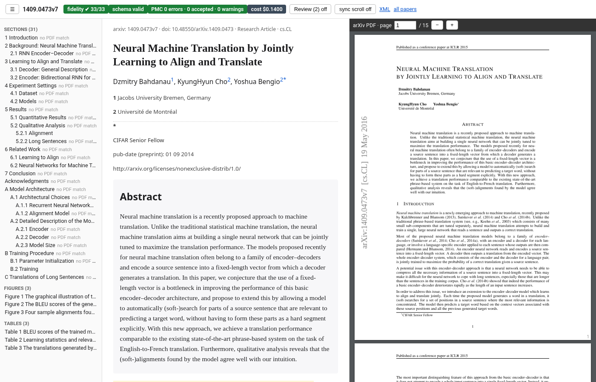
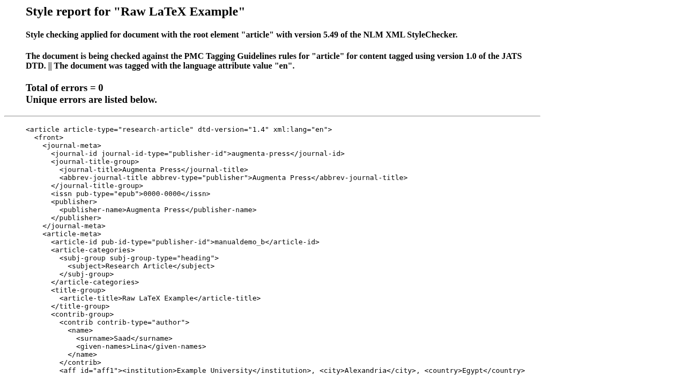
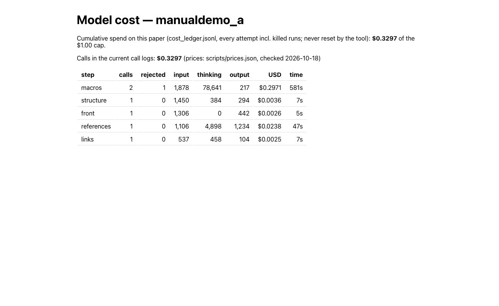
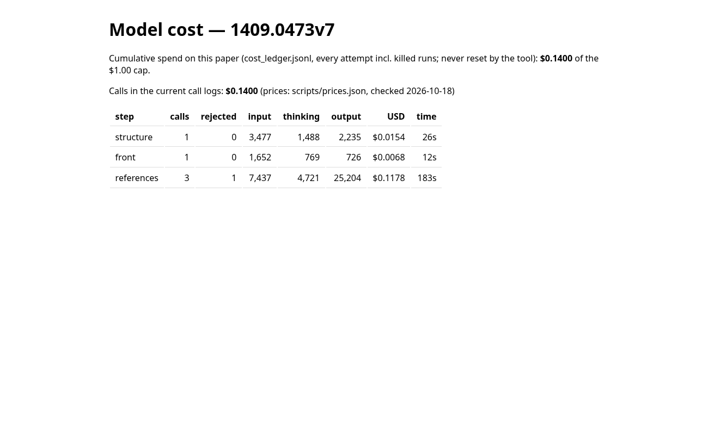

من LaTeX على arXiv إلى JATS جاهز لـ PMC، مع إثبات أن شيئًا لم يُفقد
تحوّل latex-jats مصدر LaTeX لورقة علمية إلى مقالة JATS 1.4 XML وإلى حزمة تسليم (delivery package) لـ PubMed Central. تنجز شيفرة حتمية (deterministic) معظم العمل، ولا يُستشار نموذج لغوي إلا حيث كانت الشيفرة ستضطر إلى التخمين، وكل إجابة من إجاباته تُفحص قبل استخدامها. وفي النهاية تُثبت الأداة، كلمةً كلمة وصيغةً صيغة، أن الـ XML ما زال يحمل كل ما كتبه المؤلف.
latex-jats بتاريخ 11 نوفمبر 2026.1نظرة عامة
ماذا تفعل الأداة
تقبل PubMed Central (PMC) ومعظم الأرشيفات العلمية المقالاتِ بصيغة JATS XML: وهي صيغة صارمة يحددها مخطط (schema) للعنوان والمؤلفين والأقسام والصيغ الرياضية والأشكال والجداول والمراجع. غير أن المؤلفين يكتبون بـ LaTeX، ومصادر arXiv متنوعة بتنوّع مؤلفيها: ماكروهات (macros) خاصة، وعدّادات (counters) أُعيد تنسيقها، وأرقام معادلات مكتوبة يدويًا، وأصناف مستندات (document classes) وأنماط مراجع غير مألوفة.
تأخذ latex-jats ورقة واحدة (أرشيف مصدر من arXiv، ومعه ملف PDF الخاص بـ arXiv إن وُجد) وتُنتج:
- المقالة:
data/output/<id>/<id>.xml، وهي صالحة وفق الـ DTD والـ XSD الرسميين لـ JATS 1.4 Publishing (MathML 3). وتحمل كل صيغة رياضية نصّها الأصلي بـ TeX (<tex-math>) ومعه MathML. - حزمة PMC:
16_package/و<id>.zip، وتضم الـ XML وملف PDF والأشكال بعد تحويلها إلى مواصفات الصور لدى PMC، إضافةً إلى ملف manifest ومجاميع تحقق SHA-256. - حكم (verdict): يذكر
17_status/status.jsonإحدى الحالات: ACCEPTED (يُنشر دون مراجعة)، أو QUARANTINED (مع ذكر كل الأسباب)، أو SOURCE_ERROR (نص LaTeX نفسه معطوب؛ ولم يُنفق شيء). - الأدلة: تقرير fidelity، وتقرير PMC Style Checker، وتقرير تكلفة، ومعاينة (preview) تعمل دون اتصال تعرض الـ XML بجوار ملف PDF، وصفحة نظرة عامة (overview) واحدة لجميع الأوراق.
لماذا يمكن الوثوق بها
النموذج يقرّر؛ والشيفرة تكتب
يصنّف النموذج ويوسم ويختار بين مرشّحين، لكنه لا يكتب نص المقالة أبدًا. كل الـ XML تكتبه الشيفرة من نص المصدر أو من قرار مسجَّل.
كل ردّ يُفحص
يجب أن يجتاز كل ردّ من النموذج فحوصَ الخطوة الخاصة به: الكلمات محفوظة، والصيغ لم تتغير، والمعرّفات (ids) باقية، والمقاطع (segments) إذا أُعيد وصلها طابقت المصدر حرفيًا. والردّ الذي يفشل يُطلب من جديد مع ذكر المشكلات.
إثبات في النهاية
تعيد مرحلة fidelity عدّ كل ما في المصدر (الكلمات، والصيغ، والاستشهادات، والمراجع، والأشكال، والجداول، والحواشي، والعناوين) وتجده في الـ XML. وكل ما حُذف عمدًا يُدرج مع سببه.
المال محميّ
لكل ورقة سقف إنفاق صارم يُفحص قبل كل استدعاء. ويسجّل ledger لا يُضاف إليه إلا في آخره (append-only) كلَّ طلب. ويمنع kill switch جميع الاستدعاءات، وتُعاد الردود المخزّنة (cached) بتكلفة $0.
الـ pipeline في لمحة
تعمل المراحل بهذا الترتيب. كل مرحلة لا تقرأ إلا مجلدات مخرجات المراحل السابقة، وتكتب مجلدها الخاص NN_<stage>/ تحت data/output/<id>/.
ثماني مراحل قد تستدعي النموذج (بالأزرق في الشكل 1). ستٌّ منها (macros, structure, front, references, body, links) تقبل --update وتتخطى العمل إذا كانت مخرجاتها موجودة؛ وbody وlinks تحتفظان أيضًا بذاكرة مؤقتة لكل قرار (raw_decisions.json, model_decisions.json). أما formulas وvalidate فلا تقبلان --update وتعيدان الحساب في كل تشغيل. تعيد formulas تشغيل pandoc وlatexmlmath والقواعد، ثم تبقي إعادة كتابة سابقة من النموذج من ملف formulas.json السابق إذا لم يتغير TeX الخاص بالصيغة ونجح فحص رموزها (symbols check): فلا يصل إلى النموذج إلا الصيغ الجديدة. وتعيد validate التحقق من الـ XML المجمَّع الجديد، وتعيد استخدام إصلاح مقبول لكتلة مطابقة (أو الكتلة نفسها بعد إزاحة الـ ids) من call logs الخاصة بها، وهي الذاكرة المؤقتة التي يُبقيها pipeline.py. وكل استدعاء للنموذج يمر عبر ask()، الذي يجرّب الـ replay أولًا، فلا يُدفع ثمن أي طلب مطابق مرتين في أي مرحلة.
scripts/pipeline.py (القائمة STAGES). تعمل references بالتوازي مع front. ولا تستدعي validate النموذجَ إلا عندما تُبلغ الـ schemas عن أخطاء، ولا تستدعيه formulas إلا عندما لا يستطيع أي محوِّل (converter) قراءة صيغة ما.النتائج على أوراق العيّنة
يأتي الإصدار مع ثلاث أوراق عيّنة من arXiv محوَّلة مسبقًا في data/output: 1406.2661v1 و1409.0473v7 و2610.35187v1. الثلاث كلها ACCEPTED: صالحة وفق الـ schema، وبلا أي خطأ PMC (0)، وكل فحوص الـ fidelity ناجحة، ولا تحذيرات (warnings) في status.json. وحين تتغير مجموعة العيّنات في الإصدار يتغير هذا الجدول معها.
| الورقة | المصدر | الصيغ (MathML) | المراجع / DOIs | استدعاءات النموذج | التكلفة | الحالة |
|---|---|---|---|---|---|---|
1406.2661v1Generative Adversarial Nets | 3,925 كلمة، 10 عناوين، ملف نمط NIPS (style file) | 200 / 200 | 31 / 9 | macros, structure, front ×4 (3 رُفضت وأُعيد طلبها)، references ×2 | $0.1990 | ACCEPTED |
1409.0473v7Neural Machine Translation by Jointly Learning to Align and Translate | 7,138 كلمة، 31 عنوانًا، 8 حواشٍ | 200 / 200 | 29 / 12 | structure, front, references ×3 (1 رُفض وأُعيد طلبه) | $0.1400 | ACCEPTED |
2610.35187v1Fast Calibration of Generalized Posteriors via Dirichlet Reweighting | 7,407 كلمات، 18 عنوانًا، قائمة مراجع .bib | 505 / 505 | 22 / 15 (بلا نموذج: قُرئت من .bib/.bbl) | structure, front, formulas ×5 (1 رُفض وأُعيد طلبه) | $0.0227 | ACCEPTED |
الأرقام من data/output/run_history.jsonl ومن 02_inventory/source_inventory.json لكل ورقة (تشغيلات مدفوعة جديدة من الصفر بالأداة الحالية، 11 نوفمبر 2026، بدأت 16:29 بتوقيت القاهرة). زمن التشغيل الفعلي 303 s (1406) و210 s (1409) و76 s (2610)؛ و$0.3617 للأوراق الثلاث. وكل replay لاحق لهذه الأوراق يكلّف $0.

19_preview/index.html للورقة 1409.0473v7: الـ JATS الذي أنتجناه، معروضًا بالمُصيِّر (renderer) الخاص بالأداة، بجوار ملف PDF من arXiv. تعرض الشارات في الأعلى fidelity 33/33، وschema valid، وPMC 0 errors، والتكلفة $0.1400. انقر أي صورة لتكبيرها.النطاق والحدود
- المُدخل ورقة LaTeX واحدة في كل مرة (معرّف arXiv مثل
1409.0473v7، أو أي اسم مع أرشيف محلي عبر--tar). والتشغيل الجماعي (batch) ما هو إلا حلقة تكرار علىpipeline.py. - الورقة غير الموجودة على arXiv تُحوَّل بالطريقة نفسها مع فرقين: تُعرَّف بـ
publisher-idبدلًا من معرّفات arXiv، وتحصل على placeholder pub-date (تاريخ التشغيل) يُعلَن عنه بسطرWARNING، إلى أن يضع نظام النشر التاريخ الحقيقي (انظر المرحلة 01). - الهدف هو JATS 1.4 Publishing مع MathML 3 (
tag_setفيconfig.json؛ وarchivingمدعوم أيضًا). وبيانات المجلة الوصفية (metadata) هي قيم Augmenta Press المؤقتة، ومنها الـ ISSN المؤقت 0000-0000. - النموذج هو Gemini (
gemini-3.8-flashافتراضيًا) عبر SDK الـgoogle-genai. ولا يوجد مزوّد آخر موصول. - لا ترفع الأداة أي شيء إلى PMC. إنها تُنتج الحزمة فقط؛ أما التسليم فخطوة منفصلة.
- لا تكون الورقة ACCEPTED إلا إذا تحققت كل البوابات (gates). وكل ما فيه شك يصبح QUARANTINED ليراجعه إنسان، ولا يُـ"صلَح" أبدًا في صمت.
2التثبيت والبدء السريع
الأداة مجلد من سكربتات Python. لا توجد حزمة للتثبيت، ولا بيئة افتراضية (virtual environment)، ولا خادم، ولا قاعدة بيانات.
وكل ما يُنتجه التشغيل يُكتب في data/ داخل مجلد الأداة.
المتطلبات
| المكوّن | الإصدار / المصدر | يستخدمه |
|---|---|---|
| Python | 3.11 (ويعمل 3.10 أيضًا). الجهاز المرجعي يستخدم pyenv 3.11.9. | كل شيء |
| حزم Python | requirements.txt: google-genai 2.25.0، pydantic 2.13.4، lxml ≥5.2, pillow ≥10, cairosvg ≥2.7, ntplib 0.4.0, pytest ≥8 | استدعاءات النموذج، والـ schemas، والـ XML، والأشكال، والطوابع الزمنية في call logs، والاختبارات |
| pandoc | 3.x (brew install pandoc). أُنتجت المخرجات هنا بـ pandoc 3.12.1؛ وقد يكتب إصدار آخر MathML مختلفًا. | تحليل LaTeX (بوصفه محلِّلًا parser فقط)، وMathML، ونص المراجع، وpreview --pdf |
| LaTeXML | اختياري (brew install latexml)، الإصدار 0.8.8 هنا | formulas: البديل الاحتياطي (fallback) latexmlmath |
| TeX Live | pdflatex, lualatex | رسوم TikZ في sources، وpreview --pdf |
| poppler | pdftoppm, pdftotext | تحويل أشكال PDF إلى PNG، وفحوص الأدلة من PDF في fidelity، ومراسي (anchors) المعاينة |
| librsvg + cairo | يثبّتهما setup.py عبر Homebrew إن لم يكونا موجودين | أشكال SVG في package |
| الملفات المضمَّنة (vendored) | JATS 1.4 DTD + XSD (NLM)، وPMC Style Checker 5.49، وMathJax 3.2.2، وpdf.js 3.11.174، ينزّلها setup.py إلى scripts/vendor/ مع مجاميع تحقق (checksums) مثبّتة | validate, pmc_style, preview |
| مفتاح الـ API | GOOGLE_API_KEY أو GEMINI_API_KEY، يُقرأ من البيئة فقط. لا يُقرأ أي ملف .env. | مراحل النموذج |
الإعداد لمرة واحدة
cd latex-jats # the tool folder
pip install -r requirements.txt
brew install pandoc # pandoc 3.x
brew install latexml # optional: latexmlmath fallback for formulas
python3 -B scripts/setup.py # fetch what is missing into scripts/vendor/, then check
python3 -B scripts/setup.py --check # report only: downloads and installs nothing; exit 1 if anything is missing
export GOOGLE_API_KEY=... # e.g. in ~/.zshrcناتج setup.py --check على الجهاز المرجعي. لاحظ أن المفتاح يُذكر على أنه موجود دون إظهار قيمته:
OK: DTD already in vendor/jats-publishing-1.4-mathml3/dtd
OK: XSD already in vendor/jats-publishing-1.4-mathml3/xsd
OK: mathjax-3.2.2 already in vendor/mathjax-3.2.2
OK: pdfjs-3.11.174 already in vendor/pdfjs-3.11.174
OK: PMC Style Checker already in vendor/nlm-style
OK: rsvg-convert (librsvg) and cairo for SVG figures
OK: pdftoppm
OK: pdftotext
OK: lualatex
OK: pandoc 3.12.1
OK: latexmlmath (latexmlmath (LaTeXML version 0.8.8))
OK: python package google-genai
OK: python package pydantic
OK: python package lxml
OK: python package pillow
OK: python package cairosvg
OK: Gemini API key present (value not shown)
check completeالمساعدة. يطبع python3 -B scripts/setup.py -h (أو --help) نص المساعدة أدناه ويخرج بالرمز 0؛ ولا ينزّل أو يثبّت أو يفحص شيئًا. و--check هو الوسيط الوحيد الآخر. أما أي وسيط غيرهما فيطبع سطر الاستخدام (usage) ثم نص المساعدة نفسه، ويخرج بالرمز 2 دون تشغيل الإعداد. ولا تُقرأ هذه الوسائط إلا عند تشغيل setup.py بوصفه سكربتًا، فاستيراده (كما تفعل الاختبارات) لا يبدأ إعدادًا أبدًا.
One-time setup: fetch the official JATS 1.4 schemas (tag set from config.json) and check tools.
Downloads, from NLM's public server, the JATS 1.4 DTD and XSD (Publishing by default) with
MathML 3 into vendor/, then reports whether pandoc 3, LaTeXML, the Python
packages and an API key are present. The SVG converter for `package`
(rsvg-convert from librsvg, and the cairo library cairosvg needs) is
installed with Homebrew only when missing. Running it again re-checks and
only downloads/installs what is missing. Python, Homebrew itself and the
requirements.txt packages are NOT installed here.
python3 -B scripts/setup.py # fetch/install what is missing, then check
python3 -B scripts/setup.py --check # only report; downloads/installs nothing--bogus) يكون السطر الأول usage: python3 -B scripts/setup.py [--check | -h]، يليه هذا النص، ويكون رمز الخروج 2.أول تشغيل مجانًا: الـ kill switch
يمكن جعل أي تشغيل عاجزًا عن إنفاق المال. فمع وجود LATEX_JATS_NO_MODEL=1 في البيئة، يرفض src/llm.py كل استدعاء للنموذج قبل أن يُبنى أو يُرسل أي شيء.
ويطلب --no-model أيضًا من المراحل القادرة على العمل دون النموذج أن تفعل ذلك. وعلى ورقة حُوِّلت من قبل، يعيد هذا (replay) كل إجابة مخزَّنة ويُنتج المقالة من جديد بتكلفة $0:
LATEX_JATS_NO_MODEL=1 python3 -B scripts/pipeline.py 1409.0473v7 --no-modelتعيد كل مرحلة نموذج استخدام إجابتها المخزَّنة، فيكلّف التشغيل $0.0000، ويصبح الـ pipeline حتميًا ما دامت الإجابات مخزَّنة: المدخلات نفسها تعطي الـ XML نفسه. وتأتي الإجابات المخزَّنة لأوراق العيّنة الثلاث من آخر تحويل مدفوع لها، بسطر واحد لكل ورقة في data/output/run_history.jsonl:
{"paper_id": "2610.35187v1", "started": "2026-11-11T14:29:47+00:00", "seconds": 76, "stages": ["sources", "inventory", "macros", "structure", "front", "references", "doi", "normalize", "formulas", "body", "links", "assemble", "validate", "fidelity", "pmc_style", "package", "status", "cost", "preview", "overview"], "stopped_at": null, "status": "ACCEPTED", "args": ["2610.35187v1"], "steps": {"structure": {"calls": 1, "rejected": 0, "usd": 0.009}, "front": {"calls": 1, "rejected": 0, "usd": 0.0032}, "formulas": {"calls": 5, "rejected": 1, "usd": 0.0105}}, "usd": 0.0227, "paper_total_usd": 0.0227}
{"paper_id": "1409.0473v7", "started": "2026-11-11T14:29:46+00:00", "seconds": 210, "stages": ["sources", "inventory", "macros", "structure", "front", "references", "doi", "normalize", "formulas", "body", "links", "assemble", "validate", "fidelity", "pmc_style", "package", "status", "cost", "preview", "overview"], "stopped_at": null, "status": "ACCEPTED", "args": ["1409.0473v7"], "steps": {"structure": {"calls": 1, "rejected": 0, "usd": 0.0154}, "front": {"calls": 1, "rejected": 0, "usd": 0.0068}, "references": {"calls": 3, "rejected": 1, "usd": 0.1178}}, "usd": 0.14, "paper_total_usd": 0.14}
{"paper_id": "1406.2661v1", "started": "2026-11-11T14:29:44+00:00", "seconds": 303, "stages": ["sources", "inventory", "macros", "structure", "front", "references", "doi", "normalize", "formulas", "body", "links", "assemble", "validate", "fidelity", "pmc_style", "package", "status", "cost", "preview", "overview"], "stopped_at": null, "status": "ACCEPTED", "args": ["1406.2661v1"], "steps": {"macros": {"calls": 1, "rejected": 0, "usd": 0.0034}, "structure": {"calls": 1, "rejected": 0, "usd": 0.0067}, "front": {"calls": 4, "rejected": 3, "usd": 0.1316}, "references": {"calls": 2, "rejected": 0, "usd": 0.0573}}, "usd": 0.199, "paper_total_usd": 0.199}أما على ورقة جديدة فيتوقف الأمر نفسه عند أول مرحلة تحتاج إلى النموذج، دون أن ينفق شيئًا:
=== sources ===
note: skipped 2 macOS metadata file(s) (._*, .DS_Store, __MACOSX)
WARNING: manualdemo_a is not an arXiv paper: pub-date set to the run date 2026-11-11 as a placeholder (the publishing system should set the real date).
OK: 2 files, main main.tex, 67 lines flat, 1 images -> data/output/manualdemo_a/01_sources
--- sources: ok (0s)
=== inventory ===
OK: 154 words, 1 display + 4 inline formulas, 2 citations, 3 references, 1 figures, 1 tables, 0 footnotes, 4 headings -> data/output/manualdemo_a/02_inventory/source_inventory.json
--- inventory: ok (0s)
=== macros ===
MODEL BLOCKED: paper: model calls are switched off (LATEX_JATS_NO_MODEL=1 / --no-model)
--- macros: exit 3 (1s)
QUARANTINED: manualdemo_a
- pipeline stopped at `macros (budget cap or no-model guard)`
- no fidelity result
- no schema validation result
- no PMC style result
- no final XML manualdemo_a.xml
- no PMC package
WARNING: manualdemo_a is not an arXiv paper: pub-date set to the run date 2026-11-11 as a placeholder (the publishing system should set the real date).
STOPPED at `macros`. Fix it, then resume with --from macros
run cost $0.0000 (this run's calls only) -> run_history.jsonl
exit 3tar في macOS، فهو يحوي أيضًا ملفَّي AppleDouble من نوع ._؛ وتتخطاهما sources. وmanualdemo_a ليست ورقة arXiv، فتحصل على placeholder pub-date (تاريخ التشغيل) وعلى سطر WARNING من sources ثم من status مرة أخرى؛ والتحذيرات لا تغيّر الحكم أبدًا (انظر المرحلة 01، sources).أول تشغيل حقيقي
python3 -B scripts/pipeline.py 1409.0473v7 --tar ~/Downloads/arXiv-1409.0473v7.tar.gz
python3 -B scripts/pipeline.py 1409.0473v7 # or: download the source and PDF from arXiv
python3 -B scripts/pipeline.py manualdemo_a --tar data/input/manualdemo_a.tar.gz --max-usd 0.50 # any name works with --tarالمثال العملي الرئيسي في هذا الدليل هو manualdemo_a، ورقة من صفحة واحدة كُتبت لهذا الدليل. وهي تمرّن كل خطوات النموذج: ماكرو من المؤلف يعرّف مبرهنة (macros)، وشكر غير مرقّم وملحق (structure)، وحاشية للمؤلف المراسل وتمويل (front)، وثلاثة مراجع بينها كتاب (references)، وعدّاد أشكال أُعيد تنسيقه إلى "S1"، و"(1)" مكتوبة يدويًا تخص ورقة مستشهَدًا بها (links).
\documentclass{article}
\usepackage{amsmath,amssymb,amsthm,graphicx}
\newcommand{\R}{\mathbb{R}}
\newcommand{\vect}[1]{\mathbf{#1}}
\newcommand{\mytheorem}[2]{\newtheorem{#1}{#2}[section]}
\mytheorem{lemma}{Lemma}
\renewcommand{\thefigure}{S\arabic{figure}}
\title{A Tiny Paper for the latex-jats Manual}
\author{Amina Hassan\thanks{Corresponding author: amina@example.org}\\
Example University, Cairo, Egypt
\and Omar Farid\\
Institute of Demonstration, Giza, Egypt}
\date{1 November 2026}
\begin{document}
\maketitle
\begin{abstract}
We show how a small \LaTeX{} paper becomes JATS XML. The method keeps every
word and every formula, such as $E = mc^2$.
\end{abstract}
\section{Introduction}\label{sec:intro}
Converting articles to JATS is described in~\cite{jats2024}. Let $\vect{x} \in \R^n$
be a vector. Its length is
\begin{equation}\label{eq:norm}
\|\vect{x}\| = \sqrt{\sum_{i=1}^{n} x_i^2}.
\end{equation}
Equation~\eqref{eq:norm} is standard, and Figure~\ref{fig:sketch} shows a sketch.
\begin{figure}[h]
\centering
\includegraphics[width=0.4\textwidth]{fig1.png}
\caption{A simple sketch of the pipeline.}\label{fig:sketch}
\end{figure}
\section{Method}\label{sec:method}
\begin{lemma}\label{lem:pos}
For every vector $\vect{x}$ we have $\|\vect{x}\| \ge 0$.
\end{lemma}
The bound (1) of~\cite{smith2020} is not our formula (1). Fig. S1 was drawn by
hand, and Table~\ref{tab:sizes} lists two sizes; see also [3].
\begin{table}[h]
\centering
\caption{Two sizes.}\label{tab:sizes}
\begin{tabular}{lr}
Name & Size \\
small & 1 \\
large & 10 \\
\end{tabular}
\end{table}
\section*{Acknowledgements}
We thank the National Science Foundation for grant 12345.
\appendix
\section{A short proof}\label{app:proof}
Lemma~\ref{lem:pos} follows from (1), because a square root is never negative.
\begin{thebibliography}{9}
\bibitem{jats2024} National Information Standards Organization. JATS: Journal
Article Tag Suite, version 1.4. ANSI/NISO Z39.96-2024, 2024.
\bibitem{smith2020} J.~Smith and K.~Lee. Norms of vectors. \emph{Journal of
Examples}, 12(3):45--67, 2020.
\bibitem{knuth1984} D.~E. Knuth. \emph{The {\TeX}book}. Addison-Wesley,
Reading, MA, 1984.
\end{thebibliography}
\end{document}manualdemo_a.tar.gz ملفين فقط: هذا الملف main.tex والملف fig1.png، وهو رسم يدوي صغير للـ pipeline (يظهر بوصفه Figure S1 في ملف PDF أدناه). لإعادة بنائه، احفظ الملفين في مجلد فارغ وشغّل هناك COPYFILE_DISABLE=1 tar czf manualdemo_a.tar.gz main.tex fig1.png (والأرشيف المصنوع دون COPYFILE_DISABLE=1 يعمل أيضًا، لأن sources تتخطى بيانات macOS الوصفية)؛ وأي صورة PNG تصلح بوصفها fig1.png. وملف PDF هو ناتج pdflatex main.tex، محفوظًا باسم data/input/manualdemo_a.pdf.
data/input/manualdemo_a.pdf.استغرق تشغيل مدفوع لـ manualdemo_a مع --max-usd 0.50 مدة 655 s وكلّف $0.3297 (رقم الـ ledger؛ ويقرّبه سطر تكلفة التشغيل في الطرفية إلى $0.3296). وإعادة تشغيل الورقة نفسها (replay) لا تكلّف شيئًا، لأن كل إجابة من النموذج يُعاد استخدامها، وتنتهي بـ ACCEPTED:
=== sources ===
note: skipped 2 macOS metadata file(s) (._*, .DS_Store, __MACOSX)
WARNING: manualdemo_a is not an arXiv paper: pub-date set to the run date 2026-11-11 as a placeholder (the publishing system should set the real date).
OK: 2 files, main main.tex, 67 lines flat, 1 images -> data/output/manualdemo_a/01_sources
--- sources: ok (0s)
=== inventory ===
OK: 154 words, 1 display + 4 inline formulas, 2 citations, 3 references, 1 figures, 1 tables, 0 footnotes, 4 headings -> data/output/manualdemo_a/02_inventory/source_inventory.json
--- inventory: ok (0s)
=== macros ===
OK: data/output/manualdemo_a/03_macros/macros.json exists (use --update to ask again)
--- macros: ok (0s)
=== structure ===
OK: data/output/manualdemo_a/04_structure/structure.json exists (use --update to ask again)
--- structure: ok (0s)
=== front ===
OK: data/output/manualdemo_a/05_front/front.json exists (use --update to ask again)
--- front: ok (0s)
=== references ===
OK: data/output/manualdemo_a/06_references/references.json exists (use --update to ask again)
--- references: ok (0s)
=== doi ===
OK: 0 DOI(s) matched for 3 references (0 Crossref queries, 0 errors) -> data/output/manualdemo_a/07_doi
--- doi: ok (0s)
=== normalize ===
OK: 2 CITE, 1 DISP, 4 HEAD, 4 INL, 6 LABEL, 4 REF tokens, 2 macros expanded, 0 left to pandoc, 0 intentional drops -> data/output/manualdemo_a/08_normalize
--- normalize: ok (0s)
=== formulas ===
pandoc: 5/5 formulas
OK: 5 formulas: 5 pandoc -> data/output/manualdemo_a/09_formulas/formulas.json
--- formulas: ok (0s)
=== body ===
OK: 21/21 tokens placed, 0 footnotes, 3 layout nodes dropped, 0 raw left, 0 problems -> data/output/manualdemo_a/10_body
--- body: ok (1s)
=== links ===
OK: 2 equation links (1 ambiguous: decisions reused from model_decisions.json), 1/1 figures and 1/1 tables numbered (0 tabular(s) take no table number), 1 figure mentions, 1 hand-typed citations linked -> data/output/manualdemo_a/11_links
--- links: ok (0s)
=== assemble ===
WARNING: manualdemo_a is not an arXiv paper: pub-date set to the run date 2026-11-11 as a placeholder (the publishing system should set the real date).
OK: well-formed JATS, 9 KB -> data/output/manualdemo_a/12_assemble/manualdemo_a.xml
--- assemble: ok (0s)
=== validate ===
round 0: 0 schema error(s)
OK: valid against JATS 1.4 Publishing (MathML3) DTD and XSD -> data/output/manualdemo_a/manualdemo_a.xml
--- validate: ok (3s)
=== fidelity ===
PASS words all 154 source words present (0 excused, listed)
PASS words_extras CHK-01 extras_total=0 zones={}
PASS order CHK-02 order_deletions=0 unpaired=0 by_segment={}
PASS float_units CHK-04 float_units failed=0 cell_miss=0
PASS mathml_numbers CHK-07 mathml_numbers failed=0 ordered=0 mi_warn=0
PASS sec_membership CHK-11 sec_membership missing_titles=2 (src=4 xml=2)
PASS funding_ack CHK-14 funding_ack problems=0 notes=['funding-statement contiguous subsequence of ack (funding-from-ack)']
PASS formulas 5 in source = 5 placed + 0 in dropped TOC copies; 0 absent, 0 changed, 0 placed twice; 5 with MathML, 0 tex-math only
PASS citations 2 \cite keys in source = 2 in text + 0 inside references + 0 inside formulas; 3 bibr links in JATS; 0 keys with no reference
PASS references 3 entries in source, 3 <ref> in JATS, 3 tagged into fields; 0 with text differing from the source
PASS unicode 0 references lost non-ASCII letters from the source
PASS ref_ids 3 ref(s); 0 identifier(s) printed outside pub-id/ext-link/uri
PASS cite_style style=numeric [bibitems have no optional [label] -> numeric], PDF=numeric (3/3 numbered reference lines in PDF), XML labels=numeric
PASS figures source: 1 figures, 1 images, 1 figure captions, 0 sub-figures; JATS: 1 figures (0 fig-group with 0 sub-figures), 1 graphics, 1 captions; 1 numbered
PASS tables source: 1 tabular, JATS: 1 <table>
PASS footnotes source: 0, JATS: 0; PDF/fn notes: PDF head shows '*' (fnsymbol) as expected
PASS headings source: 4; JATS: 4 titled sections, 0 dropped, 0 in front matter
PASS titles 0 formulas in 4 source headings, 0 in JATS section titles; 0 headings lost a formula
PASS raw 0 unconverted LaTeX nodes; 0 walker problems
PASS sty_macros 0 accepted .sty macro(s); 0 unexpanded, 0 also defined in the .tex
PASS label_kind 4 label(s) compared, 3 unknown scope; 0 mismatch(es)
PASS algorithm no algorithms in source
PASS placement ok
PASS front_dupes 0 custom-meta value(s); 0 duplicate(s) of a held note/affiliation/funding
PASS unused_excuses 0 unused; 0 CHK-03 problem(s)
PASS authors 2 authors; 0 order/count problem(s)
PASS tex_leaks 0 leak/hidden problem(s)
PASS enumerator_xrefs 0 enumerator-like disp-formula xref(s) (none)
PASS printed 1 equation, 1 figure, 1 table, 1 theorem, 3 section numbers looked up in the arXiv PDF text; 0 not found
PASS pdf_labels not compared; no confirmed mismatch (1 informational note(s))
PASS xref_form 3 disp-formula xref(s); 0 confirmed parenthesis mismatch(es)
PASS pdf_outline not compared: the PDF has no outline (4 headings)
PASS schema valid against JATS 1.4 Publishing DTD + XSD
OK: fidelity PASSED -> data/output/manualdemo_a/14_fidelity/fidelity_report.html
--- fidelity: ok (1s)
=== pmc_style ===
OK: PMC style (article): 0 errors, 0 accepted, 0 warnings -> data/output/manualdemo_a/15_pmc_style/pmc_style.json
--- pmc_style: ok (0s)
=== package ===
OK: 1 figure file(s) (0 converted), manifest + checksums -> data/output/manualdemo_a/16_package, zip data/output/manualdemo_a/manualdemo_a.zip
--- package: ok (0s)
=== status ===
ACCEPTED: manualdemo_a
WARNING: manualdemo_a is not an arXiv paper: pub-date set to the run date 2026-11-11 as a placeholder (the publishing system should set the real date).
--- status: ok (0s)
=== cost ===
manualdemo_a: $0.3297 in the surviving call logs; $0.3297 cumulative (cost_ledger.jsonl, cap $1.00)
macros 2 calls (1 rejected) in 1878 think 78641 out 217 $0.2971 581s
structure 1 calls (0 rejected) in 1450 think 384 out 294 $0.0036 7s
front 1 calls (0 rejected) in 1306 think 0 out 442 $0.0026 5s
references 1 calls (0 rejected) in 1106 think 4898 out 1234 $0.0238 47s
links 1 calls (0 rejected) in 537 think 458 out 104 $0.0025 7s
--- cost: ok (0s)
=== preview ===
PDF anchors: 7/7 blocks found in the arXiv PDF
5 formulas, 6 nav entries, 11 LaTeX sources, review: 4 red / 1 info
OK: 5 papers, 4 accepted, $0.8282 -> data/20_overview/index.html
all papers: data/20_overview/index.html
OK: open data/output/manualdemo_a/19_preview/index.html
--- preview: ok (0s)
=== overview ===
OK: 5 papers, 4 accepted, $0.8282 -> data/20_overview/index.html
--- overview: ok (0s)
run cost $0.0000 (this run's calls only) -> run_history.jsonl
DONE in 7sقراءة النتيجة
- الحكم. افتح
data/output/<id>/17_status/status.json.ACCEPTED: الـ XML والـ zip جاهزان.QUARANTINED: اقرأreasons.SOURCE_ERROR: نص LaTeX معطوب؛ أصلح الأرشيف وأعد التشغيل بدءًا منsources. - انظر إليها. افتح
data/output/<id>/19_preview/index.html(يعمل دون اتصال): الـ XML معروضًا بجوار ملف PDF، مع طبقات مراجعة (review overlays) على كل ما يحتاج إلى عين بشرية. - الأدلة.
14_fidelity/fidelity_report.html(كل فحص)، و15_pmc_style/pmc_style_report.html(مدقّق PMC نفسه)، و18_cost/cost_report.html. - كل الأوراق. في
data/20_overview/index.htmlصف واحد لكل ورقة.

data/20_overview/index.html في مجلد الأداة بعد التشغيل الجديد لأوراق العيّنة الثلاث: كلها ACCEPTED، و$0.3617 إجمالًا. والورقة التي ليست ACCEPTED تعرض أسبابها تحت الحالة ويُظلَّل صفها. أما الورقة التي ليس لها XML نهائي ولا مجلد 12_assemble (مثل manualdemo_c التي توقفت عند inventory) فلا صف لها.أين يوجد كل شيء
latex-jats/
README.md requirements.txt
docs/ design notes, progress and decision logs, DEFERRED_NEXT_PHASE.md, MANUAL/ (this manual)
prompts/<step>/*.md the model prompts (core.md first)
scripts/ pipeline.py + one script per stage, config.json, prices.json, pytest.ini
src/ shared code: walker, checks, ledger, model client, renderers ...
tests/ the test suite (tests/fixtures/: small source copies some tests need)
vendor/ JATS DTD/XSD, PMC Style Checker, MathJax, pdf.js (filled by setup.py)
data/
input/<id>.tar.gz + <id>.pdf sources (copied here by --tar or downloaded from arXiv)
output/<id>/ everything the pipeline writes for one paper
output/run_history.jsonl one line per run, all papers
20_overview/index.html the overview page
spend/<date>/ spend report of paid calls made under a run id
(backups and scratch copies are kept in a separate folder OUTSIDE the tool folder, never inside it)مجلد مخرجات ورقة واحدة بعد تشغيل كامل (manualdemo_a):
data/output/manualdemo_a/
├── 00_api_call_logs/
│ ├── 2026-11-11T08-29-49.904Z_paper_55f35dbcb3d5-a1_macros/ (call.json, contents_01_prompt.txt, contents_02_text.txt, problems.json, prompt_parts, request.json, response.json, response_text.txt)
│ ├── 2026-11-11T08-34-19.640Z_paper_55f35dbcb3d5-a2_macros/ (call.json, contents_01_prompt.txt, contents_02_text.txt, contents_03_text.txt, prompt_parts, request.json, response.json, response_text.txt)
│ ├── 2026-11-11T08-34-27.126Z_paper_ba1eec5c7f73-a1_structure/ (call.json, contents_01_prompt.txt, contents_02_text.txt, prompt_parts, request.json, response.json, response_text.txt)
│ ├── 2026-11-11T08-34-33.077Z_paper_a08dcd6c208f-a1_front/ (call.json, contents_01_prompt.txt, contents_02_text.txt, prompt_parts, request.json, response.json, response_text.txt)
│ ├── 2026-11-11T08-35-15.205Z_refs_01_8936cf295cde-a1_references/ (call.json, contents_01_prompt.txt, contents_02_text.txt, prompt_parts, request.json, response.json, response_text.txt)
│ └── 2026-11-11T08-35-28.042Z_paper_317ebfb61c51-a1_links/ (call.json, contents_01_prompt.txt, contents_02_text.txt, prompt_parts, request.json, response.json, response_text.txt)
├── 01_sources/
│ ├── arxiv_meta.json (56 B)
│ ├── files/
│ │ ├── fig1.png (2,578 B)
│ │ └── main.tex (2,201 B)
│ ├── main_flat.tex (2,201 B)
│ └── sources.json (431 B)
├── 02_inventory/
│ ├── source_check.json (141 B)
│ └── source_inventory.json (3,246 B)
├── 03_macros/
│ └── macros.json (1,058 B)
├── 04_structure/
│ └── structure.json (1,373 B)
├── 05_front/
│ └── front.json (1,746 B)
├── 06_references/
│ └── references.json (7,247 B)
├── 07_doi/
│ └── doi.json (1,174 B)
├── 08_normalize/
│ ├── body.tex (1,219 B)
│ ├── drops.json (121 B)
│ ├── front_abstract.tex (179 B)
│ ├── front_subtitle.tex (57 B)
│ ├── front_title.tex (95 B)
│ └── tokens.json (2,584 B)
├── 09_formulas/
│ └── formulas.json (1,824 B)
├── 10_body/
│ ├── back_parts.json (390 B)
│ ├── body.xml (3,212 B)
│ ├── front_parts.json (553 B)
│ ├── raw_decisions.json (288 B)
│ └── walk_report.json (1,350 B)
├── 11_links/
│ ├── back_parts.json (446 B)
│ ├── body.xml (3,127 B)
│ ├── front_parts.json (492 B)
│ ├── links.json (419 B)
│ └── model_decisions.json (171 B)
├── 12_assemble/
│ └── manualdemo_a.xml (9,447 B)
├── 13_validate/
│ ├── manualdemo_a.xml (9,447 B)
│ └── validation.json (191 B)
├── 14_fidelity/
│ ├── fidelity.json (9,078 B)
│ ├── fidelity_report.html (4,909 B)
│ └── integrity_report.json (5,853 B)
├── 15_pmc_style/
│ ├── pmc_style.json (363 B)
│ └── pmc_style_report.html (12,667 B)
├── 16_package/
│ ├── checksums.sha256 (241 B)
│ ├── fig1.png (2,578 B)
│ ├── manifest.json (965 B)
│ ├── manualdemo_a.pdf (195,729 B)
│ └── manualdemo_a.xml (9,447 B)
├── 17_status/
│ └── status.json (852 B)
├── 18_cost/
│ └── cost_report.html (1,299 B)
├── 19_preview/
│ ├── anchors.json (1,030 B)
│ ├── assets/ (8 files: preview data, scripts, styles, vendored MathJax and pdf.js)
│ └── index.html (8,108 B)
├── cost_ledger.jsonl (3,376 B)
├── manualdemo_a.xml (9,447 B)
├── manualdemo_a.zip (193,519 B)
└── run_history.jsonl (1,757 B)3المفاهيم الأساسية
ست أفكار تشرح كل ما تفعله الأداة تقريبًا. وتستحق القراءة قبل مرجع المراحل.
معرّف الورقة، والمراحل، والمجلدات
يتعلق كل تشغيل دائمًا بـ معرّف ورقة (paper id) واحد: معرّف arXiv مع رقم الإصدار (1409.0473v7)، أو أي اسم حين يُعطى الأرشيف عبر --tar (manualdemo_a).
ويُحسم كون المعرّف معرّفَ arXiv في مكان واحد، هو src/common.py is_arxiv_id، الذي يختبر الجزء الواقع قبل أول _ (فيبقى متغيّر اختباري مثل 1409.0473v7_x معدودًا من arXiv). ولا تحصل على تنزيلات arXiv وبياناته الوصفية ومعرّفاته في الـ XML إلا معرّفاتُ arXiv؛ وأي معرّف آخر يعني ورقة محلية (local paper)، لها publisher-id وplaceholder pub-date (المرحلة 01، المرحلة 12).
كل مرحلة سكربت واحد، scripts/<stage>.py <paper_id>، يمكن تشغيله وحده أيضًا. يقرأ المجلدات السابقة ويكتب مجلدًا واحدًا بالضبط، مرقّمًا بحسب ترتيب الـ pipeline (src/common.py STAGE_DIRS):
| المجلد | المرحلة | المجلد | المرحلة |
|---|---|---|---|
00_api_call_logs | كل استدعاء للنموذج (جميع المراحل) | 10_body | body |
01_sources | sources | 11_links | links |
02_inventory | inventory | 12_assemble | assemble |
03_macros | macros | 13_validate | validate |
04_structure | structure | 14_fidelity | fidelity |
05_front | front | 15_pmc_style | pmc_style |
06_references | references | 16_package | package |
07_doi | doi | 17_status | status |
08_normalize | normalize | 18_cost | cost |
09_formulas | formulas | 19_preview | preview |
المرحلة 20، overview، عامة: data/20_overview/index.html. ويتبع جذرُ المخرجات المتغيرَ LATEX_JATS_OUTPUT، ويتبع مجلدُ النظرة العامة LATEX_JATS_OVERVIEW؛ وكلاهما موجود من أجل النسخ المؤقتة والاختبارات.
الرموز (Tokens): كيف يُحمى المحتوى
pandoc محلِّل جيد لـ LaTeX، لكنه كان سيعيد كتابة الصيغ ويخمّن الاستشهادات ويُضيّع التسميات (labels). لذلك، قبل أن يرى pandoc النص، تستبدل normalize كل صيغة واستشهاد وإحالة مرجعية (cross-reference) وتسمية وعلامة عنوان بـ رمز (token) معتم: كلمة لا يستطيع pandoc إفسادها، مثل XJATSINL0005X.
ويُحفظ الأصل الدقيق في 08_normalize/tokens.json. وبعد pandoc، يفكّ الـ walker كل token ويعيده إلى عناصر JATS. وهناك ستة أنواع:
| الـ Token | يمثّل | يصبح |
|---|---|---|
XJATSDISPnnnnX | صيغة منفصلة (display formula) (نصّها بـ TeX، ووسومها tags، وتسمياتها) | <disp-formula id><label/><alternatives><tex-math/><mml:math/></alternatives> |
XJATSINLnnnnX | صيغة داخل السطر (inline formula) | <inline-formula id><alternatives>… |
XJATSCITEnnnnX | مفتاح واحد من \cite | <xref ref-type="bibr" rid="rN">N</xref> |
XJATSREFnnnnX | \ref / \eqref | <xref> إلى العنصر الذي يسمّيه \label (يُحلّ في الأخير) |
XJATSLABELnnnnX | \label | الـ id الخاص بالعنصر المحيط sec / fig / table-wrap / fn / statement |
XJATSHEADnnnnX | عنوان حسمته structure | تسميته ودوره (section, appendix, ack) |
في 1409.0473v7 يبلغ ذلك 339 token: 175 INL و62 CITE و31 HEAD و31 REF و25 DISP و15 LABEL. وتُبلغ مرحلة body عن "339/339 tokens placed": لم يضِع أيٌّ منها في طريقه عبر pandoc.
عقد النموذج (model contract)
تمر كل استدعاءات النموذج عبر دالة واحدة، src/llm.py ask(). تعطيها المرحلة payload (نصًا عاديًا بنته من المصدر)، وprompt (الملفات في prompts/<step>/)، وschema للاستجابة (response schema) (صنف pydantic يُرسَل بوصفه JSON response schema الخاص بـ Gemini)، ودالة فحص (check). ولا يُستخدم الردّ إلا إذا أمكن تحليله وفق الـ schema ولم تُعِد دالة الفحص أي مشكلات. وإلا فتُرسل المشكلات إلى النموذج ويُسأل من جديد، حتى 4 محاولات.
وما يجوز للنموذج أن يقرّره ضيّق عن قصد:
| الخطوة | يقرّر النموذج | الفحص الذي يُبقيه أمينًا |
|---|---|---|
| macros | معنى تعريفات الماكرو المعقدة (المبرهنات، والبيئات environments، وتعريفات \def ذات المحدِّدات) | كل اسم وكلمة مطبوعة وعدّاد يجب أن يأتي من التعريفات؛ وكل عنصر مُدرج يجب أن يُحتسب |
| structure | دور كل عنوان ومستواه ورقمه المطبوع | يُجاب عن كل عنوان مرة واحدة؛ وكلمات العنوان هي كلمات المصدر بالضبط؛ وإزاحة المستويات متّسقة |
| front | أي نص في المقدّمة (front matter) هو العنوان أو المؤلف أو الانتماء أو البريد الإلكتروني أو التمويل… | نسخ حرفية؛ وكل كلمة في المقدّمة تستقر في مكان ما أو في unused مع سبب |
| references | أين يبدأ كل حقل من حقول المرجع وأين ينتهي | المقاطع (segments) إذا وُصلت يجب أن تساوي نص المدخل حرفًا بحرف |
| formulas | إعادة كتابة لنص TeX لا يقرؤه أي محرّك، مخصّصة للمحوِّل فقط | يجب أن تتحوّل، وأن تحفظ الحروف والأرقام والرموز نفسها؛ ويظل نص TeX الأصلي مشحونًا |
| body_raw | ما تطبعه عقدة LaTeX خام (raw node) غير مقروءة (drop / text / latex / xml) | لا تُفقد ولا تُضاف كلمة ولا token صيغة؛ وعناصر سليمة البنية (well-formed) ومسموح بها فقط |
| links | الأرقام المطبوعة للأشكال ذات الترقيم المخصّص؛ وأهداف الإشارات الملتبسة مثل "(1.3)" | لكل شكل رقم فريد واحد بالضبط؛ والأهداف من المرشّحين المعطَين فقط |
| validate_fix | إصلاح يقتصر على الترميز (markup) لكتلة يرفضها الـ schema | الكلمات نفسها، وtex-math نفسه، والـ ids نفسها، وبنية سليمة |
التخزين المؤقت (Caching) والـ replay بتكلفة $0
لا يُدفع ثمن شيء مرتين. ثلاث طبقات تجعل إعادة التشغيل مجانية:
- مخرجات المرحلة على القرص. تطبع
macrosوstructureوfrontوreferencesالعبارة "exists (use --update to ask again)" ولا تفعل شيئًا إذا كان ملف JSON الخاص بها موجودًا. أماbodyوlinksفتحتفظان بذاكرة مؤقتة لكل عنصر (raw_decisions.json,model_decisions.json) وتعيدان فحصها وفق قواعد اليوم. - الـ replay من call logs. قبل أي طلب، يبحث
llm.replay()في00_api_call_logs/عن استدعاء سابق مقبول للخطوة نفسها بنص الـ prompt نفسه وبصمة الـ payload نفسها (sha256، أول 16 حرفًا ست عشريًا). فإن كان فحص اليوم لا يزال يُجيز ذلك الردّ، أُعيد استخدامه بتكلفة $0، حتى تحت الـ kill switch. ويمكن للخطوات توسيع المطابقة: تعيدvalidateترقيم الـ ids المولَّدة (renumber)، وتكيّفfrontردًّا سابقًا (adapt) وقد تعيد استخدام ردّ رُفض مرة لكنه ينجح اليوم (reuse_rejected). - ذاكرات البحث (Lookup caches). يحتفظ
07_doi/doi.jsonبمرشّحي Crossref ويعيد الحكم عليهم وفق القواعد الحالية في كل تشغيل دون استعلام جديد.
ولأن تقرير التكلفة يجمع call logs، يحذف pipeline.py السجلات القديمة لمرحلة نموذج على وشك أن تُسأل من جديد (مع --update، أو حين يكون مجلد مخرجاتها فارغًا) ويطبع ما حذفه. أما الـ ledger فلا يُمسّ أبدًا.
المال: السقف، والـ ledger، والـ kill switch
- سقف لكل ورقة. قبل كل محاولة، تقارن
ledger.check_budget()الإنفاق التراكمي للورقة طوال عمرها فيcost_ledger.jsonl(كل ما أنفقته في جميع التشغيلات؛ ولا تصفّره الأداة أبدًا) بالسقف:budget.max_usd_per_paper(1.00)، ويُتجاوز بـLATEX_JATS_MAX_USD_PER_PAPERأوpipeline.py --max-usd. وما إن يبلغ الإجمالي السقف حتى لا يُرسل شيء:BUDGET STOP، ورمز الخروج 3. ولأن الاختبار يجري قبل الاستدعاء ("spent ≥ cap")، قد يرفع الاستدعاء الأخير الإجمالي فوق السقف قليلًا، بمقدار ذلك الاستدعاء الواحد على الأكثر. ويرفع--max-usd 1.50السقف التراكمي إلى $1.50 لذلك الاستدعاء فقط؛ وليس هو $1.50 جديدة للتشغيل: فالورقة التي أنفقت $0.40 من قبل يمكنها إنفاق نحو $1.10 إضافية. - سقوف التشغيل. حين يُضبط
LATEX_JATS_RUN_ID(للتشغيلات الجماعية المدفوعة)، يسري سقفان إضافيان على الإنفاق في هذا التشغيل مضافًا إليه التكلفة المتوقعة للاستدعاء التالي، فيوقفان العمل قبل التجاوز: لكل ورقة في كل تشغيل (max_usd_per_paper_run، 0.80)، وعلى التشغيل كله (max_usd_run، 5.00). ويُضاف كل استدعاء مدفوع أيضًا إلىdata/spend/<date>/spend_report.jsonlو.md. - التكلفة المتوقعة (Projected cost). أسوأ حالة لاستدعاء واحد: الـ tokens المقدّرة للمدخلات بسعر المدخلات، مضافًا إليها 65,536 token للمخرجات بسعر المخرجات، أي نحو $0.246 للاستدعاء مع gemini-3.8-flash.
- الـ Ledger.
data/output/<id>/cost_ledger.jsonl: سطرstartقبل كل طلب وسطرdoneبعده، بما في ذلك المحاولات المرفوضة. والسطرstartالذي لا يتبعهdone(تشغيل قُتل) يُحتسب بتقدير يساوي المدخلات + 4,000 token للمخرجات. ولا تحذف الأداة هذا الملف ولا تعيد كتابته أبدًا؛ ولتصفير عدّاد ورقة، أعد تسميته يدويًا. - الـ Kill switch. يجعل
LATEX_JATS_NO_MODEL=1كل استدعاء يرفعMODEL BLOCKEDقبل أن يُبنى أو يُسجَّل أو يُرسل أي شيء (رمز الخروج 3). - الأسعار.
scripts/prices.json، مؤرَّخة بتواريخ سريان. يكلّف gemini-3.8-flash مبلغ $0.75 لكل مليون token مدخلات و$3.75 لكل مليون token مخرجات حتى 2026-12-31، ثم $1.50 و$7.50. تُحاسَب tokens الـ thinking بسعر المخرجات. ولا تسري أسعار الدفعات (batch) إلا على الاستدعاءات المسجّلة بـ"batch_api": true؛ ولا ترسل الأداة أيًا منها اليوم.
الأحكام (Verdicts) ورموز الخروج
| النتيجة | المعنى | الخطوة التالية المعتادة |
|---|---|---|
| ACCEPTED | الـ XML النهائي موجود؛ وصالح وفق الـ schema؛ وكل فحص fidelity جرى ونجح؛ و0 أخطاء PMC خارج ACCEPTED_ERRORS؛ والنتائج تحمل SHA-256 للـ XML الحالي؛ والحزمة تجتاز التحقق؛ وكل استدعاء للنموذج نجح أو ثبت أنه حُلّ؛ والـ pipeline لم يتوقف | سلّم <id>.zip |
| QUARANTINED | فشلت بوابة ما أو غابت؛ وreasons تسردها كلها | اقرأ الأسباب، وأصلح المرحلة أو الـ prompt أو المصدر، وأعد التشغيل بـ --from تلك المرحلة |
| SOURCE_ERROR | نص LaTeX المُدخل معطوب (لا يوجد \end{document}، أو بيئة غير مغلقة، أو شكل مفقود أو ملف \input مفقود…)؛ وترفض مراحل النموذج العمل حتى يتغير المصدر | أصلح الأرشيف، وأعد التشغيل من sources |
| رمز الخروج | المصدر | المعنى |
|---|---|---|
0 | أي سكربت | نجاح (status.py: ACCEPTED) |
1 | المراحل، status.py | انتهى مع مشكلات / فشل فحص / QUARANTINED. يواصل pipeline.py بعد الخروج بالرمز 1 من fidelity وpmc_style وpackage وstatus، ويتوقف بعد أي مرحلة أخرى. |
3 | مراحل النموذج | BUDGET STOP أو MODEL BLOCKED |
4 | inventory, pipeline.py | SOURCE_ERROR |
130 | pipeline.py | أُوقف بإشارة SIGINT/SIGTERM. ومع ذلك يُسجَّل التشغيل في run_history.jsonl. |
التحذيرات (Warnings). إلى جانب الحكم، قد يحمل status.json قائمة warnings: حقائق ينبغي أن يعرفها شخص ما لكنها لا تجعل الورقة خاطئة. وهناك اليوم اثنتان: ورقة arXiv تعذّر جلب ترخيصها (فلا يكون في الـ XML عندئذ <license>)، والـ placeholder pub-date لورقة محلية. وتطبع status كلًّا منها في سطر WARNING: بعد الحكم وأسبابه. والتحذيرات لا تغيّر الحكم ولا رمز الخروج أبدًا، ويُحذف المفتاح حين لا توجد تحذيرات (كما في أوراق العيّنة الثلاث).
4مرجع المراحل
تتبع كل مرحلة أدناه النمط نفسه: الغرض منها، وما تقرؤه، وكيف تعمل خطوة بخطوة، وما تكتبه، ومن يقرؤه بعدها، وكيف تفشل، وما تخزّنه مؤقتًا أو تسجّله.
والأمثلة ملفات حقيقية مقتبسة كاملة، ويذكر كل تعليق مصدرَها: ورقة عرض (demo paper) (manualdemo_a وmanualdemo_b وmanualdemo_c: أوراق صغيرة كُتبت لهذا الدليل وشُغّلت في نسخة عمل كاملة من الأداة) أو ورقة عيّنة (sample paper) مرفقة بالإصدار (1406.2661v1 و1409.0473v7 و2610.35187v1)، بمعرّف arXiv الخاص بها. وما لم يذكر التعليق خلاف ذلك، فمخرجات أوراق العرض مأخوذة من replay بتكلفة $0 بالأداة الحالية في 11 نوفمبر 2026. وتُعرض المسارات كما تظهر داخل أي مجلد للأداة (data/output/<id>/…). وفي الملفات المقتبسة، اختُصر المجلد المطلق للجهاز الذي صُنعت عليه إلى المسار النسبي داخل الأداة (مثل scripts/body.py وpython3)، وتُعرض أرشيفات أوراق العرض، التي مُرّرت عبر --tar من مجلد خارج الأداة، باسم data/input/<id>.tar.gz، وهو المكان المعتاد للمدخلات في الأداة. ولا يتغير أي شيء آخر في الملف المقتبس.
ويمكن أيضًا تشغيل كل مرحلة وحدها: python3 -B scripts/<stage>.py <paper_id>.
01 · sources حتمية
| السكربت | scripts/sources.py <paper_id> [--tar TAR] |
|---|---|
| يقرأ | أرشيف المصدر، من (بالترتيب) --tar (يُنسخ إلى data/input/<id>.tar.gz)، أو ملف موجود data/input/<id>.tar.gz، أو، لمعرّف arXiv فقط، تنزيل من arxiv.org/src/<id>. ولمعرّف arXiv يُجلب ملف PDF بجواره بقدر الإمكان؛ أما ملف PDF الخاص بورقة محلية فيجب وضعه في data/input/<id>.pdf. |
| يكتب | 01_sources/files/ (الأرشيف بعد فكّه)، main_flat.tex, sources.json, arxiv_meta.json |
| تقرؤه لاحقًا | كل مرحلة لاحقة (main_flat.tex هو المصدر الوحيد للحقيقة)؛ وassemble (بيانات arXiv الوصفية)؛ وpackage (الأشكال، ملف PDF) |
الغرض. تحويل أرشيف من ملفات كثيرة إلى ملف LaTeX واحد مسطّح (flat) تستطيع المراحل اللاحقة قراءته دون أن تعرف شيئًا عن \input أو عن بنية الأرشيف.
- الاستخراج الآمن (Safe extraction) (
safe_extract): تُرفض المسارات المطلقة و..والروابط. وتُتخطى بيانات macOS الوصفية قبل أي شيء آخر (is_macos_metadata): ملفات AppleDouble من نوع._*، و.DS_Store، وكل ما تحت مجلد__MACOSX. لا شيء منها مُدخل LaTeX، فلا يُفك أيٌّ منها ولا يُدرج فيsources.jsonولا يُعدّ صورة. وحين يُتخطى أي منها، تذكر الطرفية عددها:note: skipped 2 macOS metadata file(s) (._*, .DS_Store, __MACOSX). - الملف الرئيسي (Main file) (
find_main): المدخلtoplevelفي00README.jsonالخاص بـ arXiv. وإلا فملفات.texالتي تحوي\documentclassو\begin{document}معًا، مع تفضيلmainأوmsأوpaperأوarticle، ثم الأكبر حجمًا. وإن لم يوجد أي منها:FAILED: no .tex file with \documentclass and \begin{document}. - التسطيح (flatten)، بالدالة
flatten: تُدمج\inputو\includeو\subfileفي مكانها تكراريًا، وتُزال التعليقات من كل ملف، وتُتخطى الشيفرة الميتة (\iffalse…\fi). - قائمة المراجع (Bibliography) (
inline_bbl): يُستبدل\bibliography{…}بملف.bblالمترجَم حين يحويه الأرشيف. فـ arXiv يشترط وجود.bbl، وكثير من الأرشيفات لا تحمل.bib. أما ملف.bblالخاص بـ biblatex (الذي فيه\entry{) فلا يُدمج؛ بل يُدرج فيbiblatex_bblويُقرأ لاحقًا بوصفه بيانات منظَّمة. - المفاتيح (Toggles) والرسوم: تحسم
resolve_togglesأوامر\iftoggle{…}في مسارات الرسومات وفي النص. وتترجمrender_drawings(src/drawings.py) كل رسم TikZ أو pgfplots أو circuitikz أو tikz-cd أو chemfig على حدة بـpdflatex، في مستندstandaloneيعيد استخدام تمهيد (preamble) الورقة، وتستبدله بـ\includegraphics{jats-drawings/drawing-N.pdf}. والرسم الذي تفشل ترجمته يبقى LaTeX ويُسجَّل. - الأشكال (Figures) (
convert_figures): تصبح أشكال PDF صورًا PNG بجوارها (pdftoppm، بدقة 300 dpi في حدود سقف البكسلات في الحزمة)، وتصبح EPS/PS صورًا PNG عبر Ghostscript. وتبقى الملفات الأصلية. - بيانات arXiv الوصفية (لمعرّفات arXiv فقط؛
arxiv_metadata): تواريخ النشر، والعنوان، والمؤلفون، والتصنيفات من Atom API، إضافةً إلى الترخيص من OAI-PMH. ويُجرَّب كل طلب (fetch_text) حتى 4 مرات، بانتظار 3 و9 و27 s، عند HTTP 429/503 وعند انتهاء المهلة وأخطاء الاتصال. ولا يُعاد استخدام ملفarxiv_meta.jsonموجود إلا إذا كان فيهpublishedوlicenseغير فارغ معًا (refresh_arxiv_meta)؛ وحين يغيب الترخيص يُطلب من جديد ويُسقط أي مدخلerrorقديم. وإن تعذّر جلب الترخيص مع ذلك، تمضي الورقة دونه: لا يكون في الـ XML<license>، وتطبعsourcesتحذيرًا وتسجّلstatusتحذيرًا، ولا يتأثر الحكم. - الأوراق المحلية (أي معرّف ليس معرّف arXiv): لا طلب إلى arXiv إطلاقًا. تكتب
load_paper_metaالملفarxiv_meta.jsonمرة واحدة مع"source": "local"وplaceholder pub-date (تاريخ نشر مؤقت): تاريخ التشغيل، مع"published_source": "placeholder-run-date". وتعيد التشغيلات اللاحقة استخدام ذلك الملف، فيبقى التاريخ ثابتًا. والتاريخ قيمة مؤقتة لنظام النشر الذي ينبغي أن يضع التاريخ الحقيقي؛ والمكان الوحيد الذي يقرّره هوscripts/src/pubdate.pylocal_publication_dates، فتغيير السياسة يعني تغيير تلك الدالة وحدها. وتطبعsourcesالإشعار تحذيرًا، وتكرّرهassembleوstatus.
WARNING: manualdemo_a is not an arXiv paper: pub-date set to the run date 2026-11-11 as a placeholder (the publishing system should set the real date).
WARNING: arXiv license not fetched: <license_error or "no <license> in the OAI record">; the XML will have no <license>. Rerun sources when arXiv is reachable.
note: no PDF for a local paper: put it at data/input/<id>.pdf
FAILED: no source archive (pass --tar PATH)السطر الأول من manualdemo_a (11 نوفمبر 2026). والثاني هو تحذير الترخيص كما تطبعه الشيفرة، مع ملء السبب؛ ولا تطبعه أي ورقة عيّنة، لأن تراخيصها جُلبت. والسطران الأخيران يخصّان الأوراق المحلية: غياب ملف PDF مجرد ملاحظة (note) (فلا يمكن عندئذ تشغيل فحوص PDF في fidelity)، والورقة المحلية التي لا أرشيف لها تتوقف (رمز الخروج 1).
{
"converted_figures": {
"figures/1511.pdf": "figures/1511.png",
"figures/2799.pdf": "figures/2799.png",
"figures/374.pdf": "figures/374.png",
"figures/EEA.pdf": "figures/EEA.png",
"figures/bleu.pdf": "figures/bleu.png",
"figures/rnnsearch.pdf": "figures/rnnsearch.png"
},
"drawings": [],
"biblatex_bbl": [],
"paper_id": "1409.0473v7",
"main": "search.tex",
"files": [
"fancyhdr.sty",
"figures/.svn/all-wcprops",
"figures/.svn/entries",
"figures/.svn/prop-base/1511.pdf.svn-base",
"figures/.svn/prop-base/2799.pdf.svn-base",
"figures/.svn/prop-base/374.pdf.svn-base",
"figures/.svn/prop-base/rnnsearch.pdf.svn-base",
"figures/.svn/text-base/1511.pdf.svn-base",
"figures/.svn/text-base/2799.pdf.svn-base",
"figures/.svn/text-base/374.pdf.svn-base",
"figures/.svn/text-base/EEA.pdf.svn-base",
"figures/.svn/text-base/bleu.pdf.svn-base",
"figures/.svn/text-base/rnnsearch.pdf.svn-base",
"figures/.svn/text-base/rnnsearch.svg.svn-base",
"figures/1511.pdf",
"figures/2799.pdf",
"figures/374.pdf",
"figures/EEA.pdf",
"figures/bleu.pdf",
"figures/rnnsearch.pdf",
"figures/rnnsearch.svg",
"iclr2015.sty",
"main.tex",
"search.bbl",
"search.tex",
"supp.tex"
],
"assets": [
"figures/1511.pdf",
"figures/2799.pdf",
"figures/374.pdf",
"figures/EEA.pdf",
"figures/bleu.pdf",
"figures/rnnsearch.pdf",
"figures/rnnsearch.svg"
],
"bbl": "search.bbl",
"bib_files": [],
"compiler": null,
"pdf": "1409.0473v7.pdf",
"log": [
"inlined main.tex",
"inlined supp.tex",
"\\bibliography replaced by search.bbl",
"converted figures/1511.pdf -> 1511.png",
"converted figures/2799.pdf -> 2799.png",
"converted figures/374.pdf -> 374.png",
"converted figures/EEA.pdf -> EEA.png",
"converted figures/bleu.pdf -> bleu.png",
"converted figures/rnnsearch.pdf -> rnnsearch.png"
]
}{
"published": "2014-09-01T16:33:02Z",
"updated": "2016-05-19T21:53:22Z",
"title": "Neural Machine Translation by Jointly Learning to Align and Translate",
"authors": [
"Dzmitry Bahdanau",
"Kyunghyun Cho",
"Yoshua Bengio"
],
"primary_category": "cs.CL",
"categories": [
"cs.CL",
"cs.LG",
"cs.NE",
"stat.ML"
],
"journal_ref": null,
"published_doi": null,
"license": "http://arxiv.org/licenses/nonexclusive-distrib/1.0/"
}{
"converted_figures": {},
"drawings": [],
"biblatex_bbl": [],
"paper_id": "manualdemo_a",
"main": "main.tex",
"files": [
"fig1.png",
"main.tex"
],
"assets": [
"fig1.png"
],
"bbl": null,
"bib_files": [],
"compiler": null,
"pdf": "manualdemo_a.pdf",
"log": []
}{
"source": "local",
"published": "2026-11-11",
"published_source": "placeholder-run-date"
}أنماط الفشل. لا ملف رئيسي، أو ورقة محلية بلا أرشيف (رمز الخروج 1، FAILED). وأخطاء التنزيل ملاحظات لا حالات فشل (note: could not download …). وحين يتعذّر جلب بيانات Atom الوصفية لورقة arXiv، يسجّل arxiv_meta.json القيمة error ولا يكون للورقة تاريخ نشر، فيُبلغ PMC عن تاريخ نشر مفقود؛ أعد تشغيل sources حين يصبح arXiv متاحًا. أما غياب الترخيص فلا يعطي إلا تحذيرًا. الذاكرات المؤقتة (Caches). الأرشيف في data/input/؛ وبيانات arXiv الوصفية متى احتوت published وترخيصًا معًا؛ والبيانات الوصفية المؤقتة لورقة محلية متى كُتبت.
02 · inventory حتمية بوابة
| السكربت | scripts/inventory.py <paper_id> |
|---|---|
| يقرأ | 01_sources/main_flat.tex, files/ |
| يكتب | 02_inventory/source_inventory.json, source_check.json |
| تقرؤه لاحقًا | fidelity (المقياس المرجعي)، وpipeline.py (حارس SOURCE_ERROR)، وstatus |
الغرض. عدّ كل ما يراه قارئ المصدر، قبل أي تحويل ودون أي علم بالمراحل اللاحقة: الكلمات، والصيغ المنفصلة وداخل السطر، ومفاتيح الاستشهاد، وعناصر قائمة المراجع، والأشكال، والرسومات، والتعليقات التوضيحية (captions)، والجداول، والحواشي، والعناوين، والتسميات، والإحالات، والروابط (URLs). ويجب أن يوجد كل عدد من جديد في الـ XML النهائي. وتفحص المرحلة المُدخلَ نفسه بحثًا عن أخطاء، فلا يُنفق مال على ورقة معطوبة.
فحص المصدر (Source check) (src/source_check.py). لا تكون الأخطاء إلا إشارات قوية لا لبس فيها، حتى لا تُوقف خطأً ورقةٌ ترجمها arXiv:
- لا يوجد
\begin{document}أو لا يوجد\end{document}؛ - عدد
\begin{X}لا يساوي عدد\end{X}في المتن، للبيئات التي تغلقها الورقة المترجَمة دائمًا (ويُتخطى ذلك حين يفتح ماكرو في التمهيد البيئة X)؛ - قوس
}لا يغلق شيئًا؛ - ملف شكل أو ملف
\inputمفقود من الأرشيف.
أما الإشارات الأضعف (لا يوجد .bbl، أو قوس { غير مغلق يتسامح معه LaTeX) فهي تحذيرات. ويرتبط الفحص بـ SHA-256 للملف main_flat.tex. وما دام ذلك الملف لم يتغير، يرفض pipeline.py كل مرحلة نموذج لهذه الورقة (رمز الخروج 4)، حتى لو بدأ التشغيل بعد inventory.
{
"ok": true,
"errors": [],
"warnings": [],
"main_flat_sha256": "4ccc8a916833e7321e1d3b0e3d43f7ebbd78233948d4f84163f8a9a810d0dc4e"
}{
"ok": false,
"errors": [
"no \\end{document}: the main file is cut off or incomplete",
"\\begin{itemize} ×1 but \\end{itemize} ×0: an environment is not closed",
"figure file(s) missing from the archive: missing-figure.png"
],
"warnings": [],
"main_flat_sha256": "11fa3f70147db0b17f0906ed6d95fdf73fb8fe35dea985ec102fee4472e50f62"
}{
"paper_id": "manualdemo_a",
"words_total": 154,
"words": {
"1": 5,
"10": 1,
"12": 1,
"12345": 1,
"1984": 1,
"2020": 1,
"2024": 2,
"3": 2,
"4": 1,
"45": 1,
"67": 1,
"96": 1,
"a": 6,
"acknowledgements": 1,
"addison": 1,
"also": 1,
"and": 4,
"ansi": 1,
"article": 1,
"articles": 1,
"as": 1,
"be": 1,
"because": 1,
"becomes": 1,
"bound": 1,
"by": 1,
"converting": 1,
"d": 1,
"described": 1,
"drawn": 1,
"e": 1,
"equation": 1,
"every": 3,
"examples": 1,
"fig": 1,
"figure": 1,
"follows": 1,
"for": 2,
"formula": 2,
"foundation": 1,
"from": 1,
"grant": 1,
"hand": 1,
"have": 1,
"how": 1,
"in": 1,
"information": 1,
"introduction": 1,
"is": 5,
"its": 1,
"j": 1,
"jats": 3,
"journal": 2,
"k": 1,
"keeps": 1,
"knuth": 1,
"large": 1,
"latex": 1,
"lee": 1,
"lemma": 1,
"length": 1,
"let": 1,
"lists": 1,
"ma": 1,
"method": 2,
"name": 1,
"national": 2,
"negative": 1,
"never": 1,
"niso": 1,
"norms": 1,
"not": 1,
"of": 4,
"organization": 1,
"our": 1,
"paper": 1,
"pipeline": 1,
"proof": 1,
"reading": 1,
"root": 1,
"s1": 1,
"science": 1,
"see": 1,
"short": 1,
"show": 1,
"shows": 1,
"simple": 1,
"size": 1,
"sizes": 2,
"sketch": 2,
"small": 2,
"smith": 1,
"square": 1,
"standard": 1,
"standards": 1,
"such": 1,
"suite": 1,
"table": 1,
"tag": 1,
"texbook": 1,
"thank": 1,
"the": 5,
"to": 1,
"two": 2,
"vector": 2,
"vectors": 1,
"version": 1,
"was": 1,
"we": 3,
"wesley": 1,
"word": 1,
"xml": 1,
"z39": 1
},
"display_math": [
{
"tex": "\\label{eq:norm} \\|\\vect{x}\\| = \\sqrt{\\sum_{i=1}^{n} x_i^2}.",
"env": "equation",
"tags": [],
"labels": [
"eq:norm"
]
}
],
"inline_math": [
"E = mc^2",
"\\vect{x} \\in \\R^n",
"\\vect{x}",
"\\|\\vect{x}\\| \\ge 0"
],
"preamble_title_math": 0,
"cites": [
"jats2024",
"smith2020"
],
"bibitems": [
{
"key": "jats2024",
"label": null
},
{
"key": "smith2020",
"label": null
},
{
"key": "knuth1984",
"label": null
}
],
"figures": 1,
"graphics": [
"fig1.png"
],
"captions": 2,
"figure_captions": 1,
"subfigures": 0,
"tables": 1,
"tabulars": 1,
"footnotes": 0,
"footnote_texts": [],
"headings": [
{
"command": "section",
"starred": false,
"title": "Introduction"
},
{
"command": "section",
"starred": false,
"title": "Method"
},
{
"command": "section",
"starred": true,
"title": "Acknowledgements"
},
{
"command": "section",
"starred": false,
"title": "A short proof"
}
],
"labels": [
"sec:intro",
"eq:norm",
"fig:sketch",
"sec:method",
"lem:pos",
"tab:sizes",
"app:proof"
],
"refs": [
"eq:norm",
"fig:sketch",
"tab:sizes",
"lem:pos"
],
"urls": []
}\documentclass{article}
\title{Broken Source Example}
\author{Sami Noor}
\begin{document}
\maketitle
\section{Introduction}
This file opens an environment \begin{itemize} \item and never closes it.
\begin{figure}\includegraphics{missing-figure.png}\caption{Not in the archive.}\end{figure}
=== sources ===
note: no PDF for a local paper: put it at data/input/manualdemo_c.pdf
note: skipped 1 macOS metadata file(s) (._*, .DS_Store, __MACOSX)
WARNING: manualdemo_c is not an arXiv paper: pub-date set to the run date 2026-11-11 as a placeholder (the publishing system should set the real date).
OK: 1 files, main main.tex, 8 lines flat, 0 images -> data/output/manualdemo_c/01_sources
--- sources: ok (0s)
=== inventory ===
SOURCE_ERROR: the input LaTeX has errors (not a tool bug); fix the source, then rerun from `sources`:
- no \end{document}: the main file is cut off or incomplete
- \begin{itemize} ×1 but \end{itemize} ×0: an environment is not closed
- figure file(s) missing from the archive: missing-figure.png
--- inventory: exit 4 (0s)
SOURCE_ERROR: manualdemo_c
- source error: no \end{document}: the main file is cut off or incomplete
- source error: \begin{itemize} ×1 but \end{itemize} ×0: an environment is not closed
- source error: figure file(s) missing from the archive: missing-figure.png
- pipeline stopped at `inventory (SOURCE_ERROR)`
- no fidelity result
- no schema validation result
- no PMC style result
- no final XML manualdemo_c.xml
- no PMC package
WARNING: manualdemo_c is not an arXiv paper: pub-date set to the run date 2026-11-11 as a placeholder (the publishing system should set the real date).
STOPPED at `inventory`. Fix it, then resume with --from inventory
run cost $0.0000 (this run's calls only) -> run_history.jsonlأنماط الفشل. رمز الخروج 4 = SOURCE_ERROR. وعدّ 0 كلمات = FAILED. الذاكرات المؤقتة. لا شيء: إنها تعيد العدّ دائمًا.
03 · macros النموذج: macros
| السكربت | scripts/macros.py <paper_id> [--update] [--model M] [--thinking-level L] |
|---|---|
| يقرأ | main_flat.tex (التمهيد)، وملفات .sty المحلية التي تحمّلها الورقة (src/stymacros.py) |
| يكتب | 03_macros/macros.json |
| تقرؤه لاحقًا | normalize (الفكّ expansion + التمهيد القياسي)، وbody (جدول المبرهنات لترقيم عناصر <statement>)، وfidelity |
الغرض. يعرّف المؤلفون أوامرهم الخاصة (\R, \vect{x}) وبيئات المبرهنات. ويجب فكّ هذه الأوامر قبل أن تصل الصيغ إلى محوِّل MathML، ويجب ترقيم المبرهنات كما يرقّمها ملف PDF.
- الشيفرة أولًا. يُجمع كل
\newcommandو\defو\DeclareMathOperatorبسيط فيsimple_macros. وتُحلَّل أوامر\newtheoremو\newenvironmentالعادية. وتُضاف بطريقة حتمية الماكروهات البسيطة المعرَّفة فقط في ملف.styمحلي محمَّل (sty_macros). - استدعاء واحد للنموذج، فقط حين يوجد شيء معقد: ماكرو يعرّف مبرهنات (
\newaliascnt,\csname)، أو\defبوسائط ذات محدِّدات، أو أسماء فيها@، أو بيئة في المتن لم يعرّفها أحد تعريفًا مقروءًا. ومستوى الـ thinking لهذه الخطوةmedium(thinking.per_call.macrosفيconfig.json)؛ وبعد ردّين مرفوضين يرتفع إلىhigh(escalate_after_rejections,escalate_to). - الفحص (
make_check): يجب أن يظهر كل اسم وكلمة مطبوعة وعدّاد في الردّ ضمن التعريفات، ويجب أن يُحتسب كل تعريف مُدرج بوصفه مبرهنة أو ماكرو أو بيئة أوunresolvedمع سبب. - الدمج (Merge) مع ما وجدته الشيفرة، وكتابة
preambleقياسي (\newtheorem{env}[counter]{Name}[within]) تضعهnormalizeقبل المتن.
{
"simple_macros": {
"R": {
"nargs": 0,
"default": null,
"body": "\\mathbb{R}"
},
"vect": {
"nargs": 1,
"default": null,
"body": "\\mathbf{#1}"
}
},
"complex_macros": [
"mytheorem"
],
"skipped": [],
"theorems": [
{
"env": "lemma",
"printed_name": "Lemma",
"counter": "lemma",
"within": "section",
"numbered": true,
"style": "plain",
"source": "\\mytheorem{lemma}{Lemma}",
"by": "model"
}
],
"environments": [],
"model_macros": [],
"unresolved": [
{
"source": "\\newcommand{\\mytheorem}[2]{\\newtheorem{#1}{#2}[section]}",
"reason": "defines theorem environments"
},
{
"source": "figure",
"reason": "standard LaTeX environment"
}
],
"model": "gemini-3.8-flash",
"sty_macros": {},
"sty_report": {
"styles": [],
"unused_count": 0,
"used": [],
"onedot": false
},
"preamble": "\\usepackage{amsthm}\n\\theoremstyle{plain}\n\\newtheorem{lemma}{Lemma}[section]\n"
}أنماط الفشل. 4 محاولات مرفوضة: تفشل المرحلة (رمز خروج غير صفري) ويتوقف الـ pipeline. ومع --no-model تتوقف هنا الورقة التي تحتاج إلى هذا الاستدعاء مع MODEL BLOCKED (رمز الخروج 3)؛ أما الورقة التي لا شيء معقد فيها فلا تُجري أي استدعاء. الذاكرات المؤقتة. يُعاد استخدام macros.json ما دامت الماكروهات المعقدة نفسها موجودة، ما لم يُعطَ --update.
مع thinking بمستوى high قد تطيل هذه الخطوة التفكير حتى على مُدخل صغير جدًا. فاستدعاء manualdemo_a أُجري بمستوى high، وكان الافتراضي آنذاك: 78,641 token من الـ thinking على محاولتين (581 s، و$0.2971)، أي 90% من تكلفة تلك الورقة. ولهذا صار الافتراضي medium، مع إبقاء high للمحاولة الثالثة فما بعدها. وأنفقت أوراق العيّنة $0.0034 (1406) أو لا شيء (1409، 2610).
04 · structure النموذج: structure
| السكربت | scripts/structure.py <paper_id> [--update] [--model M] [--thinking-level L] |
|---|---|
| يقرأ | main_flat.tex (العناوين، وأوامر العدّادات في التمهيد، والعلامات البنيوية مثل \appendix) |
| يكتب | 04_structure/structure.json |
| تقرؤه لاحقًا | front (أين يبدأ المتن)، وnormalize (إعادة كتابة العناوين وtokens الـ HEAD)، وfidelity |
الغرض. لا تقول عناوين LaTeX في مصادر arXiv إلا القليل عن البنية: فقد يكون \section فصلًا، وقد يحمل \subsection* رقمًا مكتوبًا يدويًا مثل "§ 1."، وقد تكون العدّادات أُعيد تنسيقها. يقرأ استدعاء واحد للنموذج قائمة العناوين (بالمعرّفات h01 وh02…، مع إعادات تعريف العدّادات في التمهيد وأولى الكلمات تحت كل عنوان) ويعيد لكل عنوان HeadingDecision: role (section | appendix | ack | drop)، وlevel، وprinted_label، وlabel، وtitle_latex، وreason.
الفحوص (والردّ الفاشل يُطلب من جديد مع المشكلات):
- يُجاب عن كل عنوان مرة واحدة بالضبط؛
- مع الرقم المكتوب يدويًا، تحمل التسمية + العنوان كلمات عنوان المصدر بالضبط؛ وإلا فإن
title_latexهو عنوان المصدر نفسه؛ - تُحفظ الصيغ الموجودة في العناوين؛
- المستوى مطروحًا منه عمق التسمية رقم واحد للورقة كلها، بما فيها الملاحق ("A.1" يقع في مستوى "2.1").
المستوى المتخطّى (4 مباشرة تحت 2) لا يُعاد السؤال عنه: بل تغلقه repair_levels إلى السابق + 1، مع العناوين التي تحته، حتى في الملف المخزَّن. وأرقام الأقسام التي يطبعها ملف PDF تُحفظ حرفيًا بوصفها <label> في JATS، مع إزالة النقطة الختامية فقط.
{
"first_body_heading": "h01",
"notes": "",
"headings": [
{
"id": "h01",
"command": "section",
"starred": false,
"start": 165,
"end": 187,
"title": "Introduction",
"short_title": null,
"role": "section",
"level": 1,
"printed_label": "1",
"label": "1",
"title_latex": "Introduction",
"reason": ""
},
{
"id": "h02",
"command": "section",
"starred": false,
"start": 643,
"end": 659,
"title": "Method",
"short_title": null,
"role": "section",
"level": 1,
"printed_label": "2",
"label": "2",
"title_latex": "Method",
"reason": ""
},
{
"id": "h03",
"command": "section",
"starred": true,
"start": 1075,
"end": 1102,
"title": "Acknowledgements",
"short_title": null,
"role": "ack",
"level": 1,
"printed_label": "",
"label": "",
"title_latex": "Acknowledgements",
"reason": ""
},
{
"id": "h04",
"command": "section",
"starred": false,
"start": 1172,
"end": 1195,
"title": "A short proof",
"short_title": null,
"role": "appendix",
"level": 1,
"printed_label": "A",
"label": "A",
"title_latex": "A short proof",
"reason": ""
}
]
}05 · front النموذج: front
| السكربت | scripts/front.py <paper_id> [--update] [--model M] [--thinking-level L] |
|---|---|
| يقرأ | main_flat.tex من \begin{document} حتى أول عنوان في المتن (من structure) إضافةً إلى \title و\author و\affiliation و\date و\keywords… في التمهيد؛ ونص الشكر (التمويل) |
| يكتب | 05_front/front.json |
| تقرؤه لاحقًا | normalize (LaTeX العنوان والملخّص)، وassemble (<article-meta>)، وfidelity |
الغرض. تحويل المقدّمة (front matter) إلى حقول بيانات وصفية دون أن يكتب النموذج أي نص من عنده.
- يجب نسخ
title_latexوabstract_latexحرفيًا من المصدر؛ ويُحوَّلان لاحقًا عبر المسار نفسه الذي يمر به المتن. - يجب أن يتكوّن كل اسم وبريد إلكتروني وانتماء (affiliation) وكلمة مفتاحية من كلمات المصدر. ويجب الحفاظ على ترتيب المؤلفين.
- يجب أن تستقر كل كلمة من المقدّمة في حقل ما، أو في
unusedمع فئة سبب (classify_unused)، فلا يختفي شيء في صمت. - التمويل: يغذّي
funding.statementوawards(الجهة المموّلة، ومعرّفات المنح) العنصرَ<funding-group>. ويُبقيfunding_statement: keepفيconfig.jsonنصَّ التمويل حتى حين يكرّر الشكر. - ثم يزيل
src/frontclean.pyأمر الخط الملفوف حول العنوان كله ويستبدل\todayبالتاريخ الذي طبعه ملف PDF في arXiv، لا بساعة الجهاز أبدًا.
{
"title_latex": "A Tiny Paper for the latex-jats Manual",
"subtitle_latex": "",
"authors": [
{
"given_names": "Amina",
"surname": "Hassan",
"suffix": "",
"emails": [
"amina@example.org"
],
"orcid": "",
"aff_ids": [
"aff1"
],
"corresponding": true,
"notes": [
"Corresponding author: amina@example.org"
]
},
{
"given_names": "Omar",
"surname": "Farid",
"suffix": "",
"emails": [],
"orcid": "",
"aff_ids": [
"aff2"
],
"corresponding": false,
"notes": []
}
],
"affiliations": [
{
"id": "aff1",
"text": "Example University, Cairo, Egypt",
"institution": "Example University",
"department": "",
"city": "Cairo",
"postal_code": "",
"country": "Egypt"
},
{
"id": "aff2",
"text": "Institute of Demonstration, Giza, Egypt",
"institution": "Institute of Demonstration",
"department": "",
"city": "Giza",
"postal_code": "",
"country": "Egypt"
}
],
"date_text": "1 November 2026",
"date_iso": "2026-11-01",
"abstract_latex": "We show how a small \\LaTeX{} paper becomes JATS XML. The method keeps every\nword and every formula, such as $E = mc^2$.",
"keywords_title": "",
"keywords": [],
"funding": {
"statement": "We thank the National Science Foundation for grant 12345.",
"awards": [
{
"funder": "National Science Foundation",
"award_ids": [
"12345"
]
}
]
},
"permissions": [],
"other_metadata": [],
"unused": [],
"region_end": 165,
"source_words": 48,
"ack_words": 9,
"title_notes": []
}الذاكرات المؤقتة. front.json (يُعاد استخدامه ما لم يُعطَ --update). ويستخدم الـ replay لهذه الخطوة reuse_rejected=True ودالة adapt: فالردّ السابق، حتى لو رُفض وفق قواعد أقدم، يُعاد استخدامه إذا اجتاز فحوص اليوم.
06 · references النموذج: references
| السكربت | scripts/references.py <paper_id> [--update] [--model M] [--thinking-level L] [--batch N] [--workers N] |
|---|---|
| يقرأ | مدخلات thebibliography في main_flat.tex (مكتوبة يدويًا أو من .bbl المدمج)؛ وإلا فملفات .bib / .bbl الخاصة بـ biblatex؛ والتمهيد وملفات .sty المحلية لمعرفة نمط الاستشهاد |
| يكتب | 06_references/references.json |
| تقرؤه لاحقًا | doi، وnormalize (تنسيق الاستشهادات)، وlinks (روابط [n])، وassemble (<ref-list>)، وfidelity |
- نص عادي. يُحوَّل LaTeX كل مدخل إلى نص عادي بطريقة حتمية عبر pandoc. ويصبح أي
\citeداخل مدخل[[ref:KEY]]. - نمط الاستشهاد (
src/citestyle.py): رقمي (numeric)، أو مؤلف-سنة (authoryear)، أو علوي (super)، أو alpha، أو غير معروف، مع الأقواس والفواصل، ويُحسم من التمهيد وملفات النمط المحلية وتسميات\bibitem. وتستخدمه normalize والـ walker وlinks وassemble باتّساق. - الوسم بالنموذج (Model labelling). تُرسَل دفعات من 20 مدخلًا (
--batch) بالتوازي (--workers، والافتراضي منconfig.json). يقطع النموذج كل نص إلى مقاطع (segments) متتالية لكلٍّ منها حقل: surname, given-names, collab, article-title, source, year, volume, issue, fpage, lpage, edition, publisher… أوnoneلعلامات الترقيم. - الفحص. يجب أن تساوي المقاطع إذا أُعيد وصلها نصَّ المدخل بالضبط، حرفًا بحرف، فلا يستطيع النموذج إلا الوسم، ولا يحرّر أبدًا. وتسري قواعد الأشخاص وأسماء العائلة.
- بلا نموذج حين تكون البيانات منظَّمة. الورقة التي لا تحوي
\bibitemلكن فيها.bibأو.bblخاص بـ biblatex تُقرأ حقلًا حقلًا (src/bibtex.py) إلى<element-citation>. وهكذا حصلت 2610.35187v1 على مراجعها الاثنين والعشرين بتكلفة $0.
{
"cite_style": {
"mode": "numeric",
"open": "[",
"close": "]",
"sep": ", ",
"aysep": ", ",
"yysep": ", ",
"sort": false,
"compress": false,
"evidence": [
"bibitems have no optional [label] -> numeric"
]
},
"refs": [
{
"key": "jats2024",
"id": "r1",
"label": "1",
"num": "1",
"author_label": "",
"year_label": "",
"full_author_label": "",
"latex": "National Information Standards Organization. JATS: Journal\nArticle Tag Suite, version 1.4. ANSI/NISO Z39.96-2024, 2024.",
"text": "National Information Standards Organization. JATS: Journal Article Tag Suite, version 1.4. ANSI/NISO Z39.96-2024, 2024.",
"publication_type": "standard",
"language": "",
"segments": [
{
"text": "National Information Standards Organization",
"field": "collab",
"person": 0,
"role": "none"
},
{
"text": ". ",
"field": "none",
"person": 0,
"role": "none"
},
{
"text": "JATS: Journal Article Tag Suite",
"field": "source",
"person": 0,
"role": "none"
},
{
"text": ", version ",
"field": "none",
"person": 0,
"role": "none"
},
{
"text": "1.4",
"field": "edition",
"person": 0,
"role": "none"
},
{
"text": ". ",
"field": "none",
"person": 0,
"role": "none"
},
{
"text": "ANSI/NISO Z39.96-2024",
"field": "series",
"person": 0,
"role": "none"
},
{
"text": ", ",
"field": "none",
"person": 0,
"role": "none"
},
{
"text": "2024",
"field": "year",
"person": 0,
"role": "none"
},
{
"text": ".",
"field": "none",
"person": 0,
"role": "none"
}
]
},
{
"key": "smith2020",
"id": "r2",
"label": "2",
"num": "2",
"author_label": "",
"year_label": "",
"full_author_label": "",
"latex": "J.~Smith and K.~Lee. Norms of vectors. \\emph{Journal of\nExamples}, 12(3):45--67, 2020.",
"text": "J. Smith and K. Lee. Norms of vectors. Journal of Examples, 12(3):45–67, 2020.",
"publication_type": "journal",
"language": "",
"segments": [
{
"text": "J.",
"field": "given-names",
"person": 1,
"role": "author"
},
{
"text": " ",
"field": "none",
"person": 0,
"role": "none"
},
{
"text": "Smith",
"field": "surname",
"person": 1,
"role": "author"
},
{
"text": " and ",
"field": "none",
"person": 0,
"role": "none"
},
{
"text": "K.",
"field": "given-names",
"person": 2,
"role": "author"
},
{
"text": " ",
"field": "none",
"person": 0,
"role": "none"
},
{
"text": "Lee",
"field": "surname",
"person": 2,
"role": "author"
},
{
"text": ". ",
"field": "none",
"person": 0,
"role": "none"
},
{
"text": "Norms of vectors",
"field": "article-title",
"person": 0,
"role": "none"
},
{
"text": ". ",
"field": "none",
"person": 0,
"role": "none"
},
{
"text": "Journal of Examples",
"field": "source",
"person": 0,
"role": "none"
},
{
"text": ", ",
"field": "none",
"person": 0,
"role": "none"
},
{
"text": "12",
"field": "volume",
"person": 0,
"role": "none"
},
{
"text": "(",
"field": "none",
"person": 0,
"role": "none"
},
{
"text": "3",
"field": "issue",
"person": 0,
"role": "none"
},
{
"text": "):",
"field": "none",
"person": 0,
"role": "none"
},
{
"text": "45",
"field": "fpage",
"person": 0,
"role": "none"
},
{
"text": "–",
"field": "none",
"person": 0,
"role": "none"
},
{
"text": "67",
"field": "lpage",
"person": 0,
"role": "none"
},
{
"text": ", ",
"field": "none",
"person": 0,
"role": "none"
},
{
"text": "2020",
"field": "year",
"person": 0,
"role": "none"
},
{
"text": ".",
"field": "none",
"person": 0,
"role": "none"
}
]
},
{
"key": "knuth1984",
"id": "r3",
"label": "3",
"num": "3",
"author_label": "",
"year_label": "",
"full_author_label": "",
"latex": "D.~E. Knuth. \\emph{The {\\TeX}book}. Addison-Wesley,\nReading, MA, 1984.",
"text": "D. E. Knuth. The TeXbook. Addison-Wesley, Reading, MA, 1984.",
"publication_type": "book",
"language": "",
"segments": [
{
"text": "D. E.",
"field": "given-names",
"person": 1,
"role": "author"
},
{
"text": " ",
"field": "none",
"person": 0,
"role": "none"
},
{
"text": "Knuth",
"field": "surname",
"person": 1,
"role": "author"
},
{
"text": ". ",
"field": "none",
"person": 0,
"role": "none"
},
{
"text": "The TeXbook",
"field": "source",
"person": 0,
"role": "none"
},
{
"text": ". ",
"field": "none",
"person": 0,
"role": "none"
},
{
"text": "Addison-Wesley",
"field": "publisher-name",
"person": 0,
"role": "none"
},
{
"text": ", ",
"field": "none",
"person": 0,
"role": "none"
},
{
"text": "Reading, MA",
"field": "publisher-loc",
"person": 0,
"role": "none"
},
{
"text": ", ",
"field": "none",
"person": 0,
"role": "none"
},
{
"text": "1984",
"field": "year",
"person": 0,
"role": "none"
},
{
"text": ".",
"field": "none",
"person": 0,
"role": "none"
}
]
}
]
}أنماط الفشل. الدفعة التي تفشل في كل المحاولات تترك مدخلاتها دون وسم: رمز الخروج 1، ويُبلغ عنها بوصفها PARTIAL، ويتوقف الـ pipeline كي لا يُشحن أي مرجع غير موسوم. الذاكرات المؤقتة. references.json ما لم يُعطَ --update.
07 · doi حتمية شبكة
| السكربت | scripts/doi.py <paper_id> |
|---|---|
| يقرأ | 06_references/references.json؛ وواجهة REST API العامة لـ Crossref (crossref في config.json) |
| يكتب | 07_doi/doi.json |
| تقرؤه لاحقًا | assemble، التي تضيف <pub-id pub-id-type="doi" assigning-authority="crossref"> |
لكل مرجع بلا DOI، استعلام ببليوغرافي واحد إلى Crossref (rows = 5 مرشّحين، timeout_seconds = 60، workers = 6، وmailto للمجموعة المهذّبة polite pool). ولا يُحتفظ بمرشّح إلا إذا:
- كان عنوانه هو عنوان المرجع بالضبط بعد
norm()/match_key()(min_score= 1.0). ويُتجاهل ترميز TeX وHTML/MathML، والعلامات الصوتية (accents)، والحروف اليونانية، ورموز Unicode الرياضية، والشرطات، والفرق بين الواصلة والمسافة، وعلامات الترقيم، وحالة الأحرف؛ ولا يُتجاهل شيء غير ذلك. وتُتخطى العناوين الأقصر من 3 كلمات. - اتفقت السنتان في حدود ±1 حين تكون كلتاهما معروفة؛
- ناسب نوعُ Crossref المرجعَ. فمرجع الكتاب (بلا عنوان مقالة أو فصل، ونوع نشره book، ويُستعلم عنه بحقل
source) لا يطابق إلا أنواع الكتب (book, monograph, edited-book, reference-book, book-set). ولا يطابق أي مرجع مكوِّنًا (component)، ولا مراجعة أقران (peer review)، ولاother، ولا حاوية (journal, issue, series)، ولا منحة (grant).
لذا فإن DOI خاطئًا أقل احتمالًا بكثير من DOI فائت. ويحصل HTTP 429 على تراجع (backoff)، وتُعاد محاولة عمليات البحث الفاشلة في التشغيل التالي.
{
"r3": {
"format": 2,
"query_title": "Learning long-term dependencies with gradient descent is difficult",
"query_text": "Bengio, Y., Simard, P., and Frasconi, P. (1994). Learning long-term dependencies with gradient descent is difficult. IEEE Transactions on Neural Networks, 5(2), 157–166.",
"book": false,
"candidates": [
{
"doi": "10.1109/72.279181",
"title": "Learning long-term dependencies with gradient descent is difficult",
"year": "1994",
"type": "journal-article"
},
{
"doi": "10.1109/icnn.1993.298725",
"title": "The problem of learning long-term dependencies in recurrent networks",
"year": "",
"type": "proceedings-article"
},
{
"doi": "10.1109/72.536317",
"title": "Input-output HMMs for sequence processing",
"year": "1996",
"type": "journal-article"
},
{
"doi": "10.1109/ijcnn.2004.1380901",
"title": "On the role of long-range dependencies in learning protein secondary structure",
"year": "",
"type": "proceedings-article"
},
{
"doi": "10.1109/72.548162",
"title": "Learning long-term dependencies in NARX recurrent neural networks",
"year": "1996",
"type": "journal-article"
}
],
"doi": "10.1109/72.279181",
"title": "Learning long-term dependencies with gradient descent is difficult",
"year": "1994",
"type": "journal-article",
"similarity": 1.0
}
}{
"r2": {
"format": 2,
"query_title": "Norms of vectors",
"query_text": "J. Smith and K. Lee. Norms of vectors. Journal of Examples, 12(3):45–67, 2020.",
"book": false,
"candidates": [
{
"doi": "10.1142/9789811205743_0002",
"title": "Random Variables and Vectors",
"year": "2020",
"type": "book-chapter"
},
{
"doi": "10.21437/odyssey.2020-10",
"title": "Neural i-vectors",
"year": "2020",
"type": "proceedings-article"
},
{
"doi": "10.1142/9789811205743_0003",
"title": "Numerical Characteristics of Random Variables and Vectors",
"year": "2020",
"type": "book-chapter"
},
{
"doi": "10.1093/oso/9780198565635.005.0003",
"title": "Norms for vectors and matrices",
"year": "1999",
"type": "book-section"
},
{
"doi": "10.4153/s0008439523000875",
"title": "Norms on complex matrices induced by random vectors II: extension of weakly unitarily invariant norms",
"year": "2023",
"type": "journal-article"
}
],
"doi": null
}
}<ref id="r3">
<label>Bengio et al., 1994</label>
<mixed-citation publication-type="journal"><person-group person-group-type="author"><string-name><surname>Bengio</surname>, <given-names>Y.</given-names></string-name>, <string-name><surname>Simard</surname>, <given-names>P.</given-names></string-name>, and <string-name><surname>Frasconi</surname>, <given-names>P.</given-names></string-name></person-group> (<year>1994</year>). <article-title>Learning long-term dependencies with gradient descent is difficult</article-title>. <source>IEEE Transactions on Neural Networks</source>, <volume>5</volume>(<issue>2</issue>), <fpage>157</fpage>–<lpage>166</lpage>. <pub-id pub-id-type="doi" assigning-authority="crossref">10.1109/72.279181</pub-id></mixed-citation>
</ref>الذاكرات المؤقتة. يحتفظ doi.json (format 2) بالمرشّحين ويعيد الحكم عليهم وفق القواعد الحالية في كل تشغيل، دون استعلام جديد. والمدخل المكتوب بصيغة أقدم يُسأل عنه من جديد.
08 · normalize حتمية
| السكربت | scripts/normalize.py <paper_id> |
|---|---|
| يقرأ | main_flat.tex, macros.json, structure.json, front.json, references.json (نمط الاستشهاد) |
| يكتب | 08_normalize/body.tex, front_title.tex, front_subtitle.tex, front_abstract.tex, tokens.json, drops.json |
| تقرؤه لاحقًا | formulas (الـ tokens)، وbody (ملفات .tex والـ tokens)، وfidelity (المحذوفات drops) |
الغرض. إنتاج LaTeX نظيف ومحميّ لا يستطيع pandoc إفساده.
- قصّ المتن ليبدأ عند أول عنوان فيه (تذهب المقدّمة إلى
front) وإزالةthebibliography(تذهب إلىreferences). وجدول المحتويات المطبوع المنسوخ في المتن يُحذف ويُسجَّل فيdrops.json. - إعادة كتابة كل عنوان بوصفه
\sectionأو\subsection… في المستوى الذي حسمتهstructure، معtitle_latexالمنسوخ، يتقدّمه token من نوعXJATSHEADيحمل التسمية المطبوعة والدور. - استبدال كل صيغة بـ token من نوع
DISP/INL. ويبقى نص TeX الدقيق فيtokens.jsonويصل إلى<tex-math>دون مساس. وتنتقل\eqnoو\tagو\labelإلى وسوم الـ token وتسمياته. - استبدال كل
\citeبـ[XJATSCITEnnnnX, …](token واحد لكل مفتاح، مع حفظ الملاحظة الاختيارية نصًا)، و\ref/\eqrefبـ tokens من نوعREF، و\labelبـ tokens من نوعLABEL. - فكّ ماكروهات المؤلف في النص وداخل كل صيغة، فيرى تحويل MathML نص TeX قياسيًا.
- إعادة كتابة ما يقرؤه pandoc قراءة سيئة (
src/latexfix.py): تصبحalgorithmic/algpseudocodeقوائم متداخلة غير مرقّمة (list-content="algorithm"؛ أماalgorithm2eفتفشل بوضوح)، ويصبح\ce{}من mhchem نصًا.
\documentclass{article}
\usepackage{amsthm}
\theoremstyle{plain}
\newtheorem{lemma}{Lemma}[section]
\begin{document}
\section{XJATSHEAD0001X Introduction}XJATSLABEL0015X
Converting articles to JATS is described in~[XJATSCITE0009X]. Let XJATSINL0005X
be a vector. Its length is
XJATSDISP0006X
Equation~XJATSREF0011X is standard, and Figure~XJATSREF0012X shows a sketch.
\begin{figure}[h]
\centering
\includegraphics[width=0.4\textwidth]{fig1.png}
\caption{A simple sketch of the pipeline.}XJATSLABEL0016X
\end{figure}
\section{XJATSHEAD0002X Method}XJATSLABEL0017X
\begin{lemma}XJATSLABEL0018X
For every vector XJATSINL0007X we have XJATSINL0008X.
\end{lemma}
The bound (1) of~[XJATSCITE0010X] is not our formula (1). Fig. S1 was drawn by
hand, and Table~XJATSREF0013X lists two sizes; see also [3].
\begin{table}[h]
\centering
\caption{Two sizes.}XJATSLABEL0019X
\begin{tabular}{lr}
Name & Size \\
small & 1 \\
large & 10 \\
\end{tabular}
\end{table}
\section{XJATSHEAD0003X Acknowledgements}
We thank the National Science Foundation for grant 12345.
\appendix
\section{XJATSHEAD0004X A short proof}XJATSLABEL0020X
Lemma~XJATSREF0014X follows from (1), because a square root is never negative.
\end{document}{
"XJATSHEAD0001X": {
"kind": "HEAD",
"heading": "h01",
"label": "1",
"role": "section",
"level": 1
},
"XJATSHEAD0002X": {
"kind": "HEAD",
"heading": "h02",
"label": "2",
"role": "section",
"level": 1
},
"XJATSHEAD0003X": {
"kind": "HEAD",
"heading": "h03",
"label": "",
"role": "ack",
"level": 1
},
"XJATSHEAD0004X": {
"kind": "HEAD",
"heading": "h04",
"label": "A",
"role": "appendix",
"level": 1
},
"XJATSINL0005X": {
"kind": "INL",
"tex": "\\mathbf{x} \\in \\mathbb{R}^n",
"source": "$\\vect{x} \\in \\R^n$",
"env": "$",
"where": "body"
},
"XJATSDISP0006X": {
"kind": "DISP",
"tex": "\\|\\mathbf{x}\\| = \\sqrt{\\sum_{i=1}^{n} x_i^2}.",
"source": "\\begin{equation}\\label{eq:norm}\n\\|\\vect{x}\\| = \\sqrt{\\sum_{i=1}^{n} x_i^2}.\n\\end{equation}",
"env": "equation",
"tags": [
"(1)"
],
"auto_number": true,
"labels": [
"eq:norm"
],
"where": "body",
"label_tags": {
"eq:norm": "(1)"
},
"label_numbers": {
"eq:norm": "1"
}
},
"XJATSINL0007X": {
"kind": "INL",
"tex": "\\mathbf{x}",
"source": "$\\vect{x}$",
"env": "$",
"where": "body"
},
"XJATSINL0008X": {
"kind": "INL",
"tex": "\\|\\mathbf{x}\\| \\ge 0",
"source": "$\\|\\vect{x}\\| \\ge 0$",
"env": "$",
"where": "body"
},
"XJATSCITE0009X": {
"kind": "CITE",
"key": "jats2024",
"command": "cite",
"form": "num"
},
"XJATSCITE0010X": {
"kind": "CITE",
"key": "smith2020",
"command": "cite",
"form": "num"
},
"XJATSREF0011X": {
"kind": "REF",
"command": "eqref",
"key": "eq:norm"
},
"XJATSREF0012X": {
"kind": "REF",
"command": "ref",
"key": "fig:sketch"
},
"XJATSREF0013X": {
"kind": "REF",
"command": "ref",
"key": "tab:sizes"
},
"XJATSREF0014X": {
"kind": "REF",
"command": "ref",
"key": "lem:pos"
},
"XJATSLABEL0015X": {
"kind": "LABEL",
"key": "sec:intro"
},
"XJATSLABEL0016X": {
"kind": "LABEL",
"key": "fig:sketch"
},
"XJATSLABEL0017X": {
"kind": "LABEL",
"key": "sec:method"
},
"XJATSLABEL0018X": {
"kind": "LABEL",
"key": "lem:pos"
},
"XJATSLABEL0019X": {
"kind": "LABEL",
"key": "tab:sizes"
},
"XJATSLABEL0020X": {
"kind": "LABEL",
"key": "app:proof"
},
"XJATSINL0021X": {
"kind": "INL",
"tex": "E = mc^2",
"source": "$E = mc^2$",
"env": "$",
"where": "abstract"
}
}\documentclass{article}
\begin{document}
We show how a small \LaTeX{} paper becomes JATS XML. The method keeps every
word and every formula, such as XJATSINL0021X.
\end{document}{
"drops": [],
"skipped_macros": [],
"expanded_macros": {
"R": "\\mathbb{R}",
"vect": "\\mathbf{#1}"
}
}09 · formulas النموذج: formulas (احتياطي)
| السكربت | scripts/formulas.py <paper_id> [--no-model] [--model M] [--thinking-level L] |
|---|---|
| يقرأ | 08_normalize/tokens.json |
| يكتب | 09_formulas/formulas.json: {token: {mathml, engine, tex_for_mathml?, source_tex?}} |
| تقرؤه لاحقًا | body (يضع الـ walker صيغة MathML بجوار tex-math)، وfidelity (فحوص أعداد MathML) |
الغرض. إعطاء كل صيغة توأمًا بـ MathML. نص TeX نفسه لا يتغير أبدًا: يحمل <tex-math> الأصلَ دائمًا.
- pandoc (texmath): كل الصيغ في تشغيل دفعة واحدة.
- latexmlmath (LaTeXML): صيغة واحدة في كل مرة، لما لم يستطع pandoc قراءته، إن كان مثبَّتًا.
- القاعدة (rule): إعادات كتابة حتمية (
converter_tex) لتراكيب معروفة، ثم التحويل مرة أخرى. - إعادات الكتابة السابقة من النموذج التي لا تزال تتحوّل وتجتاز فحص الرموز يُحتفظ بها.
- النموذج (يُتخطى مع
--no-model): يعيد صياغة نص TeX من أجل المحوِّل فقط (\rmإلى\mathrm، وأمر حزمة غير معروف إلى TeX قياسي). ويجب أن تتحوّل إعادة الكتابة بـ pandoc وأن تحفظ المجموعة المتعددة (multiset) من حروف الصيغة وأرقامها ورموزها المعروفة (src/formula_symbols.py).
الصيغة التي لا يحوّلها أي محرّك تبقى بـ tex-math وحده. وهذا JATS صالح ولا يُفقد شيء.
{
"XJATSINL0005X": {
"mathml": "<mml:math xmlns:mml=\"http://www.w3.org/1998/Math/MathML\" display=\"inline\"><mml:mrow><mml:mi mathvariant=\"bold\">𝐱</mml:mi><mml:mo>∈</mml:mo><mml:msup><mml:mi mathvariant=\"double-struck\">ℝ</mml:mi><mml:mi>n</mml:mi></mml:msup></mml:mrow></mml:math>",
"engine": "pandoc"
},
"XJATSDISP0006X": {
"mathml": "<mml:math xmlns:mml=\"http://www.w3.org/1998/Math/MathML\" display=\"block\"><mml:mrow><mml:mo stretchy=\"false\" form=\"postfix\">∥</mml:mo><mml:mi mathvariant=\"bold\">𝐱</mml:mi><mml:mo stretchy=\"false\" form=\"postfix\">∥</mml:mo><mml:mo>=</mml:mo><mml:msqrt><mml:mrow><mml:munderover><mml:mo>∑</mml:mo><mml:mrow><mml:mi>i</mml:mi><mml:mo>=</mml:mo><mml:mn>1</mml:mn></mml:mrow><mml:mi>n</mml:mi></mml:munderover><mml:msubsup><mml:mi>x</mml:mi><mml:mi>i</mml:mi><mml:mn>2</mml:mn></mml:msubsup></mml:mrow></mml:msqrt><mml:mi>.</mml:mi></mml:mrow></mml:math>",
"engine": "pandoc"
},
"XJATSINL0007X": {
"mathml": "<mml:math xmlns:mml=\"http://www.w3.org/1998/Math/MathML\" display=\"inline\"><mml:mi mathvariant=\"bold\">𝐱</mml:mi></mml:math>",
"engine": "pandoc"
},
"XJATSINL0008X": {
"mathml": "<mml:math xmlns:mml=\"http://www.w3.org/1998/Math/MathML\" display=\"inline\"><mml:mrow><mml:mo stretchy=\"false\" form=\"postfix\">∥</mml:mo><mml:mi mathvariant=\"bold\">𝐱</mml:mi><mml:mo stretchy=\"false\" form=\"postfix\">∥</mml:mo><mml:mo>≥</mml:mo><mml:mn>0</mml:mn></mml:mrow></mml:math>",
"engine": "pandoc"
},
"XJATSINL0021X": {
"mathml": "<mml:math xmlns:mml=\"http://www.w3.org/1998/Math/MathML\" display=\"inline\"><mml:mrow><mml:mi>E</mml:mi><mml:mo>=</mml:mo><mml:mi>m</mml:mi><mml:msup><mml:mi>c</mml:mi><mml:mn>2</mml:mn></mml:msup></mml:mrow></mml:math>",
"engine": "pandoc"
}
}10 · body النموذج: body_raw (مقفل)
| السكربت | scripts/body.py <paper_id> [--update] [--no-model] [--approve-paid-regate] [--model M] [--thinking-level L] |
|---|---|
| يقرأ | 08_normalize/*.tex وtokens.json, formulas.json, macros.json (المبرهنات)، references.json, sources.json (خريطة الصور) |
| يكتب | 10_body/body.xml, front_parts.json, back_parts.json, walk_report.json, raw_decisions.json، وعند الحاجة paid_lock_quarantine.json / n03_quarantine.json |
| تقرؤه لاحقًا | links، ثم assemble؛ وfidelity (علامات raw والتسميات labels) |
الغرض. تحويل الـ LaTeX المحميّ (protected) إلى JATS. pandoc يحلّل (parse) والـ walker الخاص بنا يكتب: لا يُستخدم كاتب JATS المدمج في pandoc أبدًا.
- التحليل (parse). يقرأ pandoc (
latex+raw_tex) الملفbody.texوالعنوان والملخّص إلى شجرة JSON AST الخاصة به (src/pandoc_ast.py). ولا يُحذف شيء لا يفهمه: بل يصبح عقدةRawInline/RawBlock. - المرور الأول (Walk 1). في
src/jats_walk.pyفرعٌ لكل نوع من أنواع عقد pandoc؛ وأي نوع عقدة غير معروف يُسجَّل مشكلةً ولا يُتخطّى أبدًا. يكتب الأقسام والفقرات والأشكال والجداول والقوائم والحواشي ونصوص المبرهنات والصيغ والاستشهادات، ويفكّ (expand) كل token. - الـ raw nodes بالقاعدة (
rule_decision,src/layout.py). التنسيق البحت الذي لا يحمل كلمات (\vspace,\clearpage,\centering,\quad,\setlength{..}{..},\hbadness=10000…) يُحذف ويُدرج في قائمة. والـ LaTeX المقروء الملفوف في مسافات أو في مجموعة أقواس مجرّدة يُقرأ دون الغلاف. وأمر الصندوق أو تباعد الحروف (letter-spacing) المحيط بنص عادي أو بصيغة (\makebox,\mbox,\raisebox,\framebox,\fbox، و\textls[200]{…}من حزمة microtype؛BOX_CMD) يُبقي على محتواه ويفقد غلافه، مع السبب "box or letter-spacing around text is layout: its content kept". أما المفتاح\lsstyleمن microtype فهو مسافات عند حافة العقدة (EDGE_SPACING). والوسيط الاختياري لـ\textlsو\lsstyleإعدادٌ وليس كلمة مطبوعة، ولا يُعدّ كلمةً أبدًا. - الـ raw nodes الأخرى كانت ستذهب إلى النموذج، الذي يجيب عن كل عقدة بأحد الخيارات:
drop(فقط حين لا تطبع العقدة أي كلمات)، أوtext، أوlatex(يُحوَّل ويُفحص)، أوxml(جزء JATS صغير مفحوص). ويجب أن تحافظ الإجابة على كل كلمة وكل token لصيغة (decision_problems). هذا الاستدعاء مقفل افتراضيًا؛ انظر أدناه. - المرور الثاني (Walk 2) باستخدام القرارات؛ وتُحلّ أوامر
\refفي الأخير من جدول التسميات (label table).
لا تسمح paid_regate_allowed() باستدعاء النموذج في body_raw إلا إذا تحققت الثلاثة كلها: config.json body_raw_regate_paid: true (الافتراضي false)، وخيار سطر الأوامر --approve-paid-regate (أو متغير البيئة LATEX_JATS_APPROVE_PAID_REGATE=1)، وضبط سقفَي التشغيل كليهما (max_usd_per_paper_run, max_usd_run). وإلا فإن كل raw node لم يُحسم أمرها تُعزل (quarantine) في paid_lock_quarantine.json وتخرج body بالرمز 1، فـيتوقف الـ pipeline عند body، إلا إذا أُعطي --no-model، وعندها تبقى العقدة علامة unconverted-latex تُفشلها fidelity لاحقًا. لا يوجد في pipeline.py خيار للموافقة؛ شغّل body.py مباشرة.
بُنيت manualdemo_b حول أمر واحد من microtype هو \textls[200]{SPACED WORDS}. تحسمه اليوم قاعدة دون أي استدعاء للنموذج: تُحفظ الكلمات، ويُحذف تباعد الحروف، وتصبح الورقة ACCEPTED (ينجح فحصا fidelity raw وwords_extras).
\documentclass{article}
\usepackage{microtype}
\title{Raw LaTeX Example}
\author{Lina Saad\\ Example University, Alexandria, Egypt}
\date{2 November 2026}
\begin{document}
\maketitle
\begin{abstract}
A one-section paper with a command the parser cannot read.
\end{abstract}
\section{Introduction}
Letter spacing such as \textls[200]{SPACED WORDS} is a microtype command.
The text continues after it with a citation~\cite{doe2021}.
\begin{thebibliography}{9}
\bibitem{doe2021} A.~Doe. Spacing in print. \emph{Typography Today}, 3:1--9, 2021.
\end{thebibliography}
\end{document}{
"b8680442e4ce4f61": {
"action": "xml",
"value": "SPACED WORDS",
"reason": "box or letter-spacing around text is layout: its content kept",
"source": "\\textls[200]{SPACED WORDS}",
"by": "rule"
}
}{
"problems": [],
"unresolved_raw": [],
"raw_keys": [
"b8680442e4ce4f61"
],
"unknown_cites": [],
"labels": {},
"used_tokens": [
"XJATSCITE0002X",
"XJATSHEAD0001X"
],
"dropped_layout": [],
"pandoc_warnings": []
}كيف يتصرف القفل. للـ raw node التي لا تحسمها أي قاعدة ثلاث حالات: مغلق (الافتراضي)، فتُكتب العقدة في paid_lock_quarantine.json وتخرج body بالرمز 1 ويتوقف الـ pipeline عند body؛ ومغلق مع --no-model، فتُشحن العقدة علامةً <named-content content-type="unconverted-latex"> صالحة وفق الـ schema، ويفشل فحص fidelity raw ويكون الحكم QUARANTINED، فلا تُشحن أبدًا دون أن يراها أحد؛ ومفتوح (المفاتيح الثلاثة كلها)، فيُسأل النموذج عن كل عقدة ويُفحص كل ردّ بواسطة decision_problems، مع إعادة طلب الردود المرفوضة وتصعيدها (escalate) كأي خطوة أخرى. فتحُ القفل لـ manualdemo_b، قبل أن تكون لـ \textls قاعدتها، كلّف $0.2680 لأربع محاولات؛ وهذا الاستدعاء مُدرج الآن تحت resolved_calls (انظر المرحلة 17).
أما في manualdemo_a، على النقيض، فكانت الـ raw nodes الثلاث كلها تنسيقًا وحُذفت بالقاعدة:
{
"0d5326887d0bb5f7": {
"action": "drop",
"value": "",
"reason": "layout only",
"source": "\\centering",
"by": "rule"
},
"11f69f7607de2fc7": {
"action": "drop",
"value": "",
"reason": "layout only",
"source": "\\appendix",
"by": "rule"
}
}{
"problems": [],
"unresolved_raw": [],
"raw_keys": [],
"unknown_cites": [],
"labels": {
"eq:norm": {
"id": "disp0006",
"type": "disp-formula",
"text": "1",
"tag": "(1)"
},
"sec:intro": {
"id": "sec1",
"type": "sec",
"text": "1"
},
"fig:sketch": {
"id": "fig1",
"type": "fig",
"text": ""
},
"sec:method": {
"id": "sec2",
"type": "sec",
"text": "2"
},
"lem:pos": {
"id": "st1",
"type": "statement",
"text": "2.1",
"name": "Lemma"
},
"tab:sizes": {
"id": "tab1",
"type": "table",
"text": ""
},
"app:proof": {
"id": "sec4",
"type": "sec",
"text": "A"
}
},
"used_tokens": [
"XJATSCITE0009X",
"XJATSCITE0010X",
"XJATSDISP0006X",
"XJATSHEAD0001X",
"XJATSHEAD0002X",
"XJATSHEAD0003X",
"XJATSHEAD0004X",
"XJATSINL0005X",
"XJATSINL0007X",
"XJATSINL0008X",
"XJATSINL0021X",
"XJATSLABEL0015X",
"XJATSLABEL0016X",
"XJATSLABEL0017X",
"XJATSLABEL0018X",
"XJATSLABEL0019X",
"XJATSLABEL0020X",
"XJATSREF0011X",
"XJATSREF0012X",
"XJATSREF0013X",
"XJATSREF0014X"
],
"dropped_layout": [
"\\centering",
"\\centering",
"\\appendix"
],
"pandoc_warnings": []
}<body>
<sec id="sec1">
<label>1</label>
<title>Introduction</title>
<p>Converting articles to JATS is described in [<xref ref-type="bibr" rid="r1">1</xref>]. Let <inline-formula id="inl0005"><alternatives><tex-math><![CDATA[\mathbf{x} \in \mathbb{R}^n]]></tex-math><mml:math xmlns:mml="http://www.w3.org/1998/Math/MathML" display="inline"><mml:mrow><mml:mi mathvariant="bold">𝐱</mml:mi><mml:mo>∈</mml:mo><mml:msup><mml:mi mathvariant="double-struck">ℝ</mml:mi><mml:mi>n</mml:mi></mml:msup></mml:mrow></mml:math></alternatives></inline-formula> be a vector. Its length is <disp-formula id="disp0006">
<label>(1)</label>
<alternatives>
<tex-math><![CDATA[\|\mathbf{x}\| = \sqrt{\sum_{i=1}^{n} x_i^2}.]]></tex-math>
<mml:math xmlns:mml="http://www.w3.org/1998/Math/MathML" display="block"><mml:mrow><mml:mo stretchy="false" form="postfix">∥</mml:mo><mml:mi mathvariant="bold">𝐱</mml:mi><mml:mo stretchy="false" form="postfix">∥</mml:mo><mml:mo>=</mml:mo><mml:msqrt><mml:mrow><mml:munderover><mml:mo>∑</mml:mo><mml:mrow><mml:mi>i</mml:mi><mml:mo>=</mml:mo><mml:mn>1</mml:mn></mml:mrow><mml:mi>n</mml:mi></mml:munderover><mml:msubsup><mml:mi>x</mml:mi><mml:mi>i</mml:mi><mml:mn>2</mml:mn></mml:msubsup></mml:mrow></mml:msqrt><mml:mi>.</mml:mi></mml:mrow></mml:math>
</alternatives>
</disp-formula> Equation <xref ref-type="disp-formula" rid="disp0006">(1)</xref> is standard, and Figure <xref ref-type="fig" rid="fig1">?</xref> shows a sketch.</p>
<fig id="fig1">
<caption>
<p>A simple sketch of the pipeline.</p>
</caption>
<graphic xlink:href="fig1.png"/>
</fig>
</sec>
<sec id="sec2">
<label>2</label>
<title>Method</title>
<statement id="st1" content-type="lemma">
<label>Lemma 2.1</label>
<p>For every vector <inline-formula id="inl0007"><alternatives><tex-math><![CDATA[\mathbf{x}]]></tex-math><mml:math xmlns:mml="http://www.w3.org/1998/Math/MathML" display="inline"><mml:mi mathvariant="bold">𝐱</mml:mi></mml:math></alternatives></inline-formula> we have <inline-formula id="inl0008"><alternatives><tex-math><![CDATA[\|\mathbf{x}\| \ge 0]]></tex-math><mml:math xmlns:mml="http://www.w3.org/1998/Math/MathML" display="inline"><mml:mrow><mml:mo stretchy="false" form="postfix">∥</mml:mo><mml:mi mathvariant="bold">𝐱</mml:mi><mml:mo stretchy="false" form="postfix">∥</mml:mo><mml:mo>≥</mml:mo><mml:mn>0</mml:mn></mml:mrow></mml:math></alternatives></inline-formula>.</p>
</statement>
<p>The bound (1) of [<xref ref-type="bibr" rid="r2">2</xref>] is not our formula (1). Fig. S1 was drawn by hand, and Table <xref ref-type="table" rid="tab1">?</xref> lists two sizes; see also [3].</p>
<table-wrap id="tab1">
<caption>
<p>Two sizes. </p>
</caption>
<table frame="hsides" rules="groups">
<tbody>
<tr>
<td>Name</td>
<td>Size</td>
</tr>
<tr>
<td>small</td>
<td>1</td>
</tr>
<tr>
<td>large</td>
<td>10</td>
</tr>
</tbody>
</table>
</table-wrap>
</sec>
</body>أنماط فشل أخرى. يعزل الفحص المسبق N-03 أي raw node يكشف سياقها عن تفاصيل TeX الداخلية (n03_quarantine.json). ويُعاد فحص كل قرار مخزَّن بواسطة decision_problems في كل تشغيل (recheck_cache)، ويُسقَط إن لم يعد ينجح. الذاكرات المؤقتة (Caches). raw_decisions.json (--update يعيد السؤال).
11 · links النموذج: links
| السكربت | scripts/links.py <paper_id> [--update] [--no-model] [--model M] [--thinking-level L] |
|---|---|
| يقرأ | 10_body/*, tokens.json, references.json, main_flat.tex (أوامر العدّادات، src/float_counters.py) |
| يكتب | 11_links/body.xml, front_parts.json, back_parts.json, links.json, model_decisions.json |
| تقرؤه لاحقًا | assemble |
الغرض. يكتب كثير من المؤلفين "(1.3)" أو "Fig. 5.1" أو "[10, §16.1]" يدويًا بدلًا من استخدام \ref و\cite. ترقّم هذه المرحلة العناصر العائمة (floats) وتربط تلك الإشارات المكتوبة يدويًا:
- أرقام الأشكال والجداول تأتي من خطوات العدّادات في المصدر نفسه (
src/float_counters.py: يزيد\captionالعدّاد، ولا يزيده\caption*أبدًا، ويزيد\captionofالعدّاد الذي يسمّيه، وهكذا). ولا يُسأل النموذج إلا حين يُعاد تنسيق عدّاد أو يُعاد ضبطه يدويًا (\renewcommand{\thefigure},\setcounter). وفحصه: يحصل كل شكل على رقم واحد بالضبط، ولا يشترك شكلان في رقم. - إشارات المعادلات "(1.3)" تصبح
<xref ref-type="disp-formula">حين تحمل صيغة واحدة بالضبط ذلك الرقم في القسم الأعلى نفسه، أو في الورقة. والإشارة التي قد تشير إلى أكثر من صيغة، أو التي تجاور استشهادًا ("relation (9.2) from [3]")، تذهب إلى النموذج، فيختار أحد المرشّحين المعطَين أو يقول إن الإشارة ليست رابطًا. - إشارات الأشكال والجداول "Fig. 5.1" و"Figures 5.2 and 5.3" و"Table 2" تصبح
<xref ref-type="fig">/<xref ref-type="table">. وقد يبدأ الرقم بحرف كبير، مع نقطة أو دونها (NUMفيlinks.py: "S1" و"A.2" و"3b")، فترتبط "Fig. S1" التكميلية بالشكل المرقّم S1. - الأرقام بين معقوفين "[10]" تصبح
<xref ref-type="bibr">، في أنماط الاستشهاد الرقمية أو العلوية فقط.
{
"equation_links": 2,
"figure_mentions": 1,
"bib_links": 1,
"ambiguous_equations": 1,
"figure_numbers": {
"fig1": "S1"
},
"table_numbers": {
"tab1": "1"
},
"decisions": {
"m1": ""
},
"float_numbering": {
"source_table_steps": 1,
"source_figure_steps": 1,
"tables": "captioned tables outside figures",
"figures": "every figure float",
"unnumbered_tables": []
}
}{
"figures": {
"fig1": "S1"
},
"tables": {
"tab1": "1"
},
"mentions": {
"m1": ""
},
"mention_texts": {
"m1": "The bound <<(1)>> of ["
}
}يقول ملخّص الطرفية ما حدث لإشارات المعادلات الملتبسة، بإحدى أربع صيغ (mention_summary):
no ambiguous mentions
N ambiguous: decided by the model now
N ambiguous: decisions reused from model_decisions.json
N ambiguous: M not decided (--no-model), left unlinked
OK: 0 equation links (no ambiguous mentions), 3/3 figures and 2/2 tables numbered (2 tabular(s) take no table number), 0 figure mentions, 0 hand-typed citations linked -> data/output/1406.2661v1/11_linksطبع الـ replay الخاص بـ manualdemo_a: 2 equation links (1 ambiguous: decisions reused from model_decisions.json). ولا تظهر "decided by the model now" إلا حين يُسأل النموذج فعلًا عن إشارات في هذا التشغيل.
تُعرض المحادثة كاملة في تشريح سجل استدعاء. دون النموذج (--no-model)، تبقى الأشكال ذات الترقيم المخصّص بلا أرقام وتبقى الإشارات الملتبسة نصًا عاديًا. الذاكرات المؤقتة. model_decisions.json (--update يعيد السؤال).
12 · assemble حتمية
| السكربت | scripts/assemble.py <paper_id> |
|---|---|
| يقرأ | front.json, 11_links/*, references.json, doi.json, arxiv_meta.json, walk_report.json, config.json (المجلة) |
| يكتب | 12_assemble/<paper_id>.xml |
| تقرؤه لاحقًا | validate |
- <front>. يأتي
<journal-meta>منjournalفيconfig.json(Augmenta Press، وISSN مؤقت). ويحوي<article-meta>: المعرّفات وتاريخ النشر (identifiers_and_pubdate، أدناه)؛ ومجموعات الموضوعات؛ والعنوان؛ والمساهمين والانتماءات؛ وملاحظات المؤلفين؛ والتاريخ المطبوع في الورقة بوصفه حدثًا في<pub-history>؛ و<permissions>(الإشعارات المطبوعة في الورقة، ثم ترخيص arXiv بوصفه<license xlink:href>مع<ali:license_ref>حين يكون قد جُلب)؛ والملخّص؛ والكلمات المفتاحية؛ والتمويل.معرّف arXiv ورقة محلية ( arxiv_meta.jsonsource: local)article-id pub-id-type="arxiv"، إضافةً إلىpub-id-type="doi"10.48550/arXiv.<id>للمعرّفات التي على صيغةNNNN.NNNNNpub-id-type="publisher-id"فقطpub-date إلكتروني، date-type="preprint"، تاريخ النشر على arXivإلكتروني، date-type="pub"، الـ placeholder pub-date (تاريخ أول تشغيل)self-uri https://arxiv.org/abs/<id>لا شيء الطرفية لا شيء إضافي سطر WARNINGالخاص بالتاريخ المؤقت - <body> من
links. - <back>: الشكر، والملاحق، والحواشي، و
<ref-list>. كل مرجع<mixed-citation>نصّه هو نص المدخل بالضبط، موسومًا بالمقاطع؛ أما مدخلات .bib المنظَّمة فتصبح<element-citation>. - pmc_tidy: قواعد نمط PMC التي لا ينبغي أن يُضطر أي نموذج إلى إصلاحها (حذف عناصر التنسيق الفارغة، وإعطاء الروابط ذات النطاق المجرد
http://، وحذف<p>الذي لا يحوي إلا مسافات، ورفع العناصر المنفصلة displays من الفقرات حيث يشترط المخطط ذلك). - الإزاحة (Indent) لتسهيل القراءة (
src/xmlpretty.py): لا يُزاح إلا المحتوى المكوَّن من عناصر فقط؛ أما المحتوى المختلط وMathML و<tex-math>و<preformat>فلا تُمسّ أبدًا، لأن سطرًا جديدًا فيها يضيف مسافة مرئية. ويُضاف DOCTYPE الخاص بـ JATS 1.4.
<article-id pub-id-type="publisher-id">manualdemo_a</article-id>
...
<pub-date publication-format="electronic" date-type="pub" iso-8601-date="2026-11-11">
<day>11</day>
<month>11</month>
<year>2026</year>
</pub-date><permissions>
<license xlink:href="http://arxiv.org/licenses/nonexclusive-distrib/1.0/">
<ali:license_ref>http://arxiv.org/licenses/nonexclusive-distrib/1.0/</ali:license_ref>
</license>
</permissions><?xml version="1.0" encoding="UTF-8"?>
<!DOCTYPE article PUBLIC "-//NLM//DTD JATS (Z39.96) Journal Publishing DTD with MathML3 v1.4 20241031//EN" "JATS-journalpublishing1-4-mathml3.dtd">
<article xmlns:mml="http://www.w3.org/1998/Math/MathML" xmlns:xlink="http://www.w3.org/1999/xlink" xmlns:ali="http://www.niso.org/schemas/ali/1.0/" article-type="research-article" dtd-version="1.4" xml:lang="en">
<front>
<journal-meta>
<journal-id journal-id-type="publisher-id">augmenta-press</journal-id>
<journal-title-group>
<journal-title>Augmenta Press</journal-title>
<abbrev-journal-title abbrev-type="publisher">Augmenta Press</abbrev-journal-title>
</journal-title-group>
<issn pub-type="epub">0000-0000</issn>
<publisher>
<publisher-name>Augmenta Press</publisher-name>
</publisher>
</journal-meta>
<article-meta>
<article-id pub-id-type="publisher-id">manualdemo_a</article-id>
<article-categories>
<subj-group subj-group-type="heading">
<subject>Research Article</subject>
</subj-group>
</article-categories>
<title-group>
<article-title>A Tiny Paper for the latex-jats Manual</article-title>
</title-group>
<contrib-group>
<contrib contrib-type="author" corresp="yes">
<name>
<surname>Hassan</surname>
<given-names>Amina</given-names>
</name>
<email>amina@example.org</email>
<xref ref-type="aff" rid="aff1">1</xref>
<xref ref-type="author-notes" rid="an1">*</xref>
</contrib>
<contrib contrib-type="author">
<name>
<surname>Farid</surname>
<given-names>Omar</given-names>
</name>
<xref ref-type="aff" rid="aff2">2</xref>
</contrib>
<aff id="aff1"><label>1</label><institution>Example University</institution>, <city>Cairo</city>, <country>Egypt</country></aff>
<aff id="aff2"><label>2</label><institution>Institute of Demonstration</institution>, <city>Giza</city>, <country>Egypt</country></aff>
</contrib-group>
<author-notes>
<fn id="an1">
<label>*</label>
<p>Corresponding author: amina@example.org</p>
</fn>
</author-notes>
<pub-date publication-format="electronic" date-type="pub" iso-8601-date="2026-11-11">
<day>11</day>
<month>11</month>
<year>2026</year>
</pub-date>
<elocation-id>manualdemo_a</elocation-id>
<pub-history>
<event>
<event-desc>Date printed in the paper: 1 November 2026</event-desc>
<date iso-8601-date="2026-11-01">
<day>01</day>
<month>11</month>
<year>2026</year>
</date>
</event>
</pub-history>
<abstract>
<p>We show how a small LaTeX paper becomes JATS XML. The method keeps every word and every formula, such as <inline-formula id="abstract-inl0021"><alternatives><tex-math id="abstract-inl0021-tex">\documentclass[12pt]{minimal}\usepackage{amsmath}\usepackage{amssymb}\usepackage{amsfonts}\usepackage{mathrsfs}\begin{document}$E = mc^2$\end{document}</tex-math><mml:math id="abstract-inl0021-mml" display="inline"><mml:mrow><mml:mi>E</mml:mi><mml:mo>=</mml:mo><mml:mi>m</mml:mi><mml:msup><mml:mi>c</mml:mi><mml:mn>2</mml:mn></mml:msup></mml:mrow></mml:math></alternatives></inline-formula>.</p>
</abstract>
<funding-group>
<award-group id="award1">
<funding-source>National Science Foundation</funding-source>
<award-id>12345</award-id>
</award-group>
<funding-statement>We thank the National Science Foundation for grant 12345.</funding-statement>
</funding-group>
</article-meta>
</front>
<body>
<sec id="sec1">
<label>1</label>
<title>Introduction</title>
<p>Converting articles to JATS is described in [<xref ref-type="bibr" rid="r1">1</xref>]. Let <inline-formula id="inl0005"><alternatives><tex-math id="inl0005-tex">\documentclass[12pt]{minimal}\usepackage{amsmath}\usepackage{amssymb}\usepackage{amsfonts}\usepackage{mathrsfs}\begin{document}$\mathbf{x} \in \mathbb{R}^n$\end{document}</tex-math><mml:math id="inl0005-mml" display="inline"><mml:mrow><mml:mi mathvariant="bold">𝐱</mml:mi><mml:mo>∈</mml:mo><mml:msup><mml:mi mathvariant="double-struck">ℝ</mml:mi><mml:mi>n</mml:mi></mml:msup></mml:mrow></mml:math></alternatives></inline-formula> be a vector. Its length is <disp-formula id="disp0006">
<label>(1)</label>
<alternatives>
<tex-math id="disp0006-tex">\documentclass[12pt]{minimal}\usepackage{amsmath}\usepackage{amssymb}\usepackage{amsfonts}\usepackage{mathrsfs}\begin{document}$$\|\mathbf{x}\| = \sqrt{\sum_{i=1}^{n} x_i^2}.$$\end{document}</tex-math>
<mml:math id="disp0006-mml" display="block"><mml:mrow><mml:mo stretchy="false" form="postfix">∥</mml:mo><mml:mi mathvariant="bold">𝐱</mml:mi><mml:mo stretchy="false" form="postfix">∥</mml:mo><mml:mo>=</mml:mo><mml:msqrt><mml:mrow><mml:munderover><mml:mo>∑</mml:mo><mml:mrow><mml:mi>i</mml:mi><mml:mo>=</mml:mo><mml:mn>1</mml:mn></mml:mrow><mml:mi>n</mml:mi></mml:munderover><mml:msubsup><mml:mi>x</mml:mi><mml:mi>i</mml:mi><mml:mn>2</mml:mn></mml:msubsup></mml:mrow></mml:msqrt><mml:mi>.</mml:mi></mml:mrow></mml:math>
</alternatives>
</disp-formula> Equation <xref ref-type="disp-formula" rid="disp0006">(1)</xref> is standard, and Figure <xref ref-type="fig" rid="fig1">S1</xref> shows a sketch.</p>
<fig id="fig1">
<label>Figure S1</label>
<caption>
<p>A simple sketch of the pipeline.</p>
</caption>
<graphic xlink:href="fig1.png"/>
</fig>
</sec>
<sec id="sec2">
<label>2</label>
<title>Method</title>
<statement id="st1" content-type="lemma">
<label>Lemma 2.1</label>
<p>For every vector <inline-formula id="inl0007"><alternatives><tex-math id="inl0007-tex">\documentclass[12pt]{minimal}\usepackage{amsmath}\usepackage{amssymb}\usepackage{amsfonts}\usepackage{mathrsfs}\begin{document}$\mathbf{x}$\end{document}</tex-math><mml:math id="inl0007-mml" display="inline"><mml:mi mathvariant="bold">𝐱</mml:mi></mml:math></alternatives></inline-formula> we have <inline-formula id="inl0008"><alternatives><tex-math id="inl0008-tex">\documentclass[12pt]{minimal}\usepackage{amsmath}\usepackage{amssymb}\usepackage{amsfonts}\usepackage{mathrsfs}\begin{document}$\|\mathbf{x}\| \ge 0$\end{document}</tex-math><mml:math id="inl0008-mml" display="inline"><mml:mrow><mml:mo stretchy="false" form="postfix">∥</mml:mo><mml:mi mathvariant="bold">𝐱</mml:mi><mml:mo stretchy="false" form="postfix">∥</mml:mo><mml:mo>≥</mml:mo><mml:mn>0</mml:mn></mml:mrow></mml:math></alternatives></inline-formula>.</p>
</statement>
<p>The bound (1) of [<xref ref-type="bibr" rid="r2">2</xref>] is not our formula <xref ref-type="disp-formula" rid="disp0006">(1)</xref>. Fig. <xref ref-type="fig" rid="fig1">S1</xref> was drawn by hand, and Table <xref ref-type="table" rid="tab1">1</xref> lists two sizes; see also [<xref ref-type="bibr" rid="r3">3</xref>].</p>
<table-wrap id="tab1">
<label>Table 1</label>
<caption>
<p>Two sizes. </p>
</caption>
<table frame="hsides" rules="groups">
<tbody>
<tr>
<td>Name</td>
<td>Size</td>
</tr>
<tr>
<td>small</td>
<td>1</td>
</tr>
<tr>
<td>large</td>
<td>10</td>
</tr>
</tbody>
</table>
</table-wrap>
</sec>
</body>
<back>
<ack id="sec3">
<title>Acknowledgements</title>
<p>We thank the National Science Foundation for grant 12345.</p>
</ack>
<app-group>
<app id="sec4">
<label>A</label>
<title>A short proof</title>
<p>Lemma <xref ref-type="statement" rid="st1">2.1</xref> follows from <xref ref-type="disp-formula" rid="disp0006">(1)</xref>, because a square root is never negative.</p>
</app>
</app-group>
<ref-list>
<title>References</title>
<ref id="r1">
<label>1</label>
<mixed-citation publication-type="standard"><collab>National Information Standards Organization</collab>. <source>JATS: Journal Article Tag Suite</source>, version <edition>1.4</edition>. <series>ANSI/NISO Z39.96-2024</series>, <year>2024</year>.</mixed-citation>
</ref>
<ref id="r2">
<label>2</label>
<mixed-citation publication-type="journal"><person-group person-group-type="author"><string-name><given-names>J.</given-names> <surname>Smith</surname></string-name> and <string-name><given-names>K.</given-names> <surname>Lee</surname></string-name></person-group>. <article-title>Norms of vectors</article-title>. <source>Journal of Examples</source>, <volume>12</volume>(<issue>3</issue>):<fpage>45</fpage>–<lpage>67</lpage>, <year>2020</year>.</mixed-citation>
</ref>
<ref id="r3">
<label>3</label>
<mixed-citation publication-type="book"><person-group person-group-type="author"><string-name><given-names>D. E.</given-names> <surname>Knuth</surname></string-name></person-group>. <source>The TeXbook</source>. <publisher-name>Addison-Wesley</publisher-name>, <publisher-loc>Reading, MA</publisher-loc>, <year>1984</year>.</mixed-citation>
</ref>
</ref-list>
</back>
</article>قسم من ورقة عيّنة، كاملًا. تحمل كل صيغة نص TeX الأصلي (ملفوفًا في مستند أدنى، كما يفضّل PMC) وصيغة MathML:
<sec id="sec3">
<label>2.1</label>
<title>RNN Encoder–Decoder</title>
<p>Here, we describe briefly the underlying framework, called <italic>RNN Encoder–Decoder</italic>, proposed by <xref ref-type="bibr" rid="r7">Cho et al. (2014a)</xref> and <xref ref-type="bibr" rid="r28">Sutskever et al. (2014)</xref> upon which we build a novel architecture that learns to align and translate simultaneously.</p>
<p>In the Encoder–Decoder framework, an encoder reads the input sentence, a sequence of vectors <inline-formula id="inl0038"><alternatives><tex-math id="inl0038-tex">\documentclass[12pt]{minimal}\usepackage{amsmath}\usepackage{amssymb}\usepackage{amsfonts}\usepackage{mathrsfs}\begin{document}$\mathbf{x}=\left( x_1, \cdots, x_{T_x} \right)$\end{document}</tex-math><mml:math id="inl0038-mml" display="inline"><mml:mrow><mml:mi mathvariant="bold">𝐱</mml:mi><mml:mo>=</mml:mo><mml:mrow><mml:mo stretchy="true" form="prefix">(</mml:mo><mml:msub><mml:mi>x</mml:mi><mml:mn>1</mml:mn></mml:msub><mml:mo>,</mml:mo><mml:mi>⋯</mml:mi><mml:mo>,</mml:mo><mml:msub><mml:mi>x</mml:mi><mml:msub><mml:mi>T</mml:mi><mml:mi>x</mml:mi></mml:msub></mml:msub><mml:mo stretchy="true" form="postfix">)</mml:mo></mml:mrow></mml:mrow></mml:math></alternatives></inline-formula>, into a vector <inline-formula id="inl0039"><alternatives><tex-math id="inl0039-tex">\documentclass[12pt]{minimal}\usepackage{amsmath}\usepackage{amssymb}\usepackage{amsfonts}\usepackage{mathrsfs}\begin{document}$c$\end{document}</tex-math><mml:math id="inl0039-mml" display="inline"><mml:mi>c</mml:mi></mml:math></alternatives></inline-formula>.<xref ref-type="fn" rid="fn2">2</xref> The most common approach is to use an RNN such that <disp-formula id="disp0040">
<label>(1)</label>
<alternatives>
<tex-math id="disp0040-tex">\documentclass[12pt]{minimal}\usepackage{amsmath}\usepackage{amssymb}\usepackage{amsfonts}\usepackage{mathrsfs}\begin{document}\begin{align}h_t = f\left( x_{t}, h_{t-1} \right)\end{align}\end{document}</tex-math>
<mml:math id="disp0040-mml" display="block"><mml:mtable><mml:mtr><mml:mtd columnalign="right" style="text-align: right"><mml:msub><mml:mi>h</mml:mi><mml:mi>t</mml:mi></mml:msub><mml:mo>=</mml:mo><mml:mi>f</mml:mi><mml:mrow><mml:mo stretchy="true" form="prefix">(</mml:mo><mml:msub><mml:mi>x</mml:mi><mml:mi>t</mml:mi></mml:msub><mml:mo>,</mml:mo><mml:msub><mml:mi>h</mml:mi><mml:mrow><mml:mi>t</mml:mi><mml:mo>−</mml:mo><mml:mn>1</mml:mn></mml:mrow></mml:msub><mml:mo stretchy="true" form="postfix">)</mml:mo></mml:mrow></mml:mtd></mml:mtr></mml:mtable></mml:math>
</alternatives>
</disp-formula> and <disp-formula id="disp0041">
<alternatives>
<tex-math id="disp0041-tex">\documentclass[12pt]{minimal}\usepackage{amsmath}\usepackage{amssymb}\usepackage{amsfonts}\usepackage{mathrsfs}\begin{document}\begin{align*}c = q\left(\left\{ h_1, \cdots, h_{T_x} \right\}\right),\end{align*}\end{document}</tex-math>
<mml:math id="disp0041-mml" display="block"><mml:mtable><mml:mtr><mml:mtd columnalign="right" style="text-align: right"><mml:mi>c</mml:mi><mml:mo>=</mml:mo><mml:mi>q</mml:mi><mml:mrow><mml:mo stretchy="true" form="prefix">(</mml:mo><mml:mrow><mml:mo stretchy="true" form="prefix">{</mml:mo><mml:msub><mml:mi>h</mml:mi><mml:mn>1</mml:mn></mml:msub><mml:mo>,</mml:mo><mml:mi>⋯</mml:mi><mml:mo>,</mml:mo><mml:msub><mml:mi>h</mml:mi><mml:msub><mml:mi>T</mml:mi><mml:mi>x</mml:mi></mml:msub></mml:msub><mml:mo stretchy="true" form="postfix">}</mml:mo></mml:mrow><mml:mo stretchy="true" form="postfix">)</mml:mo></mml:mrow><mml:mo>,</mml:mo></mml:mtd></mml:mtr></mml:mtable></mml:math>
</alternatives>
</disp-formula> where <inline-formula id="inl0042"><alternatives><tex-math id="inl0042-tex">\documentclass[12pt]{minimal}\usepackage{amsmath}\usepackage{amssymb}\usepackage{amsfonts}\usepackage{mathrsfs}\begin{document}$h_t \in \mathbb{R}^{n}$\end{document}</tex-math><mml:math id="inl0042-mml" display="inline"><mml:mrow><mml:msub><mml:mi>h</mml:mi><mml:mi>t</mml:mi></mml:msub><mml:mo>∈</mml:mo><mml:msup><mml:mi mathvariant="double-struck">ℝ</mml:mi><mml:mi>n</mml:mi></mml:msup></mml:mrow></mml:math></alternatives></inline-formula> is a hidden state at time <inline-formula id="inl0043"><alternatives><tex-math id="inl0043-tex">\documentclass[12pt]{minimal}\usepackage{amsmath}\usepackage{amssymb}\usepackage{amsfonts}\usepackage{mathrsfs}\begin{document}$t$\end{document}</tex-math><mml:math id="inl0043-mml" display="inline"><mml:mi>t</mml:mi></mml:math></alternatives></inline-formula>, and <inline-formula id="inl0044"><alternatives><tex-math id="inl0044-tex">\documentclass[12pt]{minimal}\usepackage{amsmath}\usepackage{amssymb}\usepackage{amsfonts}\usepackage{mathrsfs}\begin{document}$c$\end{document}</tex-math><mml:math id="inl0044-mml" display="inline"><mml:mi>c</mml:mi></mml:math></alternatives></inline-formula> is a vector generated from the sequence of the hidden states. <inline-formula id="inl0045"><alternatives><tex-math id="inl0045-tex">\documentclass[12pt]{minimal}\usepackage{amsmath}\usepackage{amssymb}\usepackage{amsfonts}\usepackage{mathrsfs}\begin{document}$f$\end{document}</tex-math><mml:math id="inl0045-mml" display="inline"><mml:mi>f</mml:mi></mml:math></alternatives></inline-formula> and <inline-formula id="inl0046"><alternatives><tex-math id="inl0046-tex">\documentclass[12pt]{minimal}\usepackage{amsmath}\usepackage{amssymb}\usepackage{amsfonts}\usepackage{mathrsfs}\begin{document}$q$\end{document}</tex-math><mml:math id="inl0046-mml" display="inline"><mml:mi>q</mml:mi></mml:math></alternatives></inline-formula> are some nonlinear functions. <xref ref-type="bibr" rid="r28">Sutskever et al. (2014)</xref> used an LSTM as <inline-formula id="inl0047"><alternatives><tex-math id="inl0047-tex">\documentclass[12pt]{minimal}\usepackage{amsmath}\usepackage{amssymb}\usepackage{amsfonts}\usepackage{mathrsfs}\begin{document}$f$\end{document}</tex-math><mml:math id="inl0047-mml" display="inline"><mml:mi>f</mml:mi></mml:math></alternatives></inline-formula> and <inline-formula id="inl0048"><alternatives><tex-math id="inl0048-tex">\documentclass[12pt]{minimal}\usepackage{amsmath}\usepackage{amssymb}\usepackage{amsfonts}\usepackage{mathrsfs}\begin{document}$q\left(\left\{ h_1, \cdots, h_T \right\}\right)=h_T$\end{document}</tex-math><mml:math id="inl0048-mml" display="inline"><mml:mrow><mml:mi>q</mml:mi><mml:mrow><mml:mo stretchy="true" form="prefix">(</mml:mo><mml:mrow><mml:mo stretchy="true" form="prefix">{</mml:mo><mml:msub><mml:mi>h</mml:mi><mml:mn>1</mml:mn></mml:msub><mml:mo>,</mml:mo><mml:mi>⋯</mml:mi><mml:mo>,</mml:mo><mml:msub><mml:mi>h</mml:mi><mml:mi>T</mml:mi></mml:msub><mml:mo stretchy="true" form="postfix">}</mml:mo></mml:mrow><mml:mo stretchy="true" form="postfix">)</mml:mo></mml:mrow><mml:mo>=</mml:mo><mml:msub><mml:mi>h</mml:mi><mml:mi>T</mml:mi></mml:msub></mml:mrow></mml:math></alternatives></inline-formula>, for instance.</p>
<p>The decoder is often trained to predict the next word <inline-formula id="inl0049"><alternatives><tex-math id="inl0049-tex">\documentclass[12pt]{minimal}\usepackage{amsmath}\usepackage{amssymb}\usepackage{amsfonts}\usepackage{mathrsfs}\begin{document}$y_{t'}$\end{document}</tex-math><mml:math id="inl0049-mml" display="inline"><mml:msub><mml:mi>y</mml:mi><mml:msup><mml:mi>t</mml:mi><mml:mo>′</mml:mo></mml:msup></mml:msub></mml:math></alternatives></inline-formula> given the context vector <inline-formula id="inl0050"><alternatives><tex-math id="inl0050-tex">\documentclass[12pt]{minimal}\usepackage{amsmath}\usepackage{amssymb}\usepackage{amsfonts}\usepackage{mathrsfs}\begin{document}$c$\end{document}</tex-math><mml:math id="inl0050-mml" display="inline"><mml:mi>c</mml:mi></mml:math></alternatives></inline-formula> and all the previously predicted words <inline-formula id="inl0051"><alternatives><tex-math id="inl0051-tex">\documentclass[12pt]{minimal}\usepackage{amsmath}\usepackage{amssymb}\usepackage{amsfonts}\usepackage{mathrsfs}\begin{document}$\left\{ y_1, \cdots, y_{t'-1}
\right\}$\end{document}</tex-math><mml:math id="inl0051-mml" display="inline"><mml:mrow><mml:mo stretchy="true" form="prefix">{</mml:mo><mml:msub><mml:mi>y</mml:mi><mml:mn>1</mml:mn></mml:msub><mml:mo>,</mml:mo><mml:mi>⋯</mml:mi><mml:mo>,</mml:mo><mml:msub><mml:mi>y</mml:mi><mml:mrow><mml:msup><mml:mi>t</mml:mi><mml:mo>′</mml:mo></mml:msup><mml:mo>−</mml:mo><mml:mn>1</mml:mn></mml:mrow></mml:msub><mml:mo stretchy="true" form="postfix">}</mml:mo></mml:mrow></mml:math></alternatives></inline-formula>. In other words, the decoder defines a probability over the translation <inline-formula id="inl0052"><alternatives><tex-math id="inl0052-tex">\documentclass[12pt]{minimal}\usepackage{amsmath}\usepackage{amssymb}\usepackage{amsfonts}\usepackage{mathrsfs}\begin{document}$\mathbf{y}$\end{document}</tex-math><mml:math id="inl0052-mml" display="inline"><mml:mi mathvariant="bold">𝐲</mml:mi></mml:math></alternatives></inline-formula> by decomposing the joint probability into the ordered conditionals: <disp-formula id="disp0053">
<label>(2)</label>
<alternatives>
<tex-math id="disp0053-tex">\documentclass[12pt]{minimal}\usepackage{amsmath}\usepackage{amssymb}\usepackage{amsfonts}\usepackage{mathrsfs}\begin{document}\begin{align}p(\mathbf{y}) = \prod_{t=1}^T p(y_t \mid \left\{ y_1, \cdots, y_{t-1} \right\}, c),\end{align}\end{document}</tex-math>
<mml:math id="disp0053-mml" display="block"><mml:mtable><mml:mtr><mml:mtd columnalign="right" style="text-align: right"><mml:mi>p</mml:mi><mml:mo stretchy="false" form="prefix">(</mml:mo><mml:mi mathvariant="bold">𝐲</mml:mi><mml:mo stretchy="false" form="postfix">)</mml:mo><mml:mo>=</mml:mo><mml:munderover><mml:mo>∏</mml:mo><mml:mrow><mml:mi>t</mml:mi><mml:mo>=</mml:mo><mml:mn>1</mml:mn></mml:mrow><mml:mi>T</mml:mi></mml:munderover><mml:mi>p</mml:mi><mml:mo stretchy="false" form="prefix">(</mml:mo><mml:msub><mml:mi>y</mml:mi><mml:mi>t</mml:mi></mml:msub><mml:mo>∣</mml:mo><mml:mrow><mml:mo stretchy="true" form="prefix">{</mml:mo><mml:msub><mml:mi>y</mml:mi><mml:mn>1</mml:mn></mml:msub><mml:mo>,</mml:mo><mml:mi>⋯</mml:mi><mml:mo>,</mml:mo><mml:msub><mml:mi>y</mml:mi><mml:mrow><mml:mi>t</mml:mi><mml:mo>−</mml:mo><mml:mn>1</mml:mn></mml:mrow></mml:msub><mml:mo stretchy="true" form="postfix">}</mml:mo></mml:mrow><mml:mo>,</mml:mo><mml:mi>c</mml:mi><mml:mo stretchy="false" form="postfix">)</mml:mo><mml:mo>,</mml:mo></mml:mtd></mml:mtr></mml:mtable></mml:math>
</alternatives>
</disp-formula> where <inline-formula id="inl0054"><alternatives><tex-math id="inl0054-tex">\documentclass[12pt]{minimal}\usepackage{amsmath}\usepackage{amssymb}\usepackage{amsfonts}\usepackage{mathrsfs}\begin{document}$\mathbf{y} = \left( y_1, \cdots, y_{T_y} \right)$\end{document}</tex-math><mml:math id="inl0054-mml" display="inline"><mml:mrow><mml:mi mathvariant="bold">𝐲</mml:mi><mml:mo>=</mml:mo><mml:mrow><mml:mo stretchy="true" form="prefix">(</mml:mo><mml:msub><mml:mi>y</mml:mi><mml:mn>1</mml:mn></mml:msub><mml:mo>,</mml:mo><mml:mi>⋯</mml:mi><mml:mo>,</mml:mo><mml:msub><mml:mi>y</mml:mi><mml:msub><mml:mi>T</mml:mi><mml:mi>y</mml:mi></mml:msub></mml:msub><mml:mo stretchy="true" form="postfix">)</mml:mo></mml:mrow></mml:mrow></mml:math></alternatives></inline-formula>. With an RNN, each conditional probability is modeled as <disp-formula id="disp0055">
<label>(3)</label>
<alternatives>
<tex-math id="disp0055-tex">\documentclass[12pt]{minimal}\usepackage{amsmath}\usepackage{amssymb}\usepackage{amsfonts}\usepackage{mathrsfs}\begin{document}\begin{align}p(y_t \mid \left\{ y_1, \cdots, y_{t-1} \right\}, c) = g(y_{t-1}, s_{t}, c),\end{align}\end{document}</tex-math>
<mml:math id="disp0055-mml" display="block"><mml:mtable><mml:mtr><mml:mtd columnalign="right" style="text-align: right"><mml:mi>p</mml:mi><mml:mo stretchy="false" form="prefix">(</mml:mo><mml:msub><mml:mi>y</mml:mi><mml:mi>t</mml:mi></mml:msub><mml:mo>∣</mml:mo><mml:mrow><mml:mo stretchy="true" form="prefix">{</mml:mo><mml:msub><mml:mi>y</mml:mi><mml:mn>1</mml:mn></mml:msub><mml:mo>,</mml:mo><mml:mi>⋯</mml:mi><mml:mo>,</mml:mo><mml:msub><mml:mi>y</mml:mi><mml:mrow><mml:mi>t</mml:mi><mml:mo>−</mml:mo><mml:mn>1</mml:mn></mml:mrow></mml:msub><mml:mo stretchy="true" form="postfix">}</mml:mo></mml:mrow><mml:mo>,</mml:mo><mml:mi>c</mml:mi><mml:mo stretchy="false" form="postfix">)</mml:mo><mml:mo>=</mml:mo><mml:mi>g</mml:mi><mml:mo stretchy="false" form="prefix">(</mml:mo><mml:msub><mml:mi>y</mml:mi><mml:mrow><mml:mi>t</mml:mi><mml:mo>−</mml:mo><mml:mn>1</mml:mn></mml:mrow></mml:msub><mml:mo>,</mml:mo><mml:msub><mml:mi>s</mml:mi><mml:mi>t</mml:mi></mml:msub><mml:mo>,</mml:mo><mml:mi>c</mml:mi><mml:mo stretchy="false" form="postfix">)</mml:mo><mml:mo>,</mml:mo></mml:mtd></mml:mtr></mml:mtable></mml:math>
</alternatives>
</disp-formula> where <inline-formula id="inl0056"><alternatives><tex-math id="inl0056-tex">\documentclass[12pt]{minimal}\usepackage{amsmath}\usepackage{amssymb}\usepackage{amsfonts}\usepackage{mathrsfs}\begin{document}$g$\end{document}</tex-math><mml:math id="inl0056-mml" display="inline"><mml:mi>g</mml:mi></mml:math></alternatives></inline-formula> is a nonlinear, potentially multi-layered, function that outputs the probability of <inline-formula id="inl0057"><alternatives><tex-math id="inl0057-tex">\documentclass[12pt]{minimal}\usepackage{amsmath}\usepackage{amssymb}\usepackage{amsfonts}\usepackage{mathrsfs}\begin{document}$y_t$\end{document}</tex-math><mml:math id="inl0057-mml" display="inline"><mml:msub><mml:mi>y</mml:mi><mml:mi>t</mml:mi></mml:msub></mml:math></alternatives></inline-formula>, and <inline-formula id="inl0058"><alternatives><tex-math id="inl0058-tex">\documentclass[12pt]{minimal}\usepackage{amsmath}\usepackage{amssymb}\usepackage{amsfonts}\usepackage{mathrsfs}\begin{document}$s_t$\end{document}</tex-math><mml:math id="inl0058-mml" display="inline"><mml:msub><mml:mi>s</mml:mi><mml:mi>t</mml:mi></mml:msub></mml:math></alternatives></inline-formula> is the hidden state of the RNN. It should be noted that other architectures such as a hybrid of an RNN and a de-convolutional neural network can be used (<xref ref-type="bibr" rid="r18">Kalchbrenner and Blunsom, 2013</xref>).</p>
</sec>13 · validate النموذج: validate_fix (عند الأخطاء) بوابة
| السكربت | scripts/validate.py <paper_id> [--no-model] [--rounds N] [--recheck] [--model M] [--thinking-level L] |
|---|---|
| يقرأ | 12_assemble/<id>.xml؛ وملفا DTD وXSD الخاصان بـ JATS في scripts/vendor/ (مجموعة الوسوم من config.json) |
| يكتب | 13_validate/validation.json, 13_validate/<id>.xml، والملف النهائي data/output/<id>/<id>.xml |
| تقرؤه لاحقًا | fidelity, pmc_style, package, status, preview |
- التحقق مقابل كلٍّ من الـ DTD والـ XSD الرسميين (lxml).
- لكل خطأ، تؤخذ أصغر كتلة تحيط به (
<p>,<ref>,<fig>,<title>,<aff>…). والكتلة التي لا معرّف لها تحصل على معرّف مولَّدvfixN. وتُرسل 40 كتلة على الأكثر في كل جولة مع رسائلها. - يعيد النموذج كل كتلة مُصلحة. ويقبل فحص البصمة (fingerprint) الإصلاحَ فقط حين لا يتغير شيء سوى الترميز: الكلمات نفسها، و
tex-mathنفسه، والمعرّفات نفسها، والترتيب نفسه، وبنية سليمة (well-formed). - التحقق من المقالة كلها مرة أخرى، حتى
--rounds(3) جولات. والجولة التي لا تُنقص عدد الأخطاء توقف الحلقة ("no progress")، لأن جولة أخرى ستدفع مقابل لا شيء. - لا يُكتب الملف النهائي إلا حين يقبله المخططان كلاهما. وإلا يُحذف ملف نهائي أقدم (حتى لا تفحص البوابات اللاحقة ملفًا قديمًا) وتفشل المرحلة.
{
"valid": true,
"rounds": [
{
"round": 0,
"errors": 0,
"sample": []
}
],
"xml_sha256": "f03f5332e024936eb6d26bbccc164afd2497570481d727065784a5567711c7c9"
}الخيارات (Flags). --recheck يعيد التحقق من الـ XML النهائي الموجود فقط (مع الإبقاء على إصلاحات النموذج السابقة، ودون نموذج). الذاكرات المؤقتة. سجلات الاستدعاء نفسها: يعيد الـ replay تسمية المعرّفات المولَّدة (GENERATED_ID tab|fig|vfixN، عبر relabel_reply)، فيُعاد استخدام إصلاح سابق لكتلة مطابقة حتى بعد إعادة الترقيم في المراحل السابقة. ويُعرض إصلاح حقيقي من 1910.10683v4 في validate_fix.
14 · fidelity حتمية بوابة
| السكربت | scripts/fidelity.py <paper_id> |
|---|---|
| يقرأ | source_inventory.json، وسجلات المحذوفات لكل مرحلة، والـ XML النهائي، وملف PDF من arXiv (pdftotext) |
| يكتب | 14_fidelity/fidelity.json, fidelity_report.html, integrity_report.json |
| تقرؤه لاحقًا | status, preview, overview؛ tests/test_mutations.py |
الغرض. إثبات أن شيئًا لم يُفقد. يعدّ كل فحص شيئًا في مصدر LaTeX ويجده مرة أخرى في الـ XML. والمحتوى المحذوف عمدًا (جدول محتويات مطبوع، أوامر التخطيط، نص من المقدّمة ليس بيانات وصفية) يُدرج مع المرحلة والسبب الذي حذفه، وهذا وحده هو المعفى. وعلى 1409.0473v7 تنجح الفحوص الثلاثة والثلاثون كلها:
| المجموعة | الفحوص |
|---|---|
| النص | words (كل كلمة من المصدر بعدد مرات ظهورها نفسه؛ وتُعدّ شعارات TeX بالكلمات التي تطبعها)، words_extras (CHK-01: لا كلمات زائدة غير مفسَّرة)، order (CHK-02)، unicode, tex_leaks, unused_excuses |
| الرياضيات | formulas (كل صيغة موجودة، وtex-math مطابق)، mathml_numbers (CHK-07)، titles (الصيغ في العناوين)، enumerator_xrefs |
| الاستشهادات | citations, references (النص يساوي المدخل)، ref_ids, cite_style |
| العناصر العائمة | figures, tables, float_units (CHK-04)، placement, label_kind |
| البنية | headings, sec_membership (CHK-11)، footnotes, algorithm, raw (لا LaTeX غير محوَّل)، sty_macros |
| المقدّمة | authors, front_dupes, funding_ack (CHK-14) |
| مقابل ملف PDF | printed (أرقام المعادلات/الأشكال/الجداول/الأقسام موجودة في نص PDF)، pdf_labels (تسميات التعليقات التوضيحية؛ لا يفشل إلا عند تعارض مؤكَّد)، xref_form, pdf_outline (للعلم فقط، لا يفشل أبدًا) |
| المخطط (Schema) | schema (صالح مقابل DTD + XSD) |

14_fidelity/fidelity_report.html للورقة 1409.0473v7 (أعلى الصفحة): كل الفحوص ناجحة. "all 7138 source words present".التواريخ المطبوعة. التاريخ المطبوع في الورقة ("1 November 2026") يصبح <day>01</day><month>11</month> في <pub-history>. ولذلك تقبل قائمة السماح (allowlist) الخاصة بالتواريخ المطبوعة في فحص السلامة (src/integrity.py) اليومَ أو الشهر المكتوب برقم واحد في صيغته المسبوقة بصفر، والعدد الترتيبي ("1st"، "22nd") بالرقم المجرد والمسبوق بصفر معًا، فلا يكون 01 كلمة زائدة غير مفسَّرة. وتبقى المطابقة دقيقة: لا يُعفى 07 أبدًا بسبب 17 مطبوعة.
{
"paper_id": "manualdemo_a",
"passed": true,
"xml_sha256": "f03f5332e024936eb6d26bbccc164afd2497570481d727065784a5567711c7c9",
"checks": [
{
"check": "words",
"ok": true,
"detail": "all 154 source words present (0 excused, listed)",
"data": {
"missing": {}
}
},
{
"check": "words_extras",
"ok": true,
"detail": "CHK-01 extras_total=0 zones={}",
"data": {
"level": "info",
"extras_total": 0,
"zones": {},
"extras": {},
"samples": {},
"blocking": [],
"shadow": false,
"s_parts": {
"S-1": 0,
"S-2": 3,
"S-3": 2,
"S-4": 0,
"S-5": 0,
"S-6": 0
}
}
},
{
"check": "order",
"ok": true,
"detail": "CHK-02 order_deletions=0 unpaired=0 by_segment={}",
"data": {
"level": "info",
"order_deletions": 0,
"order_by_segment": {
"main_prose": 0,
"ack": 0,
"main": 0,
"float:caption1": 0,
"float:caption0": 0
},
"unpaired_captions": 0,
"details": [],
"shadow": false
}
},
{
"check": "float_units",
"ok": true,
"detail": "CHK-04 float_units failed=0 cell_miss=0",
"data": {
"level": "info",
"float_units_failed": [],
"table_cells_failed": [],
"shadow": false,
"cells_as_error": true
}
},
{
"check": "mathml_numbers",
"ok": true,
"detail": "CHK-07 mathml_numbers failed=0 ordered=0 mi_warn=0",
"data": {
"level": "info",
"mathml_failed": [],
"ordered_warn": [],
"ordered_failed": [],
"mi_warn": [],
"shadow": false,
"ordered_as_error": true
}
},
{
"check": "sec_membership",
"ok": true,
"detail": "CHK-11 sec_membership missing_titles=2 (src=4 xml=2)",
"data": {
"level": "warn",
"missing": [
"acknowledgements",
"a short proof"
],
"src_n": 4,
"xml_n": 2,
"shadow": false
}
},
{
"check": "funding_ack",
"ok": true,
"detail": "CHK-14 funding_ack problems=0 notes=['funding-statement contiguous subsequence of ack (funding-from-ack)']",
"data": {
"level": "info",
"problems": [],
"notes": [
"funding-statement contiguous subsequence of ack (funding-from-ack)"
],
"shadow": false
}
},
{
"check": "formulas",
"ok": true,
"detail": "5 in source = 5 placed + 0 in dropped TOC copies; 0 absent, 0 changed, 0 placed twice; 5 with MathML, 0 tex-math only",
"data": {
"absent": [],
"changed": [],
"duplicated": []
}
},
{
"check": "citations",
"ok": true,
"detail": "2 \\cite keys in source = 2 in text + 0 inside references + 0 inside formulas; 3 bibr links in JATS; 0 keys with no reference",
"data": {
"unknown": []
}
},
{
"check": "references",
"ok": true,
"detail": "3 entries in source, 3 <ref> in JATS, 3 tagged into fields; 0 with text differing from the source",
"data": {
"mismatched": []
}
},
{
"check": "unicode",
"ok": true,
"detail": "0 references lost non-ASCII letters from the source",
"data": {
"lost": []
}
},
{
"check": "ref_ids",
"ok": true,
"detail": "3 ref(s); 0 identifier(s) printed outside pub-id/ext-link/uri",
"data": {
"level": "info",
"leaks": []
}
},
{
"check": "cite_style",
"ok": true,
"detail": "style=numeric [bibitems have no optional [label] -> numeric], PDF=numeric (3/3 numbered reference lines in PDF), XML labels=numeric",
"data": {
"level": "info",
"mode": "numeric",
"pdf_mode": "numeric",
"evidence": [
"bibitems have no optional [label] -> numeric"
],
"problems": [],
"notes": []
}
},
{
"check": "figures",
"ok": true,
"detail": "source: 1 figures, 1 images, 1 figure captions, 0 sub-figures; JATS: 1 figures (0 fig-group with 0 sub-figures), 1 graphics, 1 captions; 1 numbered"
},
{
"check": "tables",
"ok": true,
"detail": "source: 1 tabular, JATS: 1 <table>"
},
{
"check": "footnotes",
"ok": true,
"detail": "source: 0, JATS: 0; PDF/fn notes: PDF head shows '*' (fnsymbol) as expected",
"data": {
"missing": [],
"extra": [],
"labels_xml_title": [
"*"
],
"labels_xml_main": [],
"labels_plan_title": [
"*"
],
"labels_plan_main": [],
"pdf_fn_notes": [
"PDF head shows '*' (fnsymbol) as expected"
],
"fn_xref_rids": [],
"fn_source_mark_n": 0,
"fn_callout_problems": [],
"level": "info"
}
},
{
"check": "headings",
"ok": true,
"detail": "source: 4; JATS: 4 titled sections, 0 dropped, 0 in front matter"
},
{
"check": "titles",
"ok": true,
"detail": "0 formulas in 4 source headings, 0 in JATS section titles; 0 headings lost a formula",
"data": {
"lost": []
}
},
{
"check": "raw",
"ok": true,
"detail": "0 unconverted LaTeX nodes; 0 walker problems",
"data": {
"problems": []
}
},
{
"check": "sty_macros",
"ok": true,
"detail": "0 accepted .sty macro(s); 0 unexpanded, 0 also defined in the .tex",
"data": {
"level": "info",
"leftovers": [],
"also_defined_in_tex": [],
"rejected_used": []
}
},
{
"check": "label_kind",
"ok": true,
"detail": "4 label(s) compared, 3 unknown scope; 0 mismatch(es)",
"data": {
"level": "info",
"compared": 4,
"unknown": 3,
"mismatches": [],
"notes": []
}
},
{
"check": "algorithm",
"ok": true,
"detail": "no algorithms in source",
"data": {
"level": "info",
"problems": []
}
},
{
"check": "placement",
"ok": true,
"detail": "ok"
},
{
"check": "front_dupes",
"ok": true,
"detail": "0 custom-meta value(s); 0 duplicate(s) of a held note/affiliation/funding",
"data": {
"level": "info",
"duplicates": [],
"missing": []
}
},
{
"check": "unused_excuses",
"ok": true,
"detail": "0 unused; 0 CHK-03 problem(s)",
"data": {
"level": "info",
"problems": []
}
},
{
"check": "authors",
"ok": true,
"detail": "2 authors; 0 order/count problem(s)",
"data": {
"level": "info",
"problems": [],
"aff_warnings": [],
"notes": []
}
},
{
"check": "tex_leaks",
"ok": true,
"detail": "0 leak/hidden problem(s)",
"data": {
"level": "info",
"problems": []
}
},
{
"check": "enumerator_xrefs",
"ok": true,
"detail": "0 enumerator-like disp-formula xref(s) (none)",
"data": {
"level": "info",
"bad": []
}
},
{
"check": "printed",
"ok": true,
"detail": "1 equation, 1 figure, 1 table, 1 theorem, 3 section numbers looked up in the arXiv PDF text; 0 not found",
"data": {
"not_found": []
}
},
{
"check": "pdf_labels",
"ok": true,
"detail": "not compared; no confirmed mismatch (1 informational note(s))",
"data": {
"level": "info",
"confirmed": [],
"notes": [
"PDF text too short (1234 characters): not compared"
],
"per_type": {}
}
},
{
"check": "xref_form",
"ok": true,
"detail": "3 disp-formula xref(s); 0 confirmed parenthesis mismatch(es)",
"data": {
"level": "info",
"confirmed": [],
"notes": []
}
},
{
"check": "pdf_outline",
"ok": true,
"detail": "not compared: the PDF has no outline (4 headings)",
"data": {
"level": "info",
"compared": false,
"notes": []
}
},
{
"check": "schema",
"ok": true,
"detail": "valid against JATS 1.4 Publishing DTD + XSD"
}
],
"excused": [],
"dropped_layout": [
"\\centering",
"\\centering",
"\\appendix"
]
}أنماط الفشل. رمز الخروج 1 حين يفشل أي فحص. ويـواصل الـ pipeline (فتظل التقارير والمعاينة موجودة)، وتحوّل status الفشل إلى QUARANTINED. والفحص الذي تعذّر تشغيله (مثل printed دون ملف PDF) يُعدّ فاشلًا.
15 · pmc_style حتمية بوابة
| السكربت | scripts/pmc_style.py <paper_id> [--style {article,manuscript,book}] |
|---|---|
| يقرأ | الـ XML النهائي؛ وملف XSLT الخاص بـ Style Checker من PMC في scripts/vendor/nlm-style/ |
| يكتب | 15_pmc_style/pmc_style.json, pmc_style_report.html |
| تقرؤه لاحقًا | status, preview, overview |
تشغّل Style Checker الرسمي القابل للتنزيل من PMC (الإصدار 5.49، XSLT 1.0) محليًا عبر lxml، مع تحليل المقالة مقابل الـ DTD الخاص بها لأن عدة اختبارات في PMC تستخدم id(). والقواعد هي نفسها قواعد أداة الفحص على الويب في pmc.ncbi.nlm.nih.gov/tools/stylechecker للإصدار نفسه، دون أي رفع. رمز الخروج 1 عند أي <error> من PMC ليس في ACCEPTED_ERRORS؛ أما التحذيرات فتُدرج. ACCEPTED_ERRORS فارغة حاليًا، لأن الـ ISSN يأتي الآن من config.json.


publisher-id الخاص بها.{
"style": "article",
"checker_version": "5.49",
"checker_ran": true,
"xml_sha256": "86f1d3edce1f2440b4605cd0cb81b7f18eab268f302f6fa022380b1ec07d139d",
"errors": [],
"accepted_errors": [],
"warnings": []
}{
"style": "article",
"checker_version": "5.49",
"checker_ran": true,
"xml_sha256": "f03f5332e024936eb6d26bbccc164afd2497570481d727065784a5567711c7c9",
"errors": [],
"accepted_errors": [],
"warnings": []
}16 · package حتمية مُسلَّم
| السكربت | scripts/package.py <paper_id> |
|---|---|
| يقرأ | الـ XML النهائي، 01_sources/files/, data/input/<id>.pdf, package.figure_format في config.json |
| يكتب | 16_package/ (<id>.xml, <id>.pdf، الأشكال، manifest.json, checksums.sha256) وdata/output/<id>/<id>.zip |
| تقرؤه لاحقًا | status (التي تختم حكمها في الـ manifest والـ zip)؛ والتسليم إلى PMC |
- تُعاد كتابة روابط الرسومات (hrefs) إلى أسماء ملفات مسطّحة (
figures/bleu.pdfيصبحfigures_bleu-2.png). - تُحوَّل الأشكال إلى مواصفات الصور في PMC، بصيغة PNG افتراضيًا أو TIFF بضغط LZW (
figure_format)، وRGB، ودون فقد، ومسطّحة على خلفية بيضاء. وتُرسم ملفات PDF/EPS/PS/SVG المتجهية بأعلى نطاق PMC لنوعها: 1200 dpi للرسوم الخطية (line art) (دون صور نقطية مضمَّنة) و900 dpi للرسوم المركّبة (combination art)، مع سقف للضلع الأطول. أما PNG أو JPEG أو TIFF بلا شفافية فتبقى كما هي. - تعيد
verify()قراءة الحزمة: كل checksum، ولا ملف زائد أو مفقود، وكلxlink:hrefملف مسطّح بصيغة PMC داخل الحزمة، مبني من الـ XML الحالي، والـ zip مساوٍ للمجلد. وإلا فرمز الخروج 1 معproblemsفي الـ manifest.
{
"paper_id": "1409.0473v7",
"status": "ACCEPTED",
"figure_format": "png",
"files": [
{
"file": "1409.0473v7.xml",
"role": "article",
"source": "data/output/1409.0473v7/1409.0473v7.xml",
"bytes": 204295,
"sha256": "78bcaa1162d4e867321bafa95350d87381fbee5248fd975f46b8c80ef0f7f19b"
},
{
"file": "1409.0473v7.pdf",
"role": "pdf",
"source": "data/input/1409.0473v7.pdf",
"bytes": 444482,
"sha256": "84801c8410da51b449d379d2fa4939a416123f2c93991077a680f863026022a7"
},
{
"file": "figures_rnnsearch.png",
"role": "figure",
"source": "figures/rnnsearch.png",
"how": "kept",
"pixels": [
555,
752
],
"mode": "RGB",
"bytes": 24476,
"sha256": "9c0e9d575ed746a5c727f73cd72c1886cf69e44dc6f04801257806afb295f50e"
},
{
"file": "figures_rnnsearch-2.png",
"role": "figure",
"source": "figures/rnnsearch.pdf",
"how": "pdf -> png 1200 dpi (line art)",
"pixels": [
2220,
3005
],
"mode": "RGB",
"bytes": 123675,
"sha256": "017a02d528705c8d16d2c0b7ccbc64c431d96f924e6fa8b283400ec95eaa852d"
},
{
"file": "figures_bleu.png",
"role": "figure",
"source": "figures/bleu.png",
"how": "kept",
"pixels": [
2100,
1200
],
"mode": "RGB",
"bytes": 113202,
"sha256": "cce11aaee53df8a9da90842739ef60f1816c61d71f2747a0b59fa6b37953f925"
},
{
"file": "figures_bleu-2.png",
"role": "figure",
"source": "figures/bleu.pdf",
"how": "pdf -> png 1200 dpi (line art)",
"pixels": [
8400,
4800
],
"mode": "RGB",
"bytes": 569096,
"sha256": "57ecc2367f9ced4ec54bd050acf6a9fb60e3a932d30ca25dd5c77c11347cc348"
},
{
"file": "figures_EEA.png",
"role": "figure",
"source": "figures/EEA.png",
"how": "kept",
"pixels": [
1259,
1298
],
"mode": "RGB",
"bytes": 51922,
"sha256": "0d3efcc5704adee6c76e0581813aec2dcd6f66fde97de05f7b52d65a95ee7336"
},
{
"file": "figures_EEA-2.png",
"role": "figure",
"source": "figures/EEA.pdf",
"how": "pdf -> png 900 dpi (combination)",
"pixels": [
3777,
3894
],
"mode": "RGB",
"bytes": 187653,
"sha256": "b20ef114fb6d744209a718464fec5e84c3681d3f1e11ea7219f347bd0512d044"
},
{
"file": "figures_1511.png",
"role": "figure",
"source": "figures/1511.png",
"how": "kept",
"pixels": [
1321,
1348
],
"mode": "RGB",
"bytes": 51605,
"sha256": "8dc62d2b6c5262f55ab258a538a56c93afbbe324195b57f1096e188c08cb9541"
},
{
"file": "figures_1511-2.png",
"role": "figure",
"source": "figures/1511.pdf",
"how": "pdf -> png 900 dpi (combination)",
"pixels": [
3963,
4043
],
"mode": "RGB",
"bytes": 186005,
"sha256": "24c564e11544904f2dcac0060c6bac4db7345c7061b6cb6775bb7d5d29d6c312"
},
{
"file": "figures_2799.png",
"role": "figure",
"source": "figures/2799.png",
"how": "kept",
"pixels": [
1255,
1416
],
"mode": "RGB",
"bytes": 66251,
"sha256": "3b2c88096f1de53b6750519dca020aeaf88d7382f29e8c6d2a6a28533dda3866"
},
{
"file": "figures_2799-2.png",
"role": "figure",
"source": "figures/2799.pdf",
"how": "pdf -> png 900 dpi (combination)",
"pixels": [
3764,
4247
],
"mode": "RGB",
"bytes": 236856,
"sha256": "24782f6d697df8a5972858c7ab30ba1b8d47c56eb1607907197098e9771884ab"
},
{
"file": "figures_374.png",
"role": "figure",
"source": "figures/374.png",
"how": "kept",
"pixels": [
1175,
1214
],
"mode": "RGB",
"bytes": 41278,
"sha256": "c97ab03a1b5d78003790d5e072ab8ddf6b2e91a5ae707d6a8729875e801d1d59"
},
{
"file": "figures_374-2.png",
"role": "figure",
"source": "figures/374.pdf",
"how": "pdf -> png 900 dpi (combination)",
"pixels": [
3525,
3642
],
"mode": "RGB",
"bytes": 147834,
"sha256": "337f4a147e027908619b9669ac0555e533585d784f27806736e6231e14ce9df2"
}
],
"log": [],
"xml_sha256": "86f1d3edce1f2440b4605cd0cb81b7f18eab268f302f6fa022380b1ec07d139d",
"problems": []
}78bcaa1162d4e867321bafa95350d87381fbee5248fd975f46b8c80ef0f7f19b 1409.0473v7.xml
84801c8410da51b449d379d2fa4939a416123f2c93991077a680f863026022a7 1409.0473v7.pdf
9c0e9d575ed746a5c727f73cd72c1886cf69e44dc6f04801257806afb295f50e figures_rnnsearch.png
017a02d528705c8d16d2c0b7ccbc64c431d96f924e6fa8b283400ec95eaa852d figures_rnnsearch-2.png
cce11aaee53df8a9da90842739ef60f1816c61d71f2747a0b59fa6b37953f925 figures_bleu.png
57ecc2367f9ced4ec54bd050acf6a9fb60e3a932d30ca25dd5c77c11347cc348 figures_bleu-2.png
0d3efcc5704adee6c76e0581813aec2dcd6f66fde97de05f7b52d65a95ee7336 figures_EEA.png
b20ef114fb6d744209a718464fec5e84c3681d3f1e11ea7219f347bd0512d044 figures_EEA-2.png
8dc62d2b6c5262f55ab258a538a56c93afbbe324195b57f1096e188c08cb9541 figures_1511.png
24c564e11544904f2dcac0060c6bac4db7345c7061b6cb6775bb7d5d29d6c312 figures_1511-2.png
3b2c88096f1de53b6750519dca020aeaf88d7382f29e8c6d2a6a28533dda3866 figures_2799.png
24782f6d697df8a5972858c7ab30ba1b8d47c56eb1607907197098e9771884ab figures_2799-2.png
c97ab03a1b5d78003790d5e072ab8ddf6b2e91a5ae707d6a8729875e801d1d59 figures_374.png
337f4a147e027908619b9669ac0555e533585d784f27806736e6231e14ce9df2 figures_374-2.png17 · status حتمية الحكم
| السكربت | scripts/status.py <paper_id> [--stopped STAGE] |
|---|---|
| يقرأ | التحقق (validation)، والـ fidelity، ونمط PMC، والـ manifest الخاص بالحزمة، وكل سجل استدعاء (00_api_call_logs)، وsource_check.json، والـ ledger |
| يكتب | 17_status/status.json؛ ويختم الحالة في الـ manifest والـ zip |
| تقرؤه لاحقًا | أنت؛ وpreview، وoverview، وrun_history |
لا تعيد decide() القيمة ACCEPTED إلا حين تتحقق كل بوابة في الأحكام؛ وإلا فإنها تُدرج كل سبب فشل. وتملأ أيضًا قائمة warnings: ترخيص مفقود لورقة arXiv، وتاريخ النشر المؤقت لورقة محلية (النص نفسه الذي طبعته sources). ولا يُكتب المفتاح إلا حين لا تكون القائمة فارغة، ولا تغيّر التحذيرات الحكم أبدًا، وتطبع status كل تحذير بصيغة WARNING: <text> بعد سطر الحكم وأسطر - reason التابعة له. ويُحكم على استدعاءات النموذج سلسلةً واحدة لكل call_id، ولا تُدمج أبدًا حسب اسم العنصر. ولا يُعدّ الاستدعاء الفاشل محلولًا إلا حين يثبت أن محتواه أُنتج لاحقًا (للصيغ: MathML من نص TeX الحالي بواسطة محرّك حتمي، أو استدعاء ناجح لاحق؛ وللخطوات الأخرى: نجح الطلب نفسه لاحقًا). وتُدرج تلك الاستدعاءات في resolved_calls. وتستدعي pipeline.py الأمر status.py --stopped <stage> حين يتوقف التشغيل مبكرًا. رمز الخروج 0 = ACCEPTED، و1 = QUARANTINED.
{
"paper_id": "1409.0473v7",
"status": "ACCEPTED",
"xml_sha256": "86f1d3edce1f2440b4605cd0cb81b7f18eab268f302f6fa022380b1ec07d139d",
"cost_usd_total": 0.14,
"cost": {
"total_usd": 0.14,
"historical_usd": 0.0,
"historical_corrections_usd": 0.0,
"historical_source": null,
"new_calls_usd": 0.14,
"new_calls": 5,
"record": "cost_ledger.jsonl"
},
"reasons": [],
"pmc": {
"errors": 0,
"accepted": 0,
"warnings": 0
},
"integrity": {
"errors": 0,
"warns": 1,
"extras": 0,
"order_deletions": 0,
"report": "14_fidelity/integrity_report.json"
},
"resolved_calls": [],
"decided_at": "2026-11-11T14:33:14+00:00"
}{
"paper_id": "manualdemo_a",
"status": "ACCEPTED",
"xml_sha256": "f03f5332e024936eb6d26bbccc164afd2497570481d727065784a5567711c7c9",
"cost_usd_total": 0.3297,
"cost": {
"total_usd": 0.3297,
"historical_usd": 0.0,
"historical_corrections_usd": 0.0,
"historical_source": null,
"new_calls_usd": 0.3297,
"new_calls": 6,
"record": "cost_ledger.jsonl"
},
"reasons": [],
"pmc": {
"errors": 0,
"accepted": 0,
"warnings": 0
},
"integrity": {
"errors": 0,
"warns": 1,
"extras": 0,
"order_deletions": 0,
"report": "14_fidelity/integrity_report.json"
},
"resolved_calls": [],
"decided_at": "2026-11-11T11:42:52+00:00",
"warnings": [
"manualdemo_a is not an arXiv paper: pub-date set to the run date 2026-11-11 as a placeholder (the publishing system should set the real date)."
]
}{
"paper_id": "manualdemo_a",
"status": "QUARANTINED",
"xml_sha256": null,
"cost_usd_total": 0.0,
"cost": {
"total_usd": 0.0,
"historical_usd": 0.0,
"historical_corrections_usd": 0.0,
"historical_source": null,
"new_calls_usd": 0.0,
"new_calls": 0,
"record": "cost_ledger.jsonl"
},
"reasons": [
"pipeline stopped at `macros (budget cap or no-model guard)`",
"no fidelity result",
"no schema validation result",
"no PMC style result",
"no final XML manualdemo_a.xml",
"no PMC package"
],
"pmc": null,
"integrity": {
"errors": 0,
"warns": 0,
"extras": 0,
"order_deletions": 0,
"report": "14_fidelity/integrity_report.json"
},
"resolved_calls": [],
"decided_at": "2026-11-11T13:22:38+00:00",
"warnings": [
"manualdemo_a is not an arXiv paper: pub-date set to the run date 2026-11-11 as a placeholder (the publishing system should set the real date)."
]
}{
"paper_id": "manualdemo_c",
"status": "SOURCE_ERROR",
"xml_sha256": null,
"cost_usd_total": 0.0,
"cost": {
"total_usd": 0.0,
"historical_usd": 0.0,
"historical_corrections_usd": 0.0,
"historical_source": null,
"new_calls_usd": 0.0,
"new_calls": 0,
"record": "cost_ledger.jsonl"
},
"reasons": [
"source error: no \\end{document}: the main file is cut off or incomplete",
"source error: \\begin{itemize} ×1 but \\end{itemize} ×0: an environment is not closed",
"source error: figure file(s) missing from the archive: missing-figure.png",
"pipeline stopped at `inventory (SOURCE_ERROR)`",
"no fidelity result",
"no schema validation result",
"no PMC style result",
"no final XML manualdemo_c.xml",
"no PMC package"
],
"pmc": null,
"integrity": {
"errors": 0,
"warns": 0,
"extras": 0,
"order_deletions": 0,
"report": "14_fidelity/integrity_report.json"
},
"resolved_calls": [],
"decided_at": "2026-11-11T11:42:59+00:00",
"warnings": [
"manualdemo_c is not an arXiv paper: pub-date set to the run date 2026-11-11 as a placeholder (the publishing system should set the real date)."
]
}{
"paper_id": "manualdemo_b",
"status": "ACCEPTED",
"xml_sha256": "0018644c8636f47de656cfb6135896c1daf481af74a0ff60b5d090691855134a",
"cost_usd_total": 0.2769,
"cost": {
"total_usd": 0.2769,
"historical_usd": 0.0,
"historical_corrections_usd": 0.0,
"historical_source": null,
"new_calls_usd": 0.2769,
"new_calls": 7,
"record": "cost_ledger.jsonl"
},
"reasons": [],
"pmc": {
"errors": 0,
"accepted": 0,
"warnings": 0
},
"integrity": {
"errors": 0,
"warns": 0,
"extras": 0,
"order_deletions": 0,
"report": "14_fidelity/integrity_report.json"
},
"resolved_calls": [
{
"call": "body_raw raw_01 (2026-11-11T08-37-16.953Z_raw_01_16d4edc41398-a1_body_raw, 4 attempt(s))",
"how": "obsolete raw nodes",
"proof": "0 of its 1 raw node(s) no longer in the body, the rest decided later (10_body/walk_report.json raw_keys, raw_decisions.json)"
}
],
"decided_at": "2026-11-11T11:42:58+00:00",
"warnings": [
"manualdemo_b is not an arXiv paper: pub-date set to the run date 2026-11-11 as a placeholder (the publishing system should set the real date)."
]
}18 · cost حتمية
| السكربت | scripts/cost.py <paper_id> أو scripts/cost.py --all |
|---|---|
| يقرأ | 00_api_call_logs/*/call.json, cost_ledger.jsonl, scripts/prices.json |
| يكتب | 18_cost/cost_report.html؛ ويُلحق أسطر التصحيح الناقصة بالـ ledger وسجلات التشغيل (run histories) |
تسعّر كل استدعاء حسب طابعه الزمني: المُدخل غير المخزَّن × سعر المُدخل + المُدخل المخزَّن × السعر المخزَّن + (المُخرج + الـ thinking) × سعر المُخرج. والمحاولات المرفوضة مدفوعة أيضًا وتُعرض. ويُظهر سطر الطرفية تكلفة سجلات الاستدعاء الباقية بجوار إجمالي الـ ledger التراكمي والسقف.


{"at": "2026-11-11T08:24:38.571+00:00", "event": "start", "call_id": "55f35dbcb3d5", "attempt": 1, "step": "macros", "item": "paper", "model": "gemini-3.8-flash", "thinking": "high", "est_input_tokens": 860, "projected_usd": 0.246405}
{"at": "2026-11-11T08:29:49.881+00:00", "event": "done", "call_id": "55f35dbcb3d5", "attempt": 1, "step": "macros", "item": "paper", "model": "gemini-3.8-flash", "status": "error", "usage": {"input_tokens": 907, "thinking_tokens": 42526, "output_tokens": 127, "total_tokens": 43560}, "usd": 0.160629, "projected_usd": 0.246405}
{"at": "2026-11-11T08:29:49.882+00:00", "event": "start", "call_id": "55f35dbcb3d5", "attempt": 2, "step": "macros", "item": "paper", "model": "gemini-3.8-flash", "thinking": "high", "est_input_tokens": 937, "projected_usd": 0.246463}
{"at": "2026-11-11T08:34:19.619+00:00", "event": "done", "call_id": "55f35dbcb3d5", "attempt": 2, "step": "macros", "item": "paper", "model": "gemini-3.8-flash", "status": "success", "usage": {"input_tokens": 971, "thinking_tokens": 36115, "output_tokens": 90, "total_tokens": 37176}, "usd": 0.136497, "projected_usd": 0.246463}
{"at": "2026-11-11T08:34:20.576+00:00", "event": "start", "call_id": "ba1eec5c7f73", "attempt": 1, "step": "structure", "item": "paper", "model": "gemini-3.8-flash", "thinking": "medium", "est_input_tokens": 1329, "projected_usd": 0.246757}
{"at": "2026-11-11T08:34:27.100+00:00", "event": "done", "call_id": "ba1eec5c7f73", "attempt": 1, "step": "structure", "item": "paper", "model": "gemini-3.8-flash", "status": "success", "usage": {"input_tokens": 1450, "thinking_tokens": 384, "output_tokens": 294, "total_tokens": 2128}, "usd": 0.00363, "projected_usd": 0.246757}
{"at": "2026-11-11T08:34:27.934+00:00", "event": "start", "call_id": "a08dcd6c208f", "attempt": 1, "step": "front", "item": "paper", "model": "gemini-3.8-flash", "thinking": "medium", "est_input_tokens": 1202, "projected_usd": 0.246662}
{"at": "2026-11-11T08:34:28.020+00:00", "event": "start", "call_id": "8936cf295cde", "attempt": 1, "step": "references", "item": "refs_01", "model": "gemini-3.8-flash", "thinking": "medium", "est_input_tokens": 880, "projected_usd": 0.24642}
{"at": "2026-11-11T08:34:33.050+00:00", "event": "done", "call_id": "a08dcd6c208f", "attempt": 1, "step": "front", "item": "paper", "model": "gemini-3.8-flash", "status": "success", "usage": {"input_tokens": 1306, "output_tokens": 442, "total_tokens": 1748}, "usd": 0.002637, "projected_usd": 0.246662}
{"at": "2026-11-11T08:35:15.180+00:00", "event": "done", "call_id": "8936cf295cde", "attempt": 1, "step": "references", "item": "refs_01", "model": "gemini-3.8-flash", "status": "success", "usage": {"input_tokens": 1106, "thinking_tokens": 4898, "output_tokens": 1234, "total_tokens": 7238}, "usd": 0.023824, "projected_usd": 0.24642}
{"at": "2026-11-11T08:35:21.509+00:00", "event": "start", "call_id": "317ebfb61c51", "attempt": 1, "step": "links", "item": "paper", "model": "gemini-3.8-flash", "thinking": "medium", "est_input_tokens": 516, "projected_usd": 0.246147}
{"at": "2026-11-11T08:35:28.013+00:00", "event": "done", "call_id": "317ebfb61c51", "attempt": 1, "step": "links", "item": "paper", "model": "gemini-3.8-flash", "status": "success", "usage": {"input_tokens": 537, "thinking_tokens": 458, "output_tokens": 104, "total_tokens": 1099}, "usd": 0.00251, "projected_usd": 0.246147}{"paper_id": "manualdemo_a", "started": "2026-11-11T08:24:26+00:00", "seconds": 2, "stages": ["sources", "inventory", "macros", "structure", "front", "references", "doi", "normalize", "formulas", "body", "links", "assemble", "validate", "fidelity", "pmc_style", "package", "status", "cost", "preview", "overview"], "stopped_at": "macros (budget cap or no-model guard)", "status": "QUARANTINED", "args": ["manualdemo_a", "--tar", "data/input/manualdemo_a.tar.gz", "--no-model"], "steps": {}, "usd": 0, "paper_total_usd": 0.0}
{"paper_id": "manualdemo_a", "started": "2026-11-11T08:24:37+00:00", "seconds": 655, "stages": ["sources", "inventory", "macros", "structure", "front", "references", "doi", "normalize", "formulas", "body", "links", "assemble", "validate", "fidelity", "pmc_style", "package", "status", "cost", "preview", "overview"], "stopped_at": null, "status": "QUARANTINED", "args": ["manualdemo_a", "--tar", "data/input/manualdemo_a.tar.gz", "--max-usd", "0.50"], "steps": {"macros": {"calls": 2, "rejected": 1, "usd": 0.2971}, "structure": {"calls": 1, "rejected": 0, "usd": 0.0036}, "front": {"calls": 1, "rejected": 0, "usd": 0.0026}, "references": {"calls": 1, "rejected": 0, "usd": 0.0238}, "links": {"calls": 1, "rejected": 0, "usd": 0.0025}}, "usd": 0.3296, "paper_total_usd": 0.3297}
{"paper_id": "manualdemo_a", "started": "2026-11-11T08:35:50+00:00", "seconds": 7, "stages": ["sources", "inventory", "macros", "structure", "front", "references", "doi", "normalize", "formulas", "body", "links", "assemble", "validate", "fidelity", "pmc_style", "package", "status", "cost", "preview", "overview"], "stopped_at": null, "status": "QUARANTINED", "args": ["manualdemo_a", "--no-model"], "steps": {}, "usd": 0, "paper_total_usd": 0.3297}
{"paper_id": "manualdemo_a", "started": "2026-11-11T11:42:46+00:00", "seconds": 7, "stages": ["sources", "inventory", "macros", "structure", "front", "references", "doi", "normalize", "formulas", "body", "links", "assemble", "validate", "fidelity", "pmc_style", "package", "status", "cost", "preview", "overview"], "stopped_at": null, "status": "ACCEPTED", "args": ["manualdemo_a", "--from", "sources", "--no-model"], "steps": {}, "usd": 0, "paper_total_usd": 0.3297}19 · preview حتمية مُسلَّم
| السكربت | scripts/preview.py <paper_id> [--pdf] [--index-only] |
|---|---|
| يقرأ | الـ XML النهائي، وكل تقرير، وملف PDF من arXiv، وtokens.json (نص LaTeX الأصلي لكل كتلة) |
| يكتب | 19_preview/index.html + assets/, anchors.json؛ ومع --pdf, article.pdf وfor_pandoc.xml؛ ويعيد أيضًا بناء data/20_overview/index.html |
يرسم العارض الخاص بنا (src/jats_html.py) المقالة من الـ XML، مع صيغ من MathML الخاص بنا تنضّدها نسخة مضمَّنة من MathJax 3. ويُرسم ملف PDF من arXiv على اليمين بنسخة مضمَّنة من pdf.js. وتُربط الكتل بمكانها في ملف PDF انطلاقًا من مربعات الكلمات في pdftotext (src/pdf_anchors.py، رتيبًا monotonic، دون أي تخمين؛ والكتل غير المطابَقة تقول "no PDF match"). ويُظهر الشريط العلوي fidelity والمخطط وPMC والتكلفة. وتعلّم طبقات "Review" ما يحتاج إلى نظرة بشرية، ويمكن لكل صيغة وعنوان وعنصر عائم أن يُظهر نص LaTeX الأصلي الخاص به. ويعمل كل شيء من file:// دون شبكة.
ويعيد --pdf أيضًا تنضيد المقالة من الـ XML عبر pandoc + LuaLaTeX: اختبار "القارئ البارد (cold reader)" على أن الـ XML وحده يحمل المقالة. ويعيد --index-only بناء صفحة النظرة العامة فقط.

publisher-id الخاص بها، ويُظهر سطر "pub-date (pub)" التاريخ المؤقت، ويبدّل "Review (4)" الطبقات. والشارة الفاشلة تصبح حمراء وتشير مباشرة إلى ما يمنع الورقة من ACCEPTED.
preview --pdf: الصفحة 1 من 1409.0473v7 وقد أُعيد تنضيدها من الـ XML وحده.
20 · overview حتمية
يكتب python3 -B scripts/overview.py (بلا خيارات وبلا argparse؛ وتشغّله أيضًا pipeline.py وpreview.py) الملف data/20_overview/index.html. وفيه صف لكل ورقة في data/output: الحالة والأسباب، وصلاحية المخطط، وأخطاء PMC / المقبول منها / التحذيرات، وفحوص fidelity الفاشلة، والصيغ التي لها MathML، والأشكال، والمراجع التي لها DOI، وتكلفة النموذج، ووقت بناء المعاينة، وروابط إلى المعاينة والـ XML والتقارير والـ zip (الشكل 4). وهي للقراءة فقط ولا تغيّر شيئًا آخر. ولأنها بلا argparse، فإن overview.py -h يعيد ببساطة بناء الصفحة.
5محادثات النموذج (Model conversations)
يغطي هذا الفصل كل محادثة تجريها الأداة مع النموذج: متى تحدث، وما الذي يُرسل بالضبط، وما الذي يعود، وما الذي يحرسها، وكيف تُخزَّن مؤقتًا وتُسجَّل، وكم تكلّف، وما الذي يحدث من دونها. تمر كل الاستدعاءات عبر ask() في src/llm.py. ولا تتحدث أي مرحلة إلى الـ SDK مباشرة.
حياة استدعاء واحد
ask() خطوة بخطوة (src/llm.py). يُفحص مفتاح الإيقاف (kill switch) والميزانية قبل إرسال أي شيء؛ ويُكتب سطر start في الـ ledger قبل الطلب وسطر done بعده.- الـ prompt. يضم
src/prompting.pyكل ملفات.mdفيprompts/<step>/بترتيب أسماء الملفات (core.mdأولًا بحكم العُرف؛ وتُسمّى الأجزاء اللاحقة10_*.mdو20_*.md…). واليوم لكل خطوة ملف واحد بالضبط، هوcore.md. - الـ replay. تعيد
replay()استخدام ردّ مقبول سابق له الخطوة نفسها ونص الـ prompt نفسه وبصمة (hash) الـ payload نفسها، حين يظل فحص اليوم يقبله. وتقول الطرفية "reused the accepted reply of an identical earlier request (step, $0)". - مفتاح الإيقاف (Kill switch).
model_blocked_reason(): معLATEX_JATS_NO_MODEL=1يُطلقModelBlockedوتخرج المرحلة برمز 3. - الميزانية (Budget).
ledger.check_budget()مع أسوأ تكلفة متوقعة؛ وBudgetStop(رمز الخروج 3) حين يُبلغ سقف ما. - الطلب (Request). المحتويات هي
[prompt, payload]، إضافةً إلى جزء ملاحظات (feedback) عند إعادة المحاولة. ولا توجد تعليمات نظام (system instruction). والإعدادات:response_mime_type="application/json"، وresponse_schema= صنف pydantic الخاص بالخطوة، وthinking_levelمنconfig.json(أو--thinking-level)، وmax_output_tokens=65536، مع تعطيل الاستدعاء التلقائي للدوال (automatic function calling). وتعملgenerate()تحت محدِّد مشترك (15 استدعاءً جاريًا لكل عملية؛ يُنصَّف عند HTTP 429 ويُستعاد بعد النجاحات) مع تراجع عشوائي (jittered backoff) (rate_limit_retries= 6، والأساس 2 s، والحد الأقصى 60 s). - التحليل والفحص (Parse and check).
schema.model_validate_json()، ثمcheck()الخاص بالمرحلة. وفشل النقل أو التحليل أو القاعدة كلها تُعدّ مشكلات. - القبول أو إعادة المحاولة. لا مشكلات: يُقبل. وجود مشكلات: تحمل المحاولة التالية
cumulative_feedback()، أي مشكلات هذه المحاولة وكل محاولة سابقة، مرة واحدة لكلٍّ منها. والمشكلات التي تبدأ بـadvice:تُثار مرة واحدة؛ فإن أبقى النموذج جوابه بعد رؤيتها قُبل. وبعد رفضين (escalate_after_rejections) يرتفع الـ thinking إلىhigh. أما الردّ المقطوع عندMAX_TOKENSفيُخفض الـ thinking بدلًا من ذلك. وأخطاء النقل تتراجع 2n s دون ملاحظات. - التسجيل (Record). تحصل كل محاولة على مجلد سجل استدعاء وسطر
doneفي الـ ledger مع استهلاكها والدولارات. وحين يُضبطLATEX_JATS_RUN_ID، تحصل أيضًا على سطر في تقرير الإنفاق.
تشريح سجل استدعاء (استدعاء حقيقي واحد، كاملًا)
تكتب كل محاولة مجلدًا واحدًا، 00_api_call_logs/<UTC timestamp>_<item>_<call_id>-a<attempt>_<step>/. ويأتي الطابع الزمني من وقت الشبكة (ntplib) حين يكون متاحًا. وهذا استدعاء links الكامل للورقة manualdemo_a: الاستدعاء الوحيد للنموذج الذي أجرته مرحلة links في تلك الورقة (537 token مُدخل + 458 thinking + 104 مُخرج، و6.5 s، و$0.0025).
| الملف | ما هو |
|---|---|
call.json | البيانات الوصفية: الخطوة، والمحاولة، والنموذج، والاستهلاك (tokens المُدخل / الـ thinking / المُخرج)، والمدة، والحالة، ورسالة الخطأ، وcall_id، وبصمة الـ payload، ومستوى الـ thinking، وسبب الانتهاء، والمحاولة التي جاءت منها الملاحظات |
request.json | الطلب كما أُرسل: النموذج، والـ thinking، واسم المخطط، وقائمة المحتويات بملفاتها وأحجامها |
contents_01_prompt.txt | الجزء 1: الـ prompt المجمَّع |
contents_02_text.txt | الجزء 2: الـ payload الذي بنته المرحلة |
contents_03_text.txt | الجزء 3 (في إعادات المحاولة فقط): الملاحظات |
prompt_parts/core.md | نسخة من كل ملف prompt مستخدم |
response.json | ردّ الـ SDK كاملًا، بما فيه ترويسات HTTP وبيانات الاستهلاك الوصفية والكائن المحلَّل |
response_text.txt | نص JSON الخاص بالردّ |
problems.json | مشكلات الفحص (للمحاولات المرفوضة فقط) |
{
"timestamp": "2026-11-11T08:35:28.042493+00:00",
"page_number": "paper",
"step": "links",
"attempt": 1,
"api": "gemini",
"model": "gemini-3.8-flash",
"usage": {
"input_tokens": 537,
"thinking_tokens": 458,
"output_tokens": 104,
"total_tokens": 1099
},
"duration_seconds": 6.501,
"status": "success",
"call_id": "317ebfb61c51",
"payload_sha256": "c7e90d0dbfa69828",
"max_attempts": 4,
"thinking_level": "medium",
"finish_reason": "FinishReason.STOP",
"feedback_from_attempt": null
}{
"model": "gemini-3.8-flash",
"thinking_level": "medium",
"response_mime_type": "application/json",
"response_schema": "LinksReply",
"contents": [
{
"index": 1,
"role": "prompt",
"kind": "text",
"file": "contents_01_prompt.txt",
"chars": 1443
},
{
"index": 2,
"role": "payload",
"kind": "text",
"file": "contents_02_text.txt",
"chars": 623
}
],
"prompt_parts": [
{
"file": "prompt_parts/core.md",
"source": "prompts/links/core.md",
"chars": 1446
}
],
"system_instruction": null,
"cached_content": null,
"how_to_read": "contents_NN_* files are the generate_content contents array in send order — that is everything the model was billed for. prompt_parts/ are the files assembled into contents_01. Named JSON beside them (english_group.json, arabic_spec.json) is the same payload split for inspection, not a second send."
}# Task: figure numbers and ambiguous equation mentions
A LaTeX article has been converted to JATS. You receive:
1. The LaTeX lines that set or restyle figure and section counters, in order.
2. The figures in document order, each with the labels of the sections that
contain it and the start of its caption.
3. How the running text mentions figures ("Fig. 1.1", "Figure 5.2", ...).
4. Equation mentions such as "(1.3)" that could not be linked automatically,
each with its context and the candidate formulas carrying that number.
## Figures
Give every figure the number the PDF prints under it (`number`, e.g. `1.1`,
`5.2`, `3`). Work it out the way LaTeX does: `\thefigure` as redefined, the
figure counter reset by `\setcounter{figure}{0}` where those lines appear, the
section counter values set by hand. Use the text's own mentions to confirm:
the text was written against the printed numbers. Every figure gets exactly
one number and no two figures share a number.
## Equation mentions
For each mention, return the id of the formula it refers to, or an empty
`target_id` when it is not a reference to a formula of this article — for
example "formula (67.7) in [3]" or "relations (9.2) and (9.3) from [12]" refer
to equations of the cited work. When two formulas of this article carry the
same number, choose the one the sentence is about (usually the one in the same
section, nearest before the mention). Give a short `reason`.LaTeX lines that set figure/section counters, in document order:
\renewcommand{\thefigure}{S\arabic{figure}}
FIGURES IN DOCUMENT ORDER (id, enclosing section labels, caption start):
[fig1] in section 1:
A simple sketch of the pipeline.
HOW THE TEXT MENTIONS FIGURES:
(no mentions)
TABLES IN DOCUMENT ORDER (id, enclosing section labels, caption start): (numbered automatically; leave `tables` empty)
EQUATION MENTIONS TO DECIDE (mention id, text around it, candidate formula ids with the top-level section each sits in):
[m1] in section sec2: …The bound <<(1)>> of [… candidates: disp0006 (section sec1){
"sdk_http_response": {
"headers": {
"x-gemini-service-tier": "standard",
"content-type": "application/json; charset=UTF-8",
"vary": "Origin, X-Origin, Referer",
"content-encoding": "gzip",
"date": "Wed, 11 Nov 2026 08:35:27 GMT",
"server": "scaffolding on HTTPServer2",
"x-xss-protection": "0",
"x-frame-options": "SAMEORIGIN",
"x-content-type-options": "nosniff",
"server-timing": "gfet4t7; dur=6213",
"alt-svc": "h3=\":443\"; ma=2592000,h3-29=\":443\"; ma=2592000",
"transfer-encoding": "chunked"
}
},
"candidates": [
{
"content": {
"parts": [
{
"text": "{\n \"figures\": [\n {\n \"fig_id\": \"fig1\",\n \"number\": \"S1\"\n }\n ],\n \"tables\": [],\n \"mentions\": [\n {\n \"mention_id\": \"m1\",\n \"target_id\": \"\",\n \"reason\": \"Refers to equation (1) of a cited reference rather than a formula in this paper.\"\n }\n ]\n}",
"thought_signature": "EvQLCvELAWkUfROp_4ufS1HWCJRbauD-R5A8AdCZtrf6tjhbmiA67bVQSf4HAFzSlchNQDIm9P2PyZo0C88HTj6xF22LmnuL8lxp-EA4DN2WVk8GNrDup4HL0FoIV1mHF0oxrqiFj3HzYQ9xfXc8qQ3QvkVWUTKeFlqBid9ik0Kll-p6Rf1ZzfhNWHaQH1aREf4powJzEIP0T1SnWISLI3wZXTkufWPBjUMmbjlhdCxFbw1rBe0dTX2ciBuEhSW7Yyl5oIS3wwFCDqpm0q8ckGBfftEKZRLR7VoIA_3_uuXHWibnFTilD-BxdVwFw2oF09l1-jyoY3Pev2wK8UTdMzLIyRdcjhtf4zGda2FmJHTsCTosvc1O4JFyQqb_TQZCgnwzOjQMuRpH-wtDBv7PHROUKqhhI4sZgtx67WnJnYZJb3oUVFoUE7bh__4kaQGX4HAUBedRVS9F5ZsksVUohVM24zj1VwdVdYBUxOA8E7Y9dCoqcBJdkZyc0tk_1WfyjGQVtsRHkcl7VbBFETo-wpvblopWOq6Cfl-yXH2N3a9xyiz6SpFurs41AO2KJ2YVJ5z9Cs8kqAe5SYfzUdjYR-vsfjeSCHZ3YQ-HLXlO-JmLEPWLhjKk7n5B6FcSY2b0uHRVjXubryuT_whvlEfdI2s0JyDZibxnXQk5Q2u-vYVRXGCVC0Y78FW4UqBqXDhNGjSOsjC-k5G28rJwcSJdK_fn6wglb7qRG-gQc6YLcDR_kXszv1_gT8pw4w2sznj7PxnAgcfX0mjodbCgO02K4PN3kThLmJwHuIv4nDwAg1e24gkrvBsVALkdkhIbhNhWmxuyhnnl6FghyPhuab1AV_c1knbZyUjw57FuwuR8JGT652WBcXYTyPe9j9Oc5eO90mLGG819MbI3Tv2-p76_PJgzNCAQOLbJfZEEAgqe7zKDaFFLyOikUI3JsTV-ahXdfTH7LXh8E1JomeblrQ7EC-ceRmDxP-vKrLbb3u0TvgbZaanVyFskE2nMP4tEGUUQUnji_UF3eaxRYiXVsIwO14JLUll0rio1nQ4aNQCZNZjuN7s4ziATAVbYz_rJKOtjgj3JIT37fGoePkWKLyiUIYwhuWZS92tgDhEmpy-R71aGb-XkpJSDWhlNYzppet5VyyhQUxOwfgPvd1euWwI4x2iBYv9DPQYbAGoBqjuvPQxIbWcMCKO9cNV-jMs_Qf7LN1ry-BrC-Ej-nElR6qsd-IgsD0x9j9cYHH2llv62_h21EWn-DvsPrwyydonEcuKp-uhaXpmU_IriXgzWzA2pOIFht_Ce-e6zkgAGkDUtaaSjSFFcpvfPkGYaDp7NLIC86x5STONrjnoVoHrn3UGMiKq23FMQ66hWf6gUnXxQmLNeNQ5X9VACzZ0SaDwfyr2YpuEjKoAt2bVV7mP2thqh9fOECzGJsJdaHKHgMLrVH5KgEkWcPKzHGXHzbuzKtBRD5snnIGXwXXzp1-HXi9jWwTOBHYesUdxr_MrOJ3YCMiJlrw1-QVEp__fadYWhrL7ZSUzWrOmIy772fvU1ePqKLk-9CzJtf2HmQ77IeMJCr8u2Ervgdl69wVasW0CLem0wzmXU_NCY9_5S0H0SlNfqgGwTEr0NT_5TGIKEQT128ZQPFqtUioQHpL6tK41tm3o1n5a7_nGryO4QRYAKUukWwzB1H5kFV5wI_dW3fRHJdR-uEUXZmmZpUHUcR3X5P_1Az_PGJ8hhR--FAXRcagghRhb2eiOGt-a84DeEngxy06M07pk50onM79rjJBLOl_mvxIE2UJdKQ1fnh5srlr2K4Aa0_9lpccw9ounMzyXTRzNTpfK92DT16RvcQ3Dwu2fNirlvNt1Kek0s4AQblL6GP7KzKFvBv0logFJ7TgfgOKqx5nzLumkv_AxKbZnERbQOV5OW0C0mLfsCvW2w61Oes6OyPp0i-4ZSrDW6dniiV-fHNdqEv6cfo9mXSNgsdjUu5TjmNI0gOzSQ4JekBkBWMKejZXrkr9FsKAUMQGwzQp45eHZ6CnSi"
}
],
"role": "model"
},
"finish_reason": "STOP",
"index": 0
}
],
"model_version": "gemini-3.8-flash",
"response_id": "ySj0apyXOqeNxN8P4NGK4Aw",
"usage_metadata": {
"candidates_token_count": 104,
"prompt_token_count": 537,
"prompt_tokens_details": [
{
"modality": "TEXT",
"token_count": 537
}
],
"thoughts_token_count": 458,
"total_token_count": 1099
},
"parsed": {
"figures": [
{
"fig_id": "fig1",
"number": "S1"
}
],
"tables": [],
"mentions": [
{
"mention_id": "m1",
"target_id": "",
"reason": "Refers to equation (1) of a cited reference rather than a formula in this paper."
}
]
}
}{
"figures": [
{
"fig_id": "fig1",
"number": "S1"
}
],
"tables": [],
"mentions": [
{
"mention_id": "m1",
"target_id": "",
"reason": "Refers to equation (1) of a cited reference rather than a formula in this paper."
}
]
}ما فعلته المرحلة به: حصل fig1 على الرقم S1 (وأكّد الفحص رقمًا فريدًا واحدًا لكل شكل)، وتُركت الإشارة m1 نصًا عاديًا لأن هدفها فارغ. أما الإشارتان الأخريان "(1)" المكتوبتان يدويًا ("not our formula (1)" و"follows from (1)" في الملحق) فلكلٍّ منهما مرشّح واحد لا لبس فيه ولا استشهاد بجوارها، فربطتهما الشيفرة دون سؤال. وتربط الشيفرة أيضًا "Fig. S1" في النص: فأرقام الأشكال قد تبدأ بحرف، ورقم الشكل S1 معروف، فلم يلزم أي سؤال.
الرفض والملاحظات، معروضَين على سجلات حقيقية
formulas، الورقة 2610.35187v1. طُلب من النموذج إعادة صياغة \mathcal G_{\rm eval}=\varnothing من أجل المحوِّل. وسمّى ردّه الأول الـ token بين معقوفين، "[XJATSINL0234X]"، فوجد الفحص أن الصيغة "not answered". وحملت المحاولة الثانية الملاحظات فقُبلت. وجرت أربع دفعات صيغ: 5 استدعاءات، رُفض منها 1، و$0.0105 إجمالًا.
{"formulas":[{"token":"[XJATSINL0234X]","tex_for_mathml":"\\mathcal{G}_{\\mathrm{eval}}=\\varnothing"}]}[
"formula XJATSINL0234X not answered"
]Your previous reply was rejected by the automatic checks. Problems found:
- formula XJATSINL0234X not answered
Return the complete corrected reply (all items, not only the fixed ones), following every rule in the instructions.{"formulas":[{"token":"XJATSINL0234X","tex_for_mathml":"\\mathcal{G}_{\\mathrm{eval}}=\\varnothing"}]}macros، الورقة manualdemo_a. لم يحتسب الردّ الأول، بعد 42,526 token من الـ thinking (311 s)، التعريفَ \newcommand{\mytheorem}… نفسه. وأدرجه الردّ الثاني تحت unresolved فقُبل.
{
"theorems": [
{
"env": "lemma",
"printed_name": "Lemma",
"counter": "lemma",
"within": "section",
"numbered": true,
"style": "plain",
"source": "\\mytheorem{lemma}{Lemma}"
}
],
"macros": [],
"environments": [],
"unresolved": [
{
"source": "figure",
"reason": "standard LaTeX environment"
}
]
}{"theorems":[{"env":"lemma","printed_name":"Lemma","counter":"lemma","within":"section","numbered":true,"style":"plain","source":"\\mytheorem{lemma}{Lemma}"}],"macros":[],"environments":[],"unresolved":[{"source":"\\newcommand{\\mytheorem}[2]{\\newtheorem{#1}{#2}[section]}","reason":"defines theorem environments"},{"source":"figure","reason":"standard LaTeX environment"}]}[
"definition not accounted for (theorems/macros/environments/unresolved): \\newcommand{\\mytheorem}[2]{\\newtheorem{#..."
]السلوك دون النموذج
| الخطوة | مع --no-model / مفتاح الإيقاف، حين لا يوجد جواب مخزَّن |
|---|---|
| macros, structure, front, references | لا خيار --no-model: يُطلق الاستدعاء MODEL BLOCKED، ورمز الخروج 3، ويتوقف الـ pipeline (ويُعاد استخدام JSON مخزَّن أو استدعاء سابق مطابق بتكلفة $0). ولا تُجري macros أي استدعاء حين لا يوجد شيء معقد؛ ولا تُجري references أي استدعاء حين تكون قائمة المراجع منظَّمة (.bib / biblatex). |
| formulas | تُتخطى الخطوة 3: الصيغ التي لا يقرؤها أي محوِّل تبقى بـ tex-math وحده (صالح؛ ويظل فحص formulas في fidelity ناجحًا) |
| body | تبقى العُقد الخام غير المحسومة علاماتِ unconverted-latex؛ فيفشل فحص raw في fidelity، فتكون النتيجة QUARANTINED |
| links | تبقى الأشكال ذات الترقيم المخصّص بلا أرقام؛ وتبقى إشارات المعادلات الملتبسة نصًا عاديًا |
| validate | لا تُصلح الأخطاء؛ ولا يُكتب الـ XML النهائي إلا إذا كان صالحًا أصلًا |
مرجع كل خطوة
تعطي كل خطوة أدناه الـ prompt كاملًا، وpayload وردًّا حقيقيين، ومخطط الردّ، والحُرّاس (guards). أحجام الـ prompts (python3 -B scripts/src/prompting.py): body_raw 1,714؛ formulas 1,056؛ front 4,133؛ links 1,443؛ macros 2,568؛ references 3,107؛ structure 3,857؛ validate_fix 808 حرفًا.
macros
متى. مرة واحدة لكل ورقة، فقط إذا وجدت الشيفرة تعريفات معقدة. الـ thinking. medium، يرتفع إلى high بعد ردّين مرفوضين. المخطط. theorems, environments, macros, unresolved. الحُرّاس. يجب أن تظهر الأسماء والكلمات المطبوعة والعدّادات في التعريفات؛ وأن يُحتسب كل تعريف. القيمة. ترقيم صحيح للمبرهنات ("Lemma 2.1") وفكّ للماكروهات حيث كان التعبير النمطي (regex) سيخمّن. التكلفة المرصودة. $0.0034 (1406)؛ و$0.2971 (manualdemo_a، محاولتان، أُجريتا بـ thinking بمستوى high، وكان الافتراضي آنذاك).
# Task: rewrite an article's complex LaTeX definitions in standard form
You receive definitions from the preamble of one arXiv LaTeX article that a
simple parser could not expand on its own: macros that define other things
(`\newtheorem` inside a `\newcommand`, `\newaliascnt`, `\csname`), `\def`
with delimited parameters, `@`-names, `\newenvironment` with logic, and the
list of environments the body uses that the parser could not explain.
Return what these definitions **produce**, in standard LaTeX terms. You are a
LaTeX expert reading the definitions, not a writer: never invent a definition.
## theorems
One entry for every theorem-like environment the definitions create (including
those created by calling a wrapper macro, e.g. `\mynewtheorem{lemme}{Lemma}`):
- `env`: the environment name used in `\begin{...}`.
- `printed_name`: the word LaTeX prints ("Lemma"), copied from the source.
- `counter`: the counter it is numbered with. If it shares a counter with
another environment or a dummy counter (`\newtheorem{a}[b]{..}`,
`\newaliascnt{a}{dummy}`), give that shared counter's name; else its own env.
- `within`: the counter it is reset by (`section`, `chapter`), else empty.
- `numbered`: false for starred / unnumbered ones.
- `style`: the `\theoremstyle` in force (`plain`, `definition`, `remark`).
- `source`: the definition or the macro call that creates it, copied exactly.
## macros
Only for commands that the parser could not expand and that have a plain
equivalent: `name` (no backslash), `nargs`, `default` (empty if none), `body`
(using `#1`...), and `source` (the definition copied exactly). Skip commands
that only change layout (spacing, page style, counters' printing); put them in
`unresolved` with the reason "layout only".
## environments
One entry for every environment (`\begin{X} ... \end{X}`) the definitions
create that is not theorem-like and has a plain equivalent:
- `name`: the environment name used in `\begin{...}`.
- `nargs`: how many arguments `\begin{name}` takes (0 if none).
- `begin`: what `\begin{name}` stands for, in standard LaTeX (using `#1`...).
- `end`: what `\end{name}` stands for, in standard LaTeX.
- `source`: the definition copied exactly.
An environment that only changes layout (page width, spacing, font size) goes
to `unresolved` with the reason "layout only".
## unresolved
Every given definition or environment you could not map, with a short reason.
Every definition and every listed environment must appear exactly once across
`theorems`, `macros`, `environments` and `unresolved`.DEFINITIONS THE PARSER COULD NOT READ (each must be accounted for):
\newcommand{\mytheorem}[2]{\newtheorem{#1}{#2}[section]}
MACRO CALLS IN THE PREAMBLE:
\mytheorem}[
\mytheorem{lemma}{Lemma}
BODY ENVIRONMENTS NOT EXPLAINED (each must be in theorems/environments/unresolved):
figure, lemma
ALREADY PARSED BY CODE (do not repeat):
FULL PREAMBLE (for \theoremstyle and context):
\documentclass{article}
\usepackage{amsmath,amssymb,amsthm,graphicx}
\newcommand{\R}{\mathbb{R}}
\newcommand{\vect}[1]{\mathbf{#1}}
\newcommand{\mytheorem}[2]{\newtheorem{#1}{#2}[section]}
\mytheorem{lemma}{Lemma}
\renewcommand{\thefigure}{S\arabic{figure}}
\title{A Tiny Paper for the latex-jats Manual}
\author{Amina Hassan\thanks{Corresponding author: amina@example.org}\\
Example University, Cairo, Egypt
\and Omar Farid\\
Institute of Demonstration, Giza, Egypt}
\date{1 November 2026}structure
متى. مرة واحدة لكل ورقة. المخطط. HeadingDecision واحد لكل عنوان. الحُرّاس. انظر المرحلة 04. القيمة. أدوار صحيحة (ack, appendix, drop) وتسميات مطبوعة، تقود ترقيم الأقسام والمادة الختامية (back matter) وعدَّ العناوين في fidelity. التكلفة المرصودة. $0.0067 (1406)، و$0.0154 (1409)، و$0.0090 (2610).
# Task: decide the heading structure of a LaTeX article for JATS
You receive the headings of one scientific article written in LaTeX (an arXiv
source), in document order, with the preamble lines that restyle heading
numbers, the structural markers of the body, and the first words under each
heading. Decide, for every heading, how it becomes a JATS `<sec>`.
## What to return for each heading (by its id)
- `role`
- `section`: an ordinary part of the article body.
- `appendix`: a heading after `\appendix`, or one titled as an appendix.
- `ack`: acknowledgements (any spelling), funding thanks.
- `drop`: a heading that is not part of the article's structure at all, e.g. a
hand-made table of contents heading. Give the `reason`. Never drop a heading
that has article text under it.
- `level`: 1 for the top level of the article, 2 for the subsections of a level-1
heading, and so on. Judge from how the author numbers and uses the headings,
not from the command name alone: in `report`/`book` classes `\section` may be
the top level; a `\subsection*` titled "§ 1." under a `\section` is level 2; a
`\subsection*` numbered "4.1" that sits under "§ 4." is level 3.
- `printed_label`: the number exactly as the PDF prints it.
- For a starred heading (`\section*`, `\subsection*`) the number, if any, is
typed inside the title itself: move it into `printed_label` exactly as
written, converting LaTeX to the characters it prints (`\S` → `§`, `\,` →
nothing), e.g. `\S \, 1. General Axioms` → `§ 1.`, title `General Axioms`.
- For a numbered heading (no star) give the number LaTeX would print, using
the preamble's `\renewcommand{\thesection}` style (e.g. `\Roman{section}` →
`I`, `II`) and every `\setcounter` shown before it — even when the result
looks wrong.
- Empty when the heading prints no number (Acknowledgements, most starred
headings without a typed number).
- `label`: the number JATS will carry — the printed one, made consistent:
- the same style as printed (Roman stays Roman, `§` stays), never a trailing
full stop (`§ 1.` → `§ 1`, `3.1.` → `3.1`);
- in unbroken sequence at its level: when the author's hand-set counters make
the printed numbers skip or repeat (printed `I`, `II`, `VI`), give the
corrected number (`III`) here and keep `VI` in `printed_label`;
- a dotted number starts with its parent's number (`4.1` under `§ 4`).
An automatic check rejects labels that skip, repeat or do not match their parent.
- `title_latex`: the title without its number, copied **character for
character** from the source title (keep its LaTeX, math and spacing as
written). Only cut the number off the start; never reword, translate, fix
typos or drop words.
Also return `first_body_heading`: the id of the first heading that starts the
article body (everything before it — title, authors, abstract, a contents list
— is front matter handled elsewhere).
## Rules
- Answer every heading id exactly once, in order.
- The words of `printed_label` + `title_latex` must be exactly the words of the
source title for a starred heading; for an unstarred heading `title_latex` alone must
hold them. An automatic check enforces this and rejects the reply otherwise.
- Levels never skip: a heading is at most one level below the heading it sits
under, whatever its command (a `\paragraph` straight under a `\section` is
level 3, not 4). A skipped level is closed automatically to previous + 1.
- Level follows the label's depth the same way through the whole paper,
appendices included: if `2.1` is level 2 then `A.1` is level 2 and `A` is
level 1, even when the appendix uses other commands. An automatic check
rejects a reply whose dotted labels sit at inconsistent levels.
- Use `notes` only for something a later stage must know; otherwise leave empty.PREAMBLE LINES THAT AFFECT HEADING NUMBERS:
(none)
DOCUMENT CLASS: article
OTHER STRUCTURAL MARKERS IN THE BODY (position = character offset):
- \maketitle at character 1
- \begin{abstract} at character 12
- \appendix at character 1162
- \begin{thebibliography} at character 1293
HEADINGS IN ORDER:
[h01] position 165: \section{Introduction}
first words under it: Converting articles to JATS is described in . Let be a vector. Its length is Equation is standard, and Figure shows a sketch. A simple sketch of the pipeline. Method For every vector we have . The bound (1) of is not our
[h02] position 643: \section{Method}
first words under it: For every vector we have . The bound (1) of is not our formula (1). Fig. S1 was drawn by hand, and Table lists two sizes; see also [3]. Two sizes. Name Size small 1 large 10 Acknowledgements We thank the National Science
[h03] position 1075: \section*{Acknowledgements}
first words under it: We thank the National Science Foundation for grant 12345. A short proof Lemma follows from (1), because a square root is never negative. National Information Standards Organization. JATS: Journal Article Tag Suite, versi
[h04] position 1172: \section{A short proof}
first words under it: Lemma follows from (1), because a square root is never negative. National Information Standards Organization. JATS: Journal Article Tag Suite, version 1.4. ANSI/NISO Z39.96-2024, 2024. J. Smith and K. Lee. Norms of vecto{
"headings": [
{
"id": "h01",
"role": "section",
"level": 1,
"printed_label": "1",
"label": "1",
"title_latex": "Introduction",
"reason": ""
},
{
"id": "h02",
"role": "section",
"level": 1,
"printed_label": "2",
"label": "2",
"title_latex": "Method",
"reason": ""
},
{
"id": "h03",
"role": "ack",
"level": 1,
"printed_label": "",
"label": "",
"title_latex": "Acknowledgements",
"reason": ""
},
{
"id": "h04",
"role": "appendix",
"level": 1,
"printed_label": "A",
"label": "A",
"title_latex": "A short proof",
"reason": ""
}
],
"first_body_heading": "h01",
"notes": ""
}front
متى. مرة واحدة لكل ورقة، بالتوازي مع references. المخطط. FrontReply: LaTeX العنوان/العنوان الفرعي/الملخّص، والمؤلفون، والانتماءات، والتاريخ، والكلمات المفتاحية، والتمويل، والأذونات، وother_metadata، وunused. الحُرّاس. نسخ حرفية، واحتساب كل كلمة، وترتيب المؤلفين، وفئات أسباب unused. القيمة. مؤلفون وانتماءات منظَّمة (المؤسسة، والمدينة، والدولة)، والمؤلف المراسل، ومعرّفات منح التمويل. التكلفة المرصودة. $0.0068 (1409)، و$0.0032 (2610)؛ و$0.1316 على 1406، حيث رُفضت 3 ردود من 4: مرتين بسبب انتماء فيه الكلمة “Canada”، وهي ليست في المصدر، ومرة بسبب “Universit\x00e9” بدلًا من “Université”.
# Task: read the front matter of a LaTeX article into JATS metadata fields
You receive the front matter of one scientific article (an arXiv LaTeX source):
the preamble commands that carry metadata (`\title`, `\author`, `\affiliation`,
`\date`, `\keywords`, ...) and the body text before the first section heading
(title block, abstract, possibly a hand-made contents list).
Return the fields of the schema. You are an extractor, not a writer.
## Copy, never write
- `title_latex`, `subtitle_latex`, `abstract_latex`: copy **character for
character** from the source LaTeX, keeping its commands and math exactly
(`$E=mc^2$`, `\emph{...}`, `~\cite{x}`). Leave out only the wrapper around the
whole value: `\title{...}` / `\textbf{...}` around the entire title,
`\begin{abstract}`/`\end{abstract}`, and a keywords line at the end of the
abstract (that goes to `keywords`). Do not fix typos, do not shorten.
- Names, e-mails, affiliations, keywords: plain text made of the source's own
words. Convert LaTeX accents to the letters they print (`\'e` → `é`).
- Split each author into `given_names` and `surname` as the name is used in
the paper ("M. J. van der Berg" → given `M. J.`, surname `van der Berg`).
- An author footnote — `\thanks{...}`, or a `\footnotemark[n]` that points to a
`\footnotetext[n]{...}` / `\thanks` given elsewhere — belongs in `notes` of
EVERY author whose name carries that mark ("Equal contribution", "Work
performed while at ...", "Corresponding author"). Copy the note's whole text
once per author; never put an author footnote in `unused`.
- LaTeX letter commands print letters: `\L{}ukasz` → `Łukasz`, `\o` → `ø`,
`\ss` → `ß`.
- An e-mail or note given with `\thanks{...}` belongs to that author; an e-mail
attached to the only author makes that author `corresponding`.
- Affiliations: one entry per distinct affiliation, `aff1`, `aff2`, ...; link
authors through `aff_ids`. Split into institution / department / city /
postal_code / country only with words that are printed; leave a part empty
rather than guess. A postal code or city line printed under the author name is
an affiliation even without an institution.
- `date_text` as printed; `date_iso` only when unambiguous (a European
`5.04.2019` is day.month.year → `2019-04-05`).
## Funding
- `funding.statement`: the sentence(s) that say who funded the work, copied as
plain text from a `\thanks`/front-matter note or from the ACKNOWLEDGEMENTS
block (given only for this). `awards`: one entry per funder, with the grant
numbers printed for it, exactly as written. Leave `funding` empty when no
funding is stated; never infer a funder from an affiliation.
- A funding note in the front matter may also be an author note; put it in
both places when it is attached to an author.
## Account for every word
Every word of the front matter must end up in a field. LaTeX commands that
print nothing (`\vspace`, `\clearpage`, `\renewcommand{...}{...}`, `\makeatletter`)
are not words: ignore them. Text that is not article metadata (a "Contents" heading, layout leftovers) goes to `unused` as the plain words it prints (not
LaTeX) with a short reason; metadata with no field of its own (PACS or MSC codes, running titles,
received/accepted dates) goes to `other_metadata` with what it is in `reason`. Put the printed label
of such a line in `text` together with its value, as printed ("Mathematics Subject Classification (2020): Primary 47B80; ...",
"PACS: 03.65.-w"): the check counts only `text`, never `reason`.
An affiliation's `text` starts after its marker: leave out `$^{1}$`, `\inst{2}`, `*` and the like
(they link authors to `aff_ids`). A name printed again (an ORCID list, author contributions)
is still that author's: list the author once; the line itself may go to `other_metadata` whole.
Copyright lines, licence statements and permission/reuse notices go to `permissions`,
word for word, with `kind` `copyright` or `license` (permission notices are `license`). Never write a
notice that is not printed in the source.
An automatic check compares the words and rejects a reply that drops any.arXiv id: manualdemo_a
PREAMBLE FRONT-MATTER COMMANDS:
\title{A Tiny Paper for the latex-jats Manual}
\author{Amina Hassan\thanks{Corresponding author: amina@example.org}\\
Example University, Cairo, Egypt
\and Omar Farid\\
Institute of Demonstration, Giza, Egypt}
\date{1 November 2026}
FRONT MATTER (from \begin{document} to the first body heading):
\maketitle
\begin{abstract}
We show how a small \LaTeX{} paper becomes JATS XML. The method keeps every
word and every formula, such as $E = mc^2$.
\end{abstract}
ACKNOWLEDGEMENTS (read only for `funding`; its words stay in the body, do not account for them):
We thank the National Science Foundation for grant 12345.{
"title_latex": "A Tiny Paper for the latex-jats Manual",
"authors": [
{
"given_names": "Amina",
"surname": "Hassan",
"emails": [
"amina@example.org"
],
"aff_ids": [
"aff1"
],
"corresponding": true,
"notes": [
"Corresponding author: amina@example.org"
]
},
{
"given_names": "Omar",
"surname": "Farid",
"aff_ids": [
"aff2"
],
"corresponding": false
}
],
"affiliations": [
{
"id": "aff1",
"text": "Example University, Cairo, Egypt",
"institution": "Example University",
"city": "Cairo",
"country": "Egypt"
},
{
"id": "aff2",
"text": "Institute of Demonstration, Giza, Egypt",
"institution": "Institute of Demonstration",
"city": "Giza",
"country": "Egypt"
}
],
"date_text": "1 November 2026",
"date_iso": "2026-11-01",
"abstract_latex": "We show how a small \\LaTeX{} paper becomes JATS XML. The method keeps every\nword and every formula, such as $E = mc^2$.",
"funding": {
"statement": "We thank the National Science Foundation for grant 12345.",
"awards": [
{
"funder": "National Science Foundation",
"award_ids": [
"12345"
]
}
]
}
}references
متى. مرة لكل دفعة من 20 مدخلًا، بالتوازي؛ ولا تُجرى أبدًا لقائمة مراجع منظَّمة. المخطط. لكل مدخل: المفتاح، ونوع النشر، والمقاطع (النص، والحقل، والشخص، والدور). الحُرّاس. المقاطع الموصولة تساوي نص المدخل بالضبط؛ وقواعد الأشخاص وأسماء العائلة. القيمة. <mixed-citation> موسوم بالكامل (surname, given-names, article-title, source, year, volume, pages…) مع بقاء نص القارئ دون تغيير، وهو ما تحتاجه مطابقة Crossref وPMC. التكلفة المرصودة. $0.0573 (1406، 31 مرجعًا، استدعاءان)، و$0.1178 (1409، 29 مرجعًا، 3 استدعاءات، رُفض منها 1؛ وهي أكبر خطوة في تلك الورقة).
# Task: tag bibliography entries for JATS `<mixed-citation>`
You receive bibliography entries of one scientific article as plain text, each
with its key. For every entry, cut its text into consecutive segments and give
each segment a field. You label the text; you never change it.
## The one hard rule
Joining the `text` of an entry's segments in order must give back the entry's
text **exactly** — every character, space, comma, bracket and full stop, in
order. Do not trim, fix, translate, reorder, or add anything. Punctuation and
spaces between fields are their own segments with field `none` (or stay at the
edge of a `none` segment). An automatic check rejects the reply otherwise.
## Fields
- Names: one person's parts are separate segments: `surname`, `given-names`
(initials included), `suffix`, `prefix`; give every part of the k-th person
`person` = k (1, 2, ...) and the person's `role` (author, editor, translator,
inventor). The punctuation between a person's parts is `none` with person 0.
Example — text `Smith, J. R., Lee, K.`:
`Smith` surname/1, `, ` none/0, `J. R.` given-names/1, `, ` none/0,
`Lee` surname/2, `, ` none/0, `K.` given-names/2.
Never put a whole "Surname, I. I." into one segment. Text between two
persons (", ", " and ") is `none` with person 0. `collab` for a group
author; `etal` for "et al.".
- Titles: `article-title` (paper or chapter title in a journal/collection),
`chapter-title`, `source` (journal, book, collection, or proceedings title),
`trans-title` / `trans-source` for a translation of the preceding title given
in brackets — the brackets themselves are `none`.
- Publication: `year`, `month`, `day`, `volume`, `issue` (the number only, e.g.
"2" of "No. 2"; "No. " is `none`), `fpage`, `lpage` (or `page-range` when the
pages cannot be split), `edition`, `series`, `publisher-name`,
`publisher-loc`, `institution`, `conf-name`, `conf-date`, `conf-loc`, `patent`,
`elocation-id`.
- Identifiers: `pub-id-doi`, `pub-id-arxiv` (the id only, e.g. "1602.07512v2";
"arXiv:" is `none`), `pub-id-isbn`, `pub-id-pmid`, `ext-link` / `uri` for a URL.
- `comment`: remarks such as "[in Russian]" or "Translated from Polish",
section/page pointers like "§ 41" or "Ch. 14" that are not page ranges.
- `xref`: a `[[ref:KEY]]` marker — another entry this one points to. It is
always its own segment, exactly `[[ref:KEY]]`.
- `none`: punctuation, spaces, and connecting words ("In", "pp.", "Vol.").
Give each field only its own words: a city that follows a series or
collection name ("Collected Papers, Lyon") is `publisher-loc`, not part
of the `series`; a publisher's name is not part of the `source`.
## Per entry also
- `publication_type`: journal, book, chapter (a part in an edited collection),
confproc, thesis, preprint (arXiv etc.), report, patent, webpage, data,
software, standard, other (e.g. an entry that only points to another entry).
- `language`: ISO 639-1 code when the entry states the work's language
("[in Russian]" → `ru`); else empty.
Return every entry given, once, with its key exactly as given.Bibliography entries (key, text):
[jats2024] National Information Standards Organization. JATS: Journal Article Tag Suite, version 1.4. ANSI/NISO Z39.96-2024, 2024.
[smith2020] J. Smith and K. Lee. Norms of vectors. Journal of Examples, 12(3):45–67, 2020.
[knuth1984] D. E. Knuth. The TeXbook. Addison-Wesley, Reading, MA, 1984.
Keys of all entries in this paper (for [[ref:KEY]]): jats2024, knuth1984, smith2020{
"refs": [
{
"key": "jats2024",
"publication_type": "standard",
"segments": [
{
"text": "National Information Standards Organization",
"field": "collab"
},
{
"text": ". ",
"field": "none"
},
{
"text": "JATS: Journal Article Tag Suite",
"field": "source"
},
{
"text": ", version ",
"field": "none"
},
{
"text": "1.4",
"field": "edition"
},
{
"text": ". ",
"field": "none"
},
{
"text": "ANSI/NISO Z39.96-2024",
"field": "series"
},
{
"text": ", ",
"field": "none"
},
{
"text": "2024",
"field": "year"
},
{
"text": ".",
"field": "none"
}
]
},
{
"key": "smith2020",
"publication_type": "journal",
"segments": [
{
"text": "J.",
"field": "given-names",
"person": 1,
"role": "author"
},
{
"text": " ",
"field": "none"
},
{
"text": "Smith",
"field": "surname",
"person": 1,
"role": "author"
},
{
"text": " and ",
"field": "none"
},
{
"text": "K.",
"field": "given-names",
"person": 2,
"role": "author"
},
{
"text": " ",
"field": "none"
},
{
"text": "Lee",
"field": "surname",
"person": 2,
"role": "author"
},
{
"text": ". ",
"field": "none"
},
{
"text": "Norms of vectors",
"field": "article-title"
},
{
"text": ". ",
"field": "none"
},
{
"text": "Journal of Examples",
"field": "source"
},
{
"text": ", ",
"field": "none"
},
{
"text": "12",
"field": "volume"
},
{
"text": "(",
"field": "none"
},
{
"text": "3",
"field": "issue"
},
{
"text": "):",
"field": "none"
},
{
"text": "45",
"field": "fpage"
},
{
"text": "–",
"field": "none"
},
{
"text": "67",
"field": "lpage"
},
{
"text": ", ",
"field": "none"
},
{
"text": "2020",
"field": "year"
},
{
"text": ".",
"field": "none"
}
]
},
{
"key": "knuth1984",
"publication_type": "book",
"segments": [
{
"text": "D. E.",
"field": "given-names",
"person": 1,
"role": "author"
},
{
"text": " ",
"field": "none"
},
{
"text": "Knuth",
"field": "surname",
"person": 1,
"role": "author"
},
{
"text": ". ",
"field": "none"
},
{
"text": "The TeXbook",
"field": "source"
},
{
"text": ". ",
"field": "none"
},
{
"text": "Addison-Wesley",
"field": "publisher-name"
},
{
"text": ", ",
"field": "none"
},
{
"text": "Reading, MA",
"field": "publisher-loc"
},
{
"text": ", ",
"field": "none"
},
{
"text": "1984",
"field": "year"
},
{
"text": ".",
"field": "none"
}
]
}
]
}formulas
متى. فقط للصيغ التي لا يستطيع أي محوِّل قراءتها، على دفعات. المخطط. {formulas: [{token, tex_for_mathml}]}. الحُرّاس. يجب أن تتحوّل إعادة الكتابة بـ pandoc وأن تحفظ حروف الصيغة وأرقامها ورموزها؛ ويظل نص TeX الأصلي يُشحن بوصفه tex-math. القيمة. MathML للصيغ المكتوبة بأوامر غير مألوفة. التكلفة المرصودة. $0.0105 لخمسة استدعاءات (2610.35187v1).
# Task: make formulas readable for a TeX-to-MathML converter
You receive formulas from a scientific article that a TeX-to-MathML converter
(pandoc's texmath) could not read. For each, return `tex_for_mathml`: the
**same formula** written in standard LaTeX math (amsmath + amssymb) so that the
converter can read it.
- Change only what the converter cannot read: package-specific commands,
plain-TeX constructs, author macros left unexpanded, spacing or font tricks.
Replace each with the standard command that prints the same thing
(e.g. `\bm{x}` → `\boldsymbol{x}`, `\eqno` leftovers removed, `{a \over b}` →
`\frac{a}{b}`, `\mbox{..}` → `\text{..}`).
- Keep every symbol, index, operator and number. Do not simplify, reorder,
evaluate or "correct" the mathematics; the result must print identically.
- If nothing can make it readable, return an empty `tex_for_mathml` and say why
in `reason`.
The original TeX is preserved separately; your rewrite is used only to produce
MathML, and an automatic check converts it to confirm it now works.Formulas the converter could not read (token, display?, TeX):
[XJATSINL0234X] inline: \mathcal G_{\rm eval}=\varnothingbody_raw
متى. فقط حين يكون القفل المدفوع (paid lock) مفتوحًا (انظر المرحلة 10)، لكل عقدة خام لا تحسمها أي قاعدة. المخطط. {decisions: [{key, action: drop|text|latex|xml, value, reason}]}. الحُرّاس. decision_problems: لا تُفقد ولا تُضاف أي كلمة أو token صيغة (مع قائمة سماح لكلمات التسميات)؛ ولا ترميز مخفي؛ والترتيب محفوظ في المقاطع الأطول؛ وبنية سليمة وعناصر مسموح بها فقط. القيمة. المحتوى الموجود داخل أوامر لا يستطيع المحلِّل قراءتها يُحفظ بدلًا من أن يُشحن علامةً. التكلفة المرصودة. $0.2680 لأربع محاولات مرفوضة على manualdemo_b، مع فتح القفل عمدًا، قبل أن تصبح لـ \textls قاعدتها (انظر المرحلة 10). والآن تحسم قاعدةٌ تلك العقدة دون أي استدعاء.
# Task: decide what raw LaTeX fragments become in JATS
A LaTeX article is being converted to JATS XML. The parser kept some fragments
it could not read as raw LaTeX. You receive each fragment with its key, whether
it stands as a block or inside a paragraph (inline), and the text around it.
Decide, for each, what the reader of the PDF sees there, and return one action:
- `drop`: the fragment only affects layout or spacing and prints no words,
numbers or formulas (spacing, page breaks, font-size switches, counters).
- `text`: it prints plain words or characters; `value` is exactly what it
prints (e.g. `\textls{word}` → `word`, `\ldots` → `…`).
- `latex`: it prints structured content that standard LaTeX can express;
`value` is that standard LaTeX (e.g. a custom theorem environment →
`\textbf{Theorem 1.} ...` paragraphs, a custom list → `itemize`). It is parsed
and converted automatically.
- `xml`: a small JATS fragment, only with these elements: inline — italic,
bold, sup, sub, sc, monospace, underline, overline, ext-link, named-content,
styled-content; block — also p, list/list-item, disp-quote, preformat,
def-list, boxed-text, statement, table-wrap/table/tr/th/td, caption, title,
label.
## Rules
- Keep every word, number and symbol the fragment prints. A fragment with
printed words can never be dropped. An automatic check compares the words.
- Tokens such as `XJATSINL0012X`, `XJATSDISP0003X`, `XJATSCITE0040X` stand for
formulas and citations already converted elsewhere. Keep every token of the
fragment, unchanged, in your `value`, at its place.
- Do not invent content and do not reword: carry over the author's words.
- Give a short `reason` for each decision.links
متى. مرة واحدة لكل ورقة، فقط حين يكون عدّاد شكل أو جدول مخصّصًا أو تكون إشارة معادلة ملتبسة. المخطط. LinksReply: figures [{fig_id, number}]، tables، mentions [{mention_id, target_id, reason}]. الحُرّاس. لكل شكل رقم واحد بالضبط، والأرقام فريدة، والأهداف من المرشّحين فقط، وكل إشارة مُجاب عنها. القيمة. أرقام أشكال مطبوعة صحيحة ولا روابط معادلات زائفة. التكلفة المرصودة. $0.0025 (manualdemo_a). والسجل الكامل أعلاه.
validate_fix
متى. فقط حين يبلّغ الـ DTD أو الـ XSD عن أخطاء، بحد أقصى 40 كتلة لكل جولة و3 جولات. الـ thinking. high. المخطط. FixReply: fixes [{block_id, fixed_xml}]. الحُرّاس. البصمة (fingerprint): الكلمات وtex-math والمعرّفات والترتيب نفسها؛ وبنية سليمة؛ وعنصر واحد بالضبط. القيمة. XML صالح وفق المخطط دون أن يحرّره أحد يدويًا. لم تحتجه أي من أوراق العيّنة الثلاث (1406.2661v1، 1409.0473v7، 2610.35187v1)؛ والمثال مأخوذ من تشغيل سابق للورقة 1910.10683v4.
# Task: fix JATS markup so it validates
You receive blocks of a JATS 1.4 (MathML 3) article, validated
against the tag set in scripts/config.json (Publishing by default), that the official
DTD/XSD rejected, each with its id, the validator's messages and its XML.
Return, for each block id, the corrected block as exactly one XML element.
- Change only the markup: move, rename, wrap or unwrap elements so the block
obeys the JATS content models named in the errors.
- Keep every word, every number and every `<tex-math>` exactly; keep every
`id` attribute. An automatic check compares the text, formulas and ids and
rejects any change to them.
- Use the prefixes `mml:` (MathML) and `xlink:` as in the input; do not declare
namespaces.
- Do not add content, comments or explanations inside the XML.[vfix22] errors:
- XSD: Element 'def-list': This element is not expected. Expected is ( p ).
XML:
<def-list xmlns:ali="http://www.niso.org/schemas/ali/1.0/" id="vfix22">
<def-item>
<term>Sentence:</term>
<def>
<p>
<monospace>John made Bill master of himself.</monospace>
</p>
</def>
</def-item>
</def-list>{"fixes":[{"block_id":"vfix22","fixed_xml":"<p><def-list id=\"vfix22\"><def-item><term>Sentence:</term><def><p><monospace>John made Bill master of himself.</monospace></p></def></def-item></def-list></p>"}]}{
"timestamp": "2026-10-29T16:31:08.566370+00:00",
"page_number": "round1_22",
"step": "validate_fix",
"attempt": 1,
"api": "gemini",
"model": "gemini-3.8-flash",
"usage": {
"input_tokens": 322,
"thinking_tokens": 12008,
"output_tokens": 70,
"total_tokens": 12400
},
"duration_seconds": 100.71,
"status": "success",
"call_id": "108b6a21cfc0",
"payload_sha256": "e1abcff3db7f7c8d",
"max_attempts": 4,
"thinking_level": "high",
"finish_reason": "FinishReason.STOP",
"feedback_from_attempt": null
}6مرجع سطر الأوامر (CLI reference)
تعمل كل الأوامر من مجلد الأداة بصيغة python3 -B scripts/<script>.py. ويمنع -B لغة Python من كتابة __pycache__ في مجلد الأداة. والخيارات (flags) أدناه مأخوذة من تعريف argparse في كل سكربت ومطابَقة مع مخرجات -h الخاصة به في 11 نوفمبر 2026.
pipeline.py
pipeline.py [-h] [--tar TAR] [--from STAGE] [--to STAGE] [--only STAGE [STAGE ...]] [--skip STAGE [STAGE ...]]
[--update] [--no-model] [--model MODEL] [--thinking-level {minimal,low,medium,high}]
[--max-usd MAX_USD] [--list] [--dry-run] [paper_id]| الخيار | المعنى |
|---|---|
paper_id | معرّف arXiv مع الإصدار، أو أي اسم مع --tar. وهو مطلوب إلا مع --list. |
--tar TAR | أرشيف مصدر محلي، يُمرَّر إلى sources (ويُنسخ إلى data/input/<id>.tar.gz) |
--from STAGE / --to STAGE | تشغيل نطاق متصل (شاملًا طرفيه). والاستخدام المعتاد: --from body للاستئناف بعد إصلاح. |
--only STAGE … | تشغيل هذه المراحل بالضبط، بترتيب الـ pipeline (يتقدّم على --from/--to) |
--skip STAGE … | استبعاد هذه المراحل |
--update | يُمرَّر إلى المراحل التي تقبله (macros, structure, front, references, body, links): يعيد سؤال النموذج حتى حين تكون المخرجات موجودة. ويدفع من جديد، ويمسح أولًا سجلات الاستدعاء القديمة لتلك المراحل. |
--no-model | يضبط LATEX_JATS_NO_MODEL=1 لكل عملية فرعية، ويمرّر --no-model إلى formulas وbody وlinks وvalidate |
--model MODEL | يُمرَّر إلى كل مرحلة نموذج (يتقدّم على model في config.json) |
--thinking-level L | يُمرَّر إلى كل مرحلة نموذج (يتقدّم على thinking.per_call) |
--max-usd X | يرفع السقف مدى الحياة لكل ورقة إلى X في هذا الاستدعاء (يضبط LATEX_JATS_MAX_USD_PER_PAPER؛ والافتراضي 1.00). وليس ميزانية جديدة للتشغيل: فالورقة التي أنفقت بالفعل $0.40 تستطيع إنفاق نحو $1.10 إضافية تحت --max-usd 1.50. |
--list | يطبع المراحل العشرين، وأيها يستخدم النموذج، وسكربتاتها |
--dry-run | يطبع سطر أوامر كل مرحلة دون تشغيل أي شيء (بلا حارس SOURCE_ERROR، وبلا مسح للسجلات) |
سلوك يستحق المعرفة: قبل أي تشغيل ليس --no-model، تُرفض الورقة التي فشل مصدرها الحالي في فحص المصدر (رمز الخروج 4) ما لم يتضمن التشغيل inventory. وتعمل front وreferences بالتوازي. ورمز الخروج غير الصفري يوقف التشغيل إلا إذا صدر من fidelity أو pmc_style أو package أو status؛ والتوقف يستدعي status.py --stopped <stage>. وكل تشغيل، متوقفًا كان أو مقتولًا، ينتهي بسطر واحد في run_history.jsonl.
sources scripts/sources.py
inventory scripts/inventory.py
macros model scripts/macros.py
structure model scripts/structure.py
front model scripts/front.py
references model scripts/references.py
doi scripts/doi.py
normalize scripts/normalize.py
formulas model scripts/formulas.py
body model scripts/body.py
links model scripts/links.py
assemble scripts/assemble.py
validate model scripts/validate.py
fidelity scripts/fidelity.py
pmc_style scripts/pmc_style.py
package scripts/package.py
status scripts/status.py
cost scripts/cost.py
preview scripts/preview.py
overview scripts/overview.py
=== sources ===
python3 -B scripts/sources.py 1409.0473v7
=== inventory ===
python3 -B scripts/inventory.py 1409.0473v7
=== macros ===
python3 -B scripts/macros.py 1409.0473v7
=== structure ===
python3 -B scripts/structure.py 1409.0473v7
=== front ===
python3 -B scripts/front.py 1409.0473v7
=== references ===
python3 -B scripts/references.py 1409.0473v7
=== doi ===
python3 -B scripts/doi.py 1409.0473v7
=== normalize ===
python3 -B scripts/normalize.py 1409.0473v7
=== formulas ===
python3 -B scripts/formulas.py 1409.0473v7 --no-model
=== body ===
python3 -B scripts/body.py 1409.0473v7 --no-model
=== links ===
python3 -B scripts/links.py 1409.0473v7 --no-model
=== assemble ===
python3 -B scripts/assemble.py 1409.0473v7
=== validate ===
python3 -B scripts/validate.py 1409.0473v7 --no-model
=== fidelity ===
python3 -B scripts/fidelity.py 1409.0473v7
=== pmc_style ===
python3 -B scripts/pmc_style.py 1409.0473v7
=== package ===
python3 -B scripts/package.py 1409.0473v7
=== status ===
python3 -B scripts/status.py 1409.0473v7
=== cost ===
python3 -B scripts/cost.py 1409.0473v7
=== preview ===
python3 -B scripts/preview.py 1409.0473v7
=== overview ===
python3 -B scripts/overview.py 1409.0473v7
DONE in 0sسكربتات المراحل
| السكربت | الخيارات (غير -h وpaper_id) |
|---|---|
sources.py | --tar TAR |
inventory.py | لا شيء |
macros.py | --update, --model MODEL, --thinking-level L |
structure.py | --update, --model, --thinking-level |
front.py | --update, --model, --thinking-level |
references.py | --update, --model, --thinking-level, --batch N (الافتراضي 20)، --workers N (الافتراضي concurrency.stages.references) |
doi.py | لا شيء |
normalize.py | لا شيء |
formulas.py | --no-model, --model, --thinking-level |
body.py | --update, --no-model, --approve-paid-regate, --model, --thinking-level |
links.py | --update, --no-model, --model, --thinking-level |
assemble.py | لا شيء |
validate.py | --no-model, --rounds N (3)، --recheck, --model, --thinking-level |
fidelity.py | لا شيء |
pmc_style.py | --style {article,manuscript,book} (article) |
package.py | لا شيء |
status.py | --stopped STAGE |
cost.py | --all (فيصبح paper_id اختياريًا) |
preview.py | --pdf, --index-only |
overview.py | بلا argparse، وبلا خيارات، وبلا paper_id: يُتجاهل أي وسيط وتُعاد بناء الصفحة |
setup.py | --check (تقرير فقط)، -h / --help (يطبع المساعدة ويخرج برمز 0، دون تشغيل أي شيء). بلا argparse: أي وسيط آخر يطبع usage: python3 -B scripts/setup.py [--check | -h] والمساعدة، ويخرج برمز 2. |
src/prompting.py | لا شيء: يطبع حجم الـ prompt لكل خطوة |
##### scripts/assemble.py -h
usage: assemble.py [-h] paper_id
Put the pieces together into one JATS 1.4 article (Publishing by default, see config.json).
Deterministic. <front> from `front` + the converted title/abstract, <body> and
the back matter (acknowledgements, appendices, footnotes) from `links`, and the
<ref-list> built from the tagged segments of `references` — every reference is
a <mixed-citation> whose text is the entry's text exactly.
Output: 12_assemble/<paper_id>.xml
positional arguments:
paper_id
options:
-h, --help show this help message and exit
##### scripts/body.py -h
usage: body.py [-h] [--update] [--no-model] [--approve-paid-regate]
[--model MODEL] [--thinking-level {minimal,low,medium,high}]
paper_id
Convert the normalized LaTeX to JATS: pandoc parses, our walker writes.
1. pandoc (latex+raw_tex) parses body.tex, the title and the abstract into its
AST; nothing it does not understand is dropped — it becomes a raw node.
2. jats_walk.py writes every element (sections, paragraphs, figures, tables,
lists, footnotes, formulas, citations).
3. Raw nodes that are pure layout (\vspace, \clearpage, \centering, spacing such as
\quad or \;, \begingroup, \setlength{..}{..}, \hbadness=10000, ... and no words) are
dropped deterministically and listed; a node that is readable LaTeX wrapped in
spacing or a bare brace group (\quad {text}) is read by pandoc without it. Every other raw node is a
body_raw model decision, but only with the three-key paid lock open (`paid_regate_allowed()`; closed
by default). Otherwise it is quarantined (`paid_lock_quarantine.json`, `body.py:776-782`); body exits 1
only when the lock is closed **and** --no-model is not set (`:837`). With --no-model the node stays an
`unconverted-latex` marker that fidelity fails (`:804-806`), and body exits 0. When the lock is open the
model answers per node with one of:
drop — only allowed when the node has no reader-visible words,
text — the words it prints,
latex — standard LaTeX that pandoc can read (converted and checked here),
xml — a small JATS fragment (checked: well-formed, allowed elements).
The answer must keep every word and every formula token of the node.
Decisions are cached in raw_decisions.json and reused on the next run.
4. The walk runs again with the decisions; \ref's are resolved last.
Output: 10_body/body.xml, front_parts.json, back_parts.json, walk_report.json
positional arguments:
paper_id
options:
-h, --help show this help message and exit
--update ask again about raw nodes already decided
--no-model leave undecided raw nodes as markers
--approve-paid-regate
unlock Paid FIX-14d re-ask (also needs
body_raw_regate_paid and run caps)
--model MODEL
--thinking-level {minimal,low,medium,high}
##### scripts/cost.py -h
usage: cost.py [-h] [--all] [paper_id]
Price the model calls of a paper (or of every paper) from its call logs.
python3 -B scripts/cost.py 2609.38199v1
python3 -B scripts/cost.py --all
Rates come from scripts/prices.json (same table and rule as NovaStax):
uncached input × input rate + cached input × cached rate
+ (output + thinking) × output rate
chosen by the call's timestamp. Rejected attempts are paid too and are shown.
Batch-API rates (prices.json "batch_periods") apply only to a call whose log says
"batch_api": true, i.e. a real Batch-API request. The tool sends none today. The old
"batch" field of references logs is the chunk number (now "refs_chunk"), never a flag.
Output: data/output/<paper_id>/18_cost/cost_report.html
positional arguments:
paper_id
options:
-h, --help show this help message and exit
--all every paper under data/output
##### scripts/doi.py -h
usage: doi.py [-h] paper_id
Stage 07_doi: find missing reference DOIs on Crossref (no model).
python3 -B scripts/doi.py 1706.03762v7
For each reference without a DOI, one Crossref bibliographic query. A match is
kept only when
- its title is EXACTLY the reference's title after norm()/match_key() (TeX
math and commands, HTML/MathML tags, accents, Greek letters, unicode math,
dashes, hyphen vs space, punctuation and case are ignored; nothing else is),
i.e. crossref.min_score 1.0 in config.json;
- the years agree within +-1 when both are known;
- its Crossref `type` fits: a book (no article/chapter title, publication
type book, queried by its `source` title) only matches a book type, and no
reference matches a component, peer review, `other` or a container
(journal, issue, series ...).
So a wrong DOI is far less likely than a missed one. Crossref's candidates are
cached in 07_doi/doi.json and re-judged with the current rules on every run
(no new query); entries from an older cache format are asked again. assemble
adds the kept DOIs as <pub-id pub-id-type="doi" assigning-authority="crossref">.
positional arguments:
paper_id
options:
-h, --help show this help message and exit
##### scripts/fidelity.py -h
usage: fidelity.py [-h] paper_id
Prove nothing was lost: compare the source inventory with the final JATS.
Deterministic. Every check counts something in the LaTeX source and finds it
again in the article XML. Content dropped on purpose (a printed table of
contents, layout commands, front-matter text that is not metadata) is listed
with the stage and reason that dropped it, and only that is excused.
Checks:
words every word of the source text appears in the JATS as often
formulas every formula is present, its tex-math identical to the source TeX
citations every \cite became a link to an existing reference
references every bibliography entry is a <ref> whose text equals the entry
figures figures, images and captions
tables tables
footnotes footnotes
headings headings (as sections, appendix, acknowledgements)
front_dupes custom-meta is in the front-matter source and not a duplicate of a held field
xref_form disp-formula xref parentheses vs the PDF (confirmed mismatches only)
pdf_outline heading levels vs the PDF's outline (informational, never fails)
raw no unconverted LaTeX left
schema valid against JATS 1.4 DTD and XSD
Output: 14_fidelity/fidelity.json, 14_fidelity/fidelity_report.html
positional arguments:
paper_id
options:
-h, --help show this help message and exit
##### scripts/formulas.py -h
usage: formulas.py [-h] [--no-model] [--model MODEL]
[--thinking-level {minimal,low,medium,high}]
paper_id
Give every formula a MathML twin. The TeX itself is never changed.
Each formula token from `normalize` keeps its exact TeX for <tex-math>. This
stage adds MathML for <alternatives>, trying in order:
1. pandoc (texmath), all formulas in one run;
2. latexmlmath (LaTeXML), one formula at a time, when installed;
3. the model: it rewrites the TeX only *for the converter* (e.g. an unknown
package command into standard TeX); the rewrite must then convert with
pandoc and keep the formula's letters, digits and symbols (src/formula_symbols.py).
The original TeX still goes to tex-math.
A formula no engine converts keeps tex-math alone — valid JATS, nothing lost.
Output: 09_formulas/formulas.json {token: {mathml, engine, tex_for_mathml?}}
positional arguments:
paper_id
options:
-h, --help show this help message and exit
--no-model skip step 3
--model MODEL
--thinking-level {minimal,low,medium,high}
##### scripts/front.py -h
usage: front.py [-h] [--update] [--model MODEL]
[--thinking-level {minimal,low,medium,high}]
paper_id
Read the front matter: title, authors, affiliations, date, abstract, keywords.
The front matter is everything from \begin{document} to the first body heading
(decided by `structure`), plus the preamble's \title / \author / \affiliation /
\date / \keywords ... commands, where many classes put them. One model call
turns it into fields. The model does not write any text of its own:
* title_latex and abstract_latex must be copied verbatim from the source (they
are converted to JATS later by the same path as the body);
* every name, e-mail, affiliation and keyword must be made of source words;
* every word of the front matter must land in some field, or in `unused` with
a reason (e.g. a hand-made "Contents" heading) — so nothing disappears
silently.
Output: 05_front/front.json
positional arguments:
paper_id
options:
-h, --help show this help message and exit
--update
--model MODEL
--thinking-level {minimal,low,medium,high}
##### scripts/inventory.py -h
usage: inventory.py [-h] paper_id
Count everything the reader of the source would see, before any conversion.
This inventory is the yardstick for `fidelity`: every count here must be found
again in the final JATS. It reads the flattened source only, with no model and
no knowledge of what later stages will do.
Output: 02_inventory/source_inventory.json
positional arguments:
paper_id
options:
-h, --help show this help message and exit
##### scripts/links.py -h
usage: links.py [-h] [--update] [--no-model] [--model MODEL]
[--thinking-level {minimal,low,medium,high}]
paper_id
Number the figures and turn hand-typed references into links.
Many arXiv authors type "(1.3)", "Fig. 5.1" or "[10, §16.1]" instead of using
\ref and \cite. This stage finds those in the text and links them:
* equation mentions "(1.3)" -> <xref ref-type="disp-formula"> when exactly one
formula carries that number in the same top-level section (or in the paper);
* figure mentions "Fig. 5.1", "Figures 5.2 and 5.3" -> <xref ref-type="fig">;
* bracketed numbers "[10]", "[10, §16.1]" -> <xref ref-type="bibr"> to entry 10.
The model is used for two things only:
1. the printed number of each figure (LaTeX counters restyled and reset by
hand cannot be computed reliably), checked for completeness and uniqueness;
2. equation mentions that could point to more than one formula, or that sit
next to a citation ("relation (9.2) from [3]" means the cited work), where
it picks the target or says the mention is not a link.
Output: 11_links/body.xml, front_parts.json, back_parts.json, links.json
positional arguments:
paper_id
options:
-h, --help show this help message and exit
--update ask the model again
--no-model
--model MODEL
--thinking-level {minimal,low,medium,high}
##### scripts/macros.py -h
usage: macros.py [-h] [--update] [--model MODEL]
[--thinking-level {minimal,low,medium,high}]
paper_id
Find the author's macros and theorem definitions and rewrite them in standard form.
Code first: every simple \newcommand / \def / \DeclareMathOperator is
collected (and later expanded by `normalize`), every plain \newtheorem and
\newenvironment is parsed. Definitions code cannot read on its own — a macro
that itself defines theorems (\newaliascnt, \csname), a \def with delimited
parameters, @-names — and body environments nobody defined in a readable way
go to ONE model call (thinking: `macros` in scripts/config.json, medium). Its
JSON reply is checked against the source (every name, printed word and counter
must be in the definitions; every listed item must be accounted for) and then
merged with what code found.
The result is a standard preamble (\newtheorem{env}[counter]{Name}[within])
that `normalize` puts in front of the body, so pandoc sees ordinary theorems,
and the theorem table the walker (`body`) uses to number <statement>s.
No model call when there is nothing complex.
Output: 03_macros/macros.json
positional arguments:
paper_id
options:
-h, --help show this help message and exit
--update
--model MODEL
--thinking-level {minimal,low,medium,high}
##### scripts/normalize.py -h
usage: normalize.py [-h] paper_id
Turn the paper's LaTeX into a clean, protected LaTeX that pandoc cannot spoil.
Deterministic. Uses the decisions of `structure` and `front`:
1. Cut the body to start at the first body heading (the front matter before it
is handled by `front`) and remove `thebibliography` (handled by `references`).
2. Rewrite every heading as \section / \subsection / ... at the level
`structure` decided, its title replaced by the copied `title_latex` and led by
a heading token (XJATSHEADnnnnX) that carries the printed label and role.
3. Replace every formula by a token (XJATSDISPnnnnX / XJATSINLnnnnX). The exact
TeX is kept in tokens.json and reaches tex-math untouched; pandoc never sees
it. \eqno / \tag / \label move out of the TeX into the token's tags/labels.
4. Replace every \cite by [XJATSCITEnnnnX, ...] (one token per key, the
optional note kept as text), \ref/\eqref by XJATSREFnnnnX and \label by
XJATSLABELnnnnX.
5. Expand the author's own macros (\newcommand, \def, \DeclareMathOperator)
in text and inside each formula, so MathML conversion sees standard TeX.
The title and abstract that `front` copied go through steps 3–5 too.
Output: 08_normalize/body.tex, front_title.tex, front_abstract.tex,
tokens.json, drops.json
positional arguments:
paper_id
options:
-h, --help show this help message and exit
##### scripts/overview.py -h
OK: 3 papers, 3 accepted, $0.3617 -> data/20_overview/index.html
##### scripts/package.py -h
usage: package.py [-h] paper_id
Stage package: the deliverable folder for PMC (no model).
python3 -B scripts/package.py 1706.03762v7
data/output/<id>/16_package/ gets
<id>.xml the final JATS, graphic hrefs pointing at the files below
<id>.pdf the arXiv PDF, when there is one
<figure files> PMC formats (Image Quality Specifications):
format: config.json package.figure_format, "png" (default; lossless, PMC
accepts it, much smaller) or "tiff" (LZW); FMT below means that format
vector PDF/EPS/PS/SVG -> FMT, RGB, no alpha, lossless, at the top of
PMC's range for its kind: line art (no embedded raster) 1200 dpi, combination
(line art + embedded raster) 900 dpi; the long edge is capped at MAX_EDGE_PX
SVG -> PNG (CairoSVG, rsvg-convert fallback, 300 s timeouts, named HTML
entities normalized, file-size scale tier, < 20000 px; the general method of
COURSE_BOOKS/.../json_tex_compile.py) at 1200/900 dpi -> FMT on white
PNG with transparency -> FMT flattened on white
PNG/JPEG/TIFF without transparency -> kept as is (PMC accepts them when
no TIFF/EPS exists; converting would not add resolution)
manifest.json every file: role, source, size, sha256, pixel size; status of the article
checksums.sha256 `shasum -a 256 -c checksums.sha256` checks the folder
and data/output/<id>/<id>.zip holds the folder (16_package/).
positional arguments:
paper_id
options:
-h, --help show this help message and exit
##### scripts/pipeline.py -h
usage: pipeline.py [-h] [--tar TAR]
[--from {sources,inventory,macros,structure,front,references,doi,normalize,formulas,body,links,assemble,validate,fidelity,pmc_style,package,status,cost,preview,overview}]
[--to {sources,inventory,macros,structure,front,references,doi,normalize,formulas,body,links,assemble,validate,fidelity,pmc_style,package,status,cost,preview,overview}]
[--only {sources,inventory,macros,structure,front,references,doi,normalize,formulas,body,links,assemble,validate,fidelity,pmc_style,package,status,cost,preview,overview} [{sources,inventory,macros,structure,front,references,doi,normalize,formulas,body,links,assemble,validate,fidelity,pmc_style,package,status,cost,preview,overview} ...]]
[--skip {sources,inventory,macros,structure,front,references,doi,normalize,formulas,body,links,assemble,validate,fidelity,pmc_style,package,status,cost,preview,overview} [{sources,inventory,macros,structure,front,references,doi,normalize,formulas,body,links,assemble,validate,fidelity,pmc_style,package,status,cost,preview,overview} ...]]
[--update] [--no-model] [--model MODEL]
[--thinking-level {minimal,low,medium,high}]
[--max-usd MAX_USD] [--list] [--dry-run]
[paper_id]
Run the whole LaTeX -> JATS pipeline for one arXiv paper, stage by stage.
python3 -B scripts/pipeline.py 2609.38199v1 --tar ~/Downloads/arXiv-2609.38199v1.tar.gz
python3 -B scripts/pipeline.py 2609.38199v1 # downloads from arXiv
python3 -B scripts/pipeline.py 2609.38199v1 --from body # resume
python3 -B scripts/pipeline.py 2609.38199v1 --only fidelity preview
python3 -B scripts/pipeline.py --list
Stages that call the model skip work already on disk unless --update is given
(no second payment). Deterministic stages always run.
positional arguments:
paper_id
options:
-h, --help show this help message and exit
--tar TAR local arXiv source archive (for `sources`)
--from {sources,inventory,macros,structure,front,references,doi,normalize,formulas,body,links,assemble,validate,fidelity,pmc_style,package,status,cost,preview,overview}
--to {sources,inventory,macros,structure,front,references,doi,normalize,formulas,body,links,assemble,validate,fidelity,pmc_style,package,status,cost,preview,overview}
--only {sources,inventory,macros,structure,front,references,doi,normalize,formulas,body,links,assemble,validate,fidelity,pmc_style,package,status,cost,preview,overview} [{sources,inventory,macros,structure,front,references,doi,normalize,formulas,body,links,assemble,validate,fidelity,pmc_style,package,status,cost,preview,overview} ...]
--skip {sources,inventory,macros,structure,front,references,doi,normalize,formulas,body,links,assemble,validate,fidelity,pmc_style,package,status,cost,preview,overview} [{sources,inventory,macros,structure,front,references,doi,normalize,formulas,body,links,assemble,validate,fidelity,pmc_style,package,status,cost,preview,overview} ...]
--update model stages ask again even if their output exists
--no-model never call the model (stages that can do without)
--model MODEL model for every model stage
--thinking-level {minimal,low,medium,high}
--max-usd MAX_USD per-paper budget cap for this run (default:
config.json budget.max_usd_per_paper, 1.00)
--list
--dry-run
##### scripts/pmc_style.py -h
usage: pmc_style.py [-h] [--style {article,manuscript,book}] paper_id
Check the final article against PMC style with PMC's own Style Checker.
Runs PMC's official downloadable Style Checker (vendor/nlm-style/, fetched by
scripts/setup.py from https://pmc.ncbi.nlm.nih.gov/pub/stylechecker-info/)
locally with lxml (it is XSLT 1.0). The article is parsed with its JATS DTD
loaded, because several PMC tests use id(). Same rules as the web checker
at https://pmc.ncbi.nlm.nih.gov/tools/stylechecker/ for the same version.
Exit 1 if PMC reports any <error> not in ACCEPTED_ERRORS (below); accepted
errors and warnings are listed but do not fail.
No model is called and the article is not changed.
Output: 15_pmc_style/pmc_style.json, 15_pmc_style/pmc_style_report.html
positional arguments:
paper_id
options:
-h, --help show this help message and exit
--style {article,manuscript,book}
##### scripts/preview.py -h
usage: preview.py [-h] [--pdf] [--index-only] paper_id
Show our JATS beside the arXiv PDF, offline, in one page.
The article is drawn by our own renderer (src/jats_html.py) straight from the
XML: formulas from our MathML (typeset by MathJax 3, vendored), figures,
tables, references. The arXiv PDF is drawn by pdf.js (vendored) on the right.
Blocks are linked to their place in the PDF (src/pdf_anchors.py, from
pdftotext word boxes; nothing is guessed, unmatched blocks say so). The top
bar shows fidelity / schema / PMC / cost; "Review" overlays mark what needs a
human look; every formula/heading/float can show its original LaTeX.
Everything works from file:// with no network: data comes in as <script>
files (no fetch, no modules, no web fonts).
--pdf additionally re-typesets the article from the XML with pandoc + LuaLaTeX
(19_preview/article.pdf), a cold-reader test of the JATS.
Output: data/output/<paper_id>/19_preview/index.html (+ assets/),
data/20_overview/index.html (the overview page, scripts/overview.py)
positional arguments:
paper_id
options:
-h, --help show this help message and exit
--pdf also re-typeset the XML with pandoc + LuaLaTeX (article.pdf)
--index-only only rebuild data/20_overview/index.html
##### scripts/references.py -h
usage: references.py [-h] [--update] [--model MODEL]
[--thinking-level {minimal,low,medium,high}]
[--batch BATCH] [--workers WORKERS]
paper_id
Tag every bibliography entry into JATS <mixed-citation> fields.
Entries come from `thebibliography` (written by hand, or the inlined .bbl).
Each entry's LaTeX is turned into plain text deterministically (pandoc), a
\cite inside an entry becoming [[ref:KEY]]. The model then cuts that text into
consecutive segments, each with a field (surname, article-title, source,
year, ...) or none for punctuation.
The check that keeps the reference whole: the segments joined back together
must equal the entry's text **exactly**, character for character. The model
can only *label* the text, never change it.
Entries are sent in batches (default 20) concurrently.
Output: 06_references/references.json
positional arguments:
paper_id
options:
-h, --help show this help message and exit
--update
--model MODEL
--thinking-level {minimal,low,medium,high}
--batch BATCH
--workers WORKERS
##### scripts/setup.py -h
One-time setup: fetch the official JATS 1.4 schemas (tag set from config.json) and check tools.
Downloads, from NLM's public server, the JATS 1.4 DTD and XSD (Publishing by default) with
MathML 3 into vendor/, then reports whether pandoc 3, LaTeXML, the Python
packages and an API key are present. The SVG converter for `package`
(rsvg-convert from librsvg, and the cairo library cairosvg needs) is
installed with Homebrew only when missing. Running it again re-checks and
only downloads/installs what is missing. Python, Homebrew itself and the
requirements.txt packages are NOT installed here.
python3 -B scripts/setup.py # fetch/install what is missing, then check
python3 -B scripts/setup.py --check # only report; downloads/installs nothing
##### scripts/sources.py -h
usage: sources.py [-h] [--tar TAR] paper_id
Unpack a paper's LaTeX source and flatten it into one file.
Input is an arXiv source archive: given with --tar, already in
data/input/<paper_id>.tar.gz, or downloaded from arxiv.org/src/<paper_id>.
The arXiv PDF is fetched beside it (best effort) for the preview page.
* Extraction refuses absolute paths, '..' and links.
* The main file comes from arXiv's 00README.json ("toplevel"), else the one
file with \documentclass and \begin{document}.
* \input / \include are inlined recursively; comments are removed per file.
* \bibliography{...} is replaced by the compiled .bbl when the archive has one
(arXiv needs the .bbl; many archives carry no .bib at all).
Output: 01_sources/files/ (the archive), 01_sources/main_flat.tex, sources.json
positional arguments:
paper_id arXiv id with version, e.g. 2609.38199v1
options:
-h, --help show this help message and exit
--tar TAR local source archive (copied to data/input/)
##### scripts/status.py -h
usage: status.py [-h] [--stopped STOPPED] paper_id
Decide whether a paper is ACCEPTED (publish without review) or QUARANTINED.
python3 -B scripts/status.py 2609.38199v1
python3 -B scripts/status.py 2609.38199v1 --stopped body # pipeline stopped there
ACCEPTED only when every gate holds:
* fidelity passed (14_fidelity/fidelity.json)
* schema valid (13_validate/validation.json)
* PMC style: 0 errors that are not in pmc_style.ACCEPTED_ERRORS
* every model call (each ask(), never collapsed by item name) succeeded, or
its content was provably produced later (recorded in resolved_calls)
* the pipeline did not stop early
Anything missing counts as failed. Output: data/output/<id>/17_status/status.json
Exit 0 = ACCEPTED, 1 = QUARANTINED.
positional arguments:
paper_id
options:
-h, --help show this help message and exit
--stopped STOPPED stage where the pipeline stopped
##### scripts/structure.py -h
usage: structure.py [-h] [--update] [--model MODEL]
[--thinking-level {minimal,low,medium,high}]
paper_id
Decide what each heading of the paper is: its level, its printed number, its role.
LaTeX headings say little about structure in arXiv sources: a \section may be a
chapter, a \subsection* may carry its own hand-typed number ("\S 1."), counters
are restyled in the preamble. One model call reads the list of headings (with
the preamble's counter redefinitions and the first words under each heading)
and returns, per heading:
* role: section | appendix | ack | drop (a heading that is not part of the
article structure, e.g. a hand-made "Contents"),
* level (1 = top),
* label: the number the reader sees ("I", "§ 1.", "4.1"), or "" for none,
* title_latex: the title without that number, copied from the source.
Checks (a reply failing any is asked again with the problems):
* every heading answered exactly once;
* for a heading with a hand-typed number, label + title hold exactly the words
of the source title — nothing dropped, nothing invented;
* otherwise title_latex is the source title itself;
* level minus label depth is one number for the whole paper, appendices included
("A.1" at the level of "2.1").
A skipped level (level 4 straight under level 2) is not asked again: it is closed to
previous + 1, together with the headings under it (also for a cached structure.json).
Output: 04_structure/structure.json
positional arguments:
paper_id
options:
-h, --help show this help message and exit
--update ask again even if structure.json exists
--model MODEL
--thinking-level {minimal,low,medium,high}
##### scripts/validate.py -h
usage: validate.py [-h] [--no-model] [--rounds ROUNDS] [--recheck]
[--model MODEL]
[--thinking-level {minimal,low,medium,high}]
paper_id
Validate the article against the official JATS 1.4 DTD and XSD (tag set from config.json).
Both schemas come from NLM (scripts/setup.py downloads them into vendor/).
If either reports errors, the smallest enclosing block of each error (a <p>,
<ref>, <fig>, <title>, <aff>, ...) is sent to the model with the messages and
must come back fixed, under checks that nothing changed but the markup:
* same words (all text outside formulas),
* same formulas (every tex-math identical),
* same ids,
* well-formed.
Then the whole article is validated again (at most 3 rounds). The final file
is written to the paper folder only when both schemas accept it.
Output: 13_validate/validation.json, data/output/<paper_id>/<paper_id>.xml
positional arguments:
paper_id
options:
-h, --help show this help message and exit
--no-model
--rounds ROUNDS
--recheck only re-validate the existing final <id>.xml (keeps
earlier model fixes, no model)
--model MODEL
--thinking-level {minimal,low,medium,high}متغيرات البيئة (Environment variables)
| المتغير | الأثر |
|---|---|
GOOGLE_API_KEY / GEMINI_API_KEY | مفتاح الـ API (من البيئة فقط) |
LATEX_JATS_NO_MODEL=1 | مفتاح الإيقاف (kill switch): كل استدعاء نموذج يُطلق MODEL BLOCKED قبل إرسال أي شيء |
LATEX_JATS_MAX_USD_PER_PAPER | السقف مدى الحياة لكل ورقة (ما يضبطه --max-usd) |
LATEX_JATS_RUN_ID | يسمّي تشغيلًا: يفعّل سقوف التشغيل وتقرير الإنفاق |
LATEX_JATS_MAX_USD_PER_PAPER_RUN | سقف لكل ورقة داخل معرّف تشغيل واحد (الافتراضي budget.max_usd_per_paper_run، 0.80) |
LATEX_JATS_MAX_USD_RUN | سقف لكل أوراق معرّف تشغيل واحد (الافتراضي budget.max_usd_run، 5.00) |
LATEX_JATS_SPEND_DIR | مكان تقرير الإنفاق (الافتراضي data/spend/<date>/) |
LATEX_JATS_PAID_REASON | السبب المكتوب في أسطر تقرير الإنفاق: fix-14d-regate (الافتراضي) أو changed-payload-no-replay |
LATEX_JATS_APPROVE_PAID_REGATE=1 | مفتاح سطر الأوامر للقفل المدفوع الخاص بـ body_raw (ما يضبطه body.py --approve-paid-regate) |
LATEX_JATS_MAX_ATTEMPTS=n | محاولات أقل لكل استدعاء (1–4)؛ و1 = استدعاء مدفوع واحد بالضبط، بلا إعادة محاولة |
LATEX_JATS_OUTPUT / LATEX_JATS_INPUT | جذور أخرى للمخرجات / المدخلات (نسخ تجريبية، اختبارات) |
LATEX_JATS_OVERVIEW | مجلد آخر للنظرة العامة (اختبارات) |
LATEX_JATS_MUTATION_SOURCE | تقييم شجرة مخرجات أخرى في اختبار الـ mutation |
PANDOC | مسار ملف تنفيذي محدد لـ pandoc |
config.json وprices.json
scripts/config.json هو المكان الوحيد لإعدادات التشغيل. وخيارات سطر الأوامر تتقدّم عليه. ويُعرض كاملًا؛ ويصف كلَّ مفتاح التعليقُ _comment المجاور له.
{
"_comment": "One place for run settings. Edit here; command-line flags override. Thinking levels: minimal, low, medium, high.",
"model": "gemini-3.8-flash",
"budget": {
"_comment": "Hard cap on model spend per paper, all runs together (data/output/<id>/cost_ledger.jsonl, never reset by the tool; delete that file yourself to start a paper from zero). Override per run: pipeline.py --max-usd 1.5",
"max_usd_per_paper": 1.0,
"max_usd_per_paper_run": 0.8,
"max_usd_run": 5.0,
"_run_cap_comment": "Per-paper run cap ($0.80) and run-wide cap ($5.00) for Paid FIX-14d. LifetimeID via LATEX_JATS_RUN_ID. Override: LATEX_JATS_MAX_USD_PER_PAPER_RUN / LATEX_JATS_MAX_USD_RUN. Lifetimetime max_usd_per_paper raised only via --max-usd."
},
"thinking": {
"default": "medium",
"per_call": {
"macros": "medium",
"structure": "medium",
"front": "medium",
"references": "medium",
"formulas": "medium",
"body_raw": "medium",
"links": "medium",
"validate_fix": "high"
},
"escalate_after_rejections": 2,
"escalate_to": "high"
},
"funding_statement": "keep",
"_funding_statement_comment": "keep (option A, allowlist funding-from-ack) | drop_if_in_ack (option B, award-groups only).",
"tag_set": "publishing",
"journal": {
"_comment": "PLACEHOLDER ISSN: 0000-0000 is NOT a real ISSN. Replace it with Augmenta Press's ISSN once issued.",
"journal_id": "augmenta-press",
"journal_title": "Augmenta Press",
"abbrev_title": "Augmenta Press",
"publisher_name": "Augmenta Press",
"issn_epub": "0000-0000",
"issn_is_placeholder": true
},
"package": {
"_comment": "figure_format: png (default; lossless, PMC accepts it, much smaller) or tiff (LZW). Both at 1200 dpi line art / 900 dpi combination, RGB, flattened on white.",
"figure_format": "png"
},
"crossref": {
"enabled": true,
"mailto": "muhammad.farouk@nagwa.com",
"_comment": "min_score 1.0 = the normalized titles must be identical (doi.py norm/match_key); year within +-1; Crossref type guard (books match only book types). rows = Crossref candidates per query.",
"min_score": 1.0,
"rows": 5,
"timeout_seconds": 60,
"workers": 6
},
"concurrency": {
"_comment": "max_workers caps model calls in flight per process (shared by every stage thread). On 429/RESOURCE_EXHAUSTED the cap drops temporarily and recovers after successes. Stage counts are thread pools feeding that cap.",
"max_workers": 15,
"rate_limit_retries": 6,
"backoff_base_seconds": 2,
"backoff_max_seconds": 60,
"stages": {
"references": 15,
"formulas": 15,
"body": 15,
"validate": 15,
"doi": 6,
"package": 8
},
"batch_size": {
"default": 1,
"body": 1,
"formulas": 1,
"validate": 1
}
},
"body_raw_regate_paid": false,
"_body_raw_regate_paid_comment": "Paid FIX-14d three-key lock: set true only with CLI --approve-paid-regate and budget.max_usd_per_paper_run + max_usd_run. Default false; never unlock in $0 CP3.",
"integrity_shadow": false,
"_integrity_shadow_comment": "CP3b: CHK-01 words_extras promoted to error (residual 0 on all 13 acceptance papers after root-cause fixes). 1910/2203 N-07 hidden words remain OOS Paid FIX-14d for status; CHK-01 bag residual is 0."
}يحمل scripts/prices.json أسعارًا لكل نموذج مع تواريخ سريان، مع billing_rule (يُحاسب الـ thinking بسعر المُخرج) وschema يصف نفسه. وترفض cost.py العمل حين لا تكون قاعدة المحاسبة output، أو حين تختلط العملات، أو حين يظهر tier، بدلًا من التخمين.
7الاختبارات (Testing)
تقع مجموعة الاختبارات في scripts/tests/: 96 ملف اختبار فيها 795 اختبارًا، إضافةً إلى conftest.py وfixtures/. وانتهى التشغيل الكامل في 11 نوفمبر 2026 بـ 795 passed, 3 subtests passed in 97.43s، مع التقاط 100% في اختبار الـ mutation على أوراق العيّنة الثلاث. وتغطي قواعد كل مرحلة على عيّنات LaTeX/JATS صغيرة، وفحوص السلامة CHK-00..15، والحزمة، والـ ledger، والمعاينة، والطباعة المنسّقة لـ XML، وأداة اختبار الـ mutation الخاصة بالإصدار. لا استدعاء نموذج، ولا شبكة، ولا تكلفة. ولا يُكتب شيء في data/: تعمل الاختبارات في مجلدات مؤقتة.
cd latex-jats/scripts # from the folder that holds the tool
# the full suite (about 2 minutes with the three sample papers; the log also goes to the Desktop)
python3 -B -m pytest tests -q -p no:cacheprovider 2>&1 | tee ~/Desktop/pytest_full.log
# one file, while working on one stage
python3 -B -m pytest tests/test_xml_pretty.py -q -p no:cacheprovider
# one test
python3 -B -m pytest "tests/test_mutations.py::MutationHarnessWiringTest::test_mutations_never_touch_data_output" -q -p no:cacheprovider
# tests whose name matches
python3 -B -m pytest tests -q -p no:cacheprovider -k "front and footnote"
# the mutation harness alone
python3 -B -m pytest tests/test_mutations.py -q -p no:cacheproviderيمنع -p no:cacheprovider الأداة pytest من كتابة .pytest_cache في مجلد الأداة. ويحوّل pytest.ini كل تحذير إلى خطأ (عدا ثلاثة إشعارات SWIG معروفة) ويطبع حالات التخطي والفشل والأخطاء في النهاية (-rsfE):
[pytest]
addopts = -rsfE
filterwarnings =
error
ignore:builtin type SwigPyPacked has no __module__ attribute:DeprecationWarning
ignore:builtin type SwigPyObject has no __module__ attribute:DeprecationWarning
ignore:builtin type swigvarlink has no __module__ attribute:DeprecationWarningاختبار الـ mutation
tests/test_mutations.py هو بوابة الإصدار الخاصة بـ fidelity. يجد كل ورقة في data/output لها ملف <id>.xml نهائي وملف PDF في data/input، وينسخها مرة واحدة إلى مجلد مؤقت، ويُتلف النسخة عمدًا، ويشترط أن تلتقط fidelity نسبة 100% من التلف. ويستخدم 16 نوعًا من الـ mutation، لكلٍّ منها 3 بذور (seeds) حتمية لكل ورقة:
| أنواع الـ mutation |
|---|
| تبديل جملتين · نقل فقرة إلى قسم آخر · إدراج جملة · حذف كلمة واحدة · تكرار فقرة · تغيير رقم في صيغة (MathML فقط) · تغيير رقم في صيغة (TeX + MathML) · إعادة ترتيب خليتين في جدول · تبديل مرجعين · تبديل ترتيب المؤلفين · نقل علامة حاشية · حذف كلمة من تعليق توضيحي · حذف تسمية لوحة (panel label) · تغيير رقم صفحة · تبديل تسميات الحواشي · نص نثري في custom-meta |
الورقة التي تفشل أصلًا في فحص ما (QUARANTINED) تشارك مع ذلك: تُطرح حالات فشلها الأساسية. وفي التشغيل الناجح، يطبع conftest.py "جدول التقاط الـ mutation" (mutation catch table) في ملخّص الطرفية. ويقيّم LATEX_JATS_MUTATION_SOURCE شجرة مخرجات أخرى.
قراءة النتائج
- التشغيل النظيف هو
0 failed. - يُسمح بالتخطيات المسمّاة حين تغيب أداة أو ورقة اختيارية، مثل
pdftotext not installed، وpandoc not installed، وno pdflatex، وStyle Checker not vendored; run scripts/setup.py، وnips14submit_e.sty not in the 1406 output. MISS <mutation> <paper> s<seed>: …تعني أن تلك الـ mutation لم تُلتقط: لدى fidelity نقطة عمياء.SKIP <mutation>: no applicable casesتعني أن الـ mutation تعذّر تطبيقها على الأوراق الموجودة.- يزداد زمن تشغيل المجموعة مع كل ورقة تُضاف إلى
data/output، وأغلبه في أداة اختبار الـ mutation.
حين تشغّل الأداة أو الاختبارات في نسخة، اضبط LATEX_JATS_OUTPUT وLATEX_JATS_OVERVIEW كليهما. فـ run_history.jsonl يتبع LATEX_JATS_OUTPUT؛ وdata/20_overview يتسرّب عائدًا إلى مجلد الأداة حين لا يُضبط LATEX_JATS_OVERVIEW. والأبسط من ذلك كله: انسخ مجلد الأداة كله وشغّل داخل النسخة، كما شُغّلت أمثلة هذا الدليل.
8دليل المطوّر (Developer guide)
هذا الفصل للمهندس الذي سيغيّر الأداة: كيف بُنيت، وأين توجد الأشياء، وكيف توسّعها دون إضعاف ضماناتها، وكيف تصبح منتجًا في أسبوع.
البنية المعمارية في صفحة واحدة
المراحل عمليات (processes)
تشغّل pipeline.py كل مرحلة بوصفها عملية منفصلة python3 -B scripts/<stage>.py <id>. ولا تتشارك المراحل شيئًا في الذاكرة؛ ولا تتواصل إلا عبر ملفات JSON وTeX وXML في مجلدات مرقّمة. ويمكن إعادة تشغيل أي مرحلة وحدها، أو فحصها، أو استبدالها.
باب واحد إلى النموذج
ask() في src/llm.py هي الشيفرة الوحيدة التي ترسل طلبًا. لذلك فإن مفتاح الإيقاف، والميزانية، والـ ledger، وإعادات المحاولة، والـ replay، والتسجيل مضمونة لكل استدعاء، بما فيها الاستدعاءات التي ستُضاف غدًا.
pandoc يحلّل، ونحن نكتب
يُستخدم pandoc محلِّلًا لـ LaTeX (JSON AST) ومحوِّلًا إلى MathML، ولا يُستخدم أبدًا كاتبًا لـ JATS. فـ src/jats_walk.py يكتب كل عنصر، فتكون المخرجات كلها تحت سيطرتنا.
قِس مرتين
تعدّ inventory قبل التحويل؛ وتعدّ fidelity بعده. وهما مستقلتان عن المراحل الواقعة بينهما، فيظهر أي خلل في أي مكان عدًّا فاشلًا، لا مخرجاتٍ خاطئة في صمت.
| الطبقة | ما يوجد فيها |
|---|---|
| التنسيق (Orchestration) | scripts/pipeline.py (STAGES، STEPS، مسح السجلات، حارس SOURCE_ERROR، الإشارات signals، سجل التشغيلات) |
| المراحل | 20 سكربتًا في scripts/، سكربت لكل مرحلة، لكلٍّ منها argparse وmain() -> int |
| المكتبة المشتركة | scripts/src/: المسارات، والإعدادات، وعميل النموذج، والـ ledger، والـ walker، والفحوص، والعارضات (renderers) |
| المعرفة | prompts/<step>/*.md, scripts/config.json, scripts/prices.json |
| الأدوات الخارجية | pandoc, LaTeXML, pdflatex/lualatex, poppler, Ghostscript, librsvg/cairo, lxml (DTD/XSD/XSLT)، Crossref, arXiv, Gemini |
| المعايير المضمَّنة (Vendored) | scripts/vendor/: JATS 1.4 DTD + XSD, PMC Style Checker 5.49, MathJax 3.2.2, pdf.js 3.11.174 |
خريطة الوحدات (Module map)
أعداد الأسطر في 11 نوفمبر 2026 (23,231 سطرًا من Python في scripts/ وscripts/src/، دون الاختبارات).
| الوحدة | الأسطر | المسؤولية |
|---|---|---|
pipeline.py | 256 | تشغّل المراحل؛ انظر CLI |
sources.py | 428 | الفكّ (مع تخطّي بيانات macOS الوصفية)، والتسطيح (flatten)، و.bbl، والرسوم، والأشكال، وبيانات arXiv الوصفية (مع إعادات المحاولة) أو البيانات الوصفية المؤقتة لورقة محلية |
inventory.py | 249 | أعداد المصدر + فحص المصدر |
macros.py | 319 | ماكروهات المؤلف، والمبرهنات (النموذج: macros) |
structure.py | 430 | أدوار العناوين ومستوياتها (النموذج: structure) |
front.py | 923 | حقول المقدّمة (النموذج: front) |
references.py | 582 | تقطيع المراجع (النموذج: references) |
doi.py | 241 | مطابقة DOI عبر Crossref |
normalize.py | 572 | الـ tokens، وإعادة كتابة العناوين، وفكّ الماكروهات |
formulas.py | 564 | محرّكات MathML (النموذج: formulas) |
body.py | 848 | pandoc + الـ walker، والعُقد الخام، والقفل المدفوع (النموذج: body_raw) |
links.py | 658 | أرقام العناصر العائمة، والروابط المكتوبة يدويًا (النموذج: links) |
assemble.py | 926 | المقالة (معرّفات arXiv أو محلية)، وref-list، وpmc_tidy |
validate.py | 380 | DTD + XSD، وإصلاحات الكتل (النموذج: validate_fix) |
fidelity.py | 1,502 | الفحوص الثلاثة والثلاثون |
pmc_style.py | 128 | PMC Style Checker |
package.py | 450 | حزمة PMC، وتحويل الأشكال، وverify() |
status.py | 345 | الحكم والتحذيرات |
cost.py | 131 | التسعير وتقرير التكلفة |
preview.py / overview.py | 318 / 140 | صفحة المعاينة / صفحة النظرة العامة |
setup.py | 256 | تنزيل المكوّنات المضمَّنة، وفحص الأدوات، و-h |
src/llm.py | 491 | ask()، والـ replay، والمحدِّد، ومفتاح الإيقاف، وإعادات المحاولة |
src/ledger.py | 466 | ledger التكلفة، والسقوف، وتقرير الإنفاق |
src/api_logger.py | 493 | مجلدات سجلات الاستدعاء (مشتركة مع أدوات داخلية أخرى) |
src/runlog.py | 126 | run_history.jsonl |
src/common.py / src/config.py | 157 / 71 | المسارات، وSTAGE_DIRS، وis_arxiv_id، ومساعِدات JSON، ومشغّل pandoc / الإعدادات، ومستوى الـ thinking لكل خطوة |
src/pubdate.py | 21 | تاريخ النشر المؤقت للأوراق المحلية (local_publication_dates, placeholder_message): المكان الوحيد لتغيير تلك السياسة |
src/prompting.py | 49 | تجميع الـ prompt |
src/parallel.py | 53 | ordered_map: مجمّع خيوط (thread pool) بنتائج مرتبة حسب المُدخل |
src/jats_walk.py | 1,393 | من pandoc AST إلى JATS، فرع لكل نوع عقدة |
src/pandoc_ast.py | 59 | pandoc بوصفه محلِّلًا |
src/texutil.py | 1,137 | التعليقات، والمجموعات، والماكروهات، ونطاقات الرياضيات، والكلمات، وشعارات TeX (LOGOS)، والشيفرة الميتة، والمفاتيح (toggles) |
src/latexfix.py | 1,019 | إعادات كتابة الخوارزميات وmhchem وincludesvg |
src/layout.py | 150 | مفردات التخطيط فقط |
src/citestyle.py | 601 | نمط الاستشهاد، المصدر الوحيد للحقيقة |
src/bibtex.py | 433 | من .bib / .bbl الخاص بـ biblatex إلى element-citation |
src/stymacros.py | 324 | الماكروهات البسيطة من ملفات .sty المحلية |
src/float_counters.py | 367 | كيف يزيد LaTeX عدّادات الأشكال والجداول |
src/frontclean.py | 168 | إزالة خط العنوان، و\today إلى التاريخ المطبوع |
src/formula_symbols.py | 195 | فحص المجموعة المتعددة للرموز في إعادات كتابة الصيغ |
src/drawings.py | 129 | من TikZ وأمثاله إلى PDF |
src/source_check.py | 100 | كشف SOURCE_ERROR |
src/integrity.py | 3,114 | فحوص السلامة CHK-xx: تدفقات الكلمات في المصدر والـ XML، وقائمة السماح، والإعفاءات (excuses) |
src/pdf_anchors.py, pdf_labels.py, pdf_outline.py | 121، 320، 66 | الأدلة من ملف PDF في arXiv |
src/jats_html.py, preview_data.py, preview_assets.py | 385، 242، 241 | عارض المعاينة، وبياناته وموارده |
src/xmlpretty.py | 93 | إزاحة آمنة |
الأعراف (قواعد الشيفرة)
- النموذج يَسِم ويقرّر؛ والشيفرة تكتب الـ XML وتفحص كل ردّ. لا تدع ردّ النموذج يصبح نصًا في المقالة أبدًا دون فحص يربطه بالمصدر.
- النص الذي يغادر الـ pipeline إما نص من المصدر وإما قرار مسجَّل.
- لا تحرّر المخرجات المولَّدة يدويًا أبدًا على سبيل الإصلاح. أصلح المرحلة أو الـ prompt، ثم أعد التشغيل من تلك المرحلة (
--from). - الـ replay بتكلفة $0 أولًا. تُجرَّب كل تغييرات بـ
LATEX_JATS_NO_MODEL=1 … --no-modelقبل أي تشغيل مدفوع. ويجب أن يكون التشغيل المدفوع مقصودًا، ومسقوفًا (--max-usd)، ومرئيًا في الـ ledger. - الـ ledgers للإلحاق فقط (append-only). لا تعيد الشيفرة كتابة
cost_ledger.jsonlوrun_history.jsonlأبدًا. والتصحيحات أسطر جديدة. - افشل بصوت عالٍ، ولا تخمّن أبدًا. عقدة pandoc غير معروفة، أو كتلة
algorithm2e، أو شكل لا يمكن تحويله يُبلَّغ عنه ولا يُتخطى. والقراءة المشكوك فيها لملف PDF لا توقف أبدًا ورقة جيدة، والتعارض المؤكَّد يوقفها دائمًا. - مخرجات حتمية. تحفظ
ordered_mapنتائج الخيوط بترتيب المُدخل؛ والمدخلات نفسها والردود المخزَّنة نفسها تعطي XML مطابقًا بايتًا ببايت. - مجلد أداة نظيف. شغّل دائمًا بـ
python3 -Bوشغّل pytest بـ-p no:cacheprovider. والنسخ الاحتياطية والنسخ التجريبية والتجارب توجد في مجلد منفصل خارج الأداة، ولا توجد داخلها أبدًا. - الأسرار تبقى في البيئة. لا ملف
.env. وتسجّل السجلات أن مفتاحًا موجود، ولا تسجّل قيمته أبدًا.
كيف تضيف مرحلة
- أنشئ
scripts/<name>.pyمع docstring للوحدة (يصبح-h)، وargparse معpaper_id، وmain() -> intتعيد 0، أو 1 (مشكلات)، أو 3 (النموذج محجوب)، أو 4 (خطأ في المصدر). اقرأ المدخلات بـneed()/read_json()؛ ولا تكتب إلا فيstage_dir(pid, "<name>")بـwrite_json()/write_text(). واطبع سطر ملخّص واحدًا يبدأ بـOK:أوFAILED:. - أضف المجلد إلى
STAGE_DIRSفيsrc/common.py، بترتيب الـ pipeline، وأضف المرحلة إلىSTAGESفيpipeline.pyمع خيارات النموذج و--updateو--no-modelالخاصة بها (إضافةً إلىSTEPSإن كانت تستدعي النموذج). - إن كانت بوابة، فاجعل
decide()فيstatus.pyتقرأ نتيجتها، واختم النتيجة بـ SHA-256 للـ XML الحالي حتى لا تمر نتيجة قديمة. - إن كانت تغيّر المحتوى، فتأكد أن
inventoryوfidelityلا تزالان متوازنتين. ويجب تسجيل المحتوى المحذوف عمدًا مع سبب، كي تستطيع fidelity إعفاءه. - أضف اختبارات (أدناه)، وحدّث جدول المراحل في الـ README وهذا الدليل.
def main() -> int:
parser = argparse.ArgumentParser(description=__doc__, formatter_class=argparse.RawDescriptionHelpFormatter)
parser.add_argument("paper_id")
args = parser.parse_args()
inv = build(args.paper_id)
problem = no_text(inv)
if problem:
print(f"FAILED: {problem}")
return 1
out = stage_dir(args.paper_id, "inventory") / "source_inventory.json"
write_json(out, inv)
source_errors = run_source_check(args.paper_id)
if source_errors:
print("SOURCE_ERROR: the input LaTeX has errors (not a tool bug); fix the source, then rerun from `sources`:")
for e in source_errors:
print(f" - {e}")
return 4
print(
f"OK: {inv['words_total']} words, {len(inv['display_math'])} display + {len(inv['inline_math'])} inline formulas, "
f"{len(inv['cites'])} citations, {len(inv['bibitems'])} references, {inv['figures']} figures, "
f"{inv['tabulars']} tables, {inv['footnotes']} footnotes, {len(inv['headings'])} headings "
f"-> {rel(out)}"
)
return 0كيف تضيف خطوة نموذج أو تغيّرها
- الـ prompt. اكتب
prompts/<step>/core.md: المهمة، وصيغة المُدخل، والقواعد الدقيقة، وما لا يُفعل. والأجزاء الإضافية توضع في10_*.mdو20_*.md. وأي تغيير في الصياغة يغيّر بصمة الـ prompt، فتتوقف الـ replays المخزَّنة عن المطابقة ويدفع التشغيل التالي. - المخطط.
BaseModelمن pydantic معField(description=…)؛ ويتلقاه Gemini بوصفه مخطط الردّ. - الفحص. دالة
check(reply) -> list[str]تربط كل جزء من الردّ بالـ payload: الكلمات محفوظة، والمعرّفات معروفة، والأعداد كاملة، ولا شيء مختلَق. واكتب كل مشكلة بحيث يستطيع النموذج التصرّف بناءً عليها (فهي تُعاد إليه حرفيًا). واستخدم البادئةadvice:للمشكلات الليّنة. - استدعِ
ask()، ثم خزّن القرار المقبول في مجلد المرحلة، وعالِجModelFailed(تدهور أو فشل) وModelBlocked/BudgetStop(دعهما يخرجان برمز 3). - الإعدادات. أضف الخطوة إلى
thinking.per_callفيconfig.json. - دون النموذج. قرّر ما يفعله
--no-model: مخرجات متدهورة آمنة، أو توقف.
class FigLabel(BaseModel):
fig_id: str
number: str = Field(description="the figure number as printed, e.g. '1.1' or '5'")
class MentionDecision(BaseModel):
mention_id: str
target_id: str = Field(description="the chosen formula id, or empty when the mention is not a link to this paper's formula")
reason: str = ""
class TabLabel(BaseModel):
table_id: str
number: str = Field(description="the table number as printed, e.g. '2' or '3.1'")
class LinksReply(BaseModel):
figures: list[FigLabel]
tables: list[TabLabel] = Field(default_factory=list)
mentions: list[MentionDecision] = Field(default_factory=list)def check(reply: LinksReply) -> list[str]:
problems = []
got = [f.fig_id for f in reply.figures]
for fid in (fig_ids if fig_custom else []):
if got.count(fid) != 1:
problems.append(f"figure {fid} must get exactly one number")
got_t = [t.table_id for t in reply.tables]
for tid in ([t.get("id") for t in tab_items] if tab_custom else []):
if got_t.count(tid) != 1:
problems.append(f"table {tid} must get exactly one number")
nums = [f.number.strip() for f in reply.figures]
dup = sorted({n for n in nums if nums.count(n) > 1})
if dup:
problems.append(f"figure numbers used twice: {dup}")
for d in reply.mentions:
m = mention_ids.get(d.mention_id)
if not m:
problems.append(f"unknown mention {d.mention_id}")
elif d.target_id and d.target_id not in m["candidates"]:
problems.append(f"{d.mention_id}: target {d.target_id} is not one of its candidates")
for mid in mention_ids:
if mid not in {d.mention_id for d in reply.mentions}:
problems.append(f"mention {mid} not answered")
return problems
try:
if missing:
asked_mentions = True
reply = ask(pid, item="paper", step=STEP, prompt_stage="links", payload=payload, schema=LinksReply,
check=check, model=args.model, thinking=args.thinking_level)
if fig_custom:
fig_numbers = {f.fig_id: f.number.strip() for f in reply.figures}
if tab_custom:
tab_numbers = {t.table_id: t.number.strip() for t in reply.tables}
decisions = {d.mention_id: d.target_id for d in reply.mentions}
write_json(cache_path, {"figures": fig_numbers, "tables": tab_numbers, "mentions": decisions,
"mention_texts": {m["mention_id"]: m["before"][-60:] + "<<" + m["text"] + ">>" + m["after"][:60] for m in mentions}})
except ModelFailed as error:
print(f" links: model failed ({error}); figures stay unnumbered, ambiguous mentions unlinked")كيف تضيف اختبارًا
- سمِّه
scripts/tests/test_<topic>.py؛ وتُستخدم أصنافunittest.TestCaseودوال pytest العادية كلتاهما. - اختبر القاعدة على عيّنة LaTeX أو JATS صغيرة مكتوبة في الاختبار، أو نسخة تحت
tests/fixtures/. - لا تكتب في
data/أبدًا: استخدم مجلداتtempfileووجّه إليهاLATEX_JATS_OUTPUT/LATEX_JATS_INPUT/LATEX_JATS_OVERVIEW. - لا تستدعِ النموذج أو الشبكة أبدًا. واضبط
LATEX_JATS_NO_MODEL=1حيث قد يصل مسار شيفرة إلىask(). - يحتاج التخطي إلى سبب يسمّي الأداة أو الورقة الغائبة. والتحذيرات أخطاء (
pytest.ini). - لفحص fidelity جديد، أضف mutation إلى
tests/test_mutations.pyيجب أن يلتقطها الفحص.
كيف تضيف ميزة بأمان
مثال: دعم تركيب LaTeX جديد.
- أعد إنتاجه في ورقة صغيرة مصنوعة يدويًا (مثل manualdemo_b) داخل نسخة تجريبية من الأداة محفوظة خارج مجلد الأداة.
- شغّلها بـ
LATEX_JATS_NO_MODEL=1 … --no-modelواقرأwalk_report.jsonوfidelity.jsonوالمعاينة. - فضّل قاعدة حتمية (
src/latexfix.py,src/layout.py، الـ walker) على استدعاء نموذج. ولا تستخدم النموذج إلا حين تضطر الشيفرة إلى التخمين. - أضف اختبارًا للقاعدة، وشغّل ملفات الاختبار المتأثرة، ثم المجموعة كاملة.
- أعد تشغيل أوراق العيّنة بـ replay بتكلفة $0 وتأكد أن الـ XML النهائي لها لم يتغير، أو تغيّر كما قُصد فقط.
- سجّل القرار في
docs/وحدّث هذا الدليل.
مسارات لم يمرّ بها أي تشغيل جديد بعد
لا تحتاج أي من أوراق العيّنة أو العرض إلى validate_fix، ولا رسم TikZ، ولا شكل SVG أو EPS، ولا algorithm2e، ولا .bbl خاص بـ biblatex، ولا مجموعة الوسوم archiving. وهذه المسارات تغطيها مجموعة الاختبارات وموثّقة من الشيفرة ومن تشغيلات سابقة (1910.10683v4 لـ validate_fix)، لا من تشغيل جديد. وواجهة Batch API مسعّرة في prices.json لكنها لا تُستخدم أبدًا. والورقة الصغيرة التي تمرّ بأحد هذه المسارات مساهمة أولى جيدة.
مسار التهيئة لمهندس جديد
| متى | ماذا تفعل | النتيجة |
|---|---|---|
| اليوم 1 | اقرأ الفصول 1–3 من هذا الدليل. ثبّت الأداة، وشغّل setup.py --check، وانسخ الأداة إلى مجلد تجريبي، وأعد تشغيل 1409.0473v7 بـ replay بتكلفة $0، وافتح معاينتها ونظرتها العامة. | تستطيع تشغيل الأداة وقراءة حكم. |
| اليوم 2 | امشِ مع manualdemo_a مرحلةً مرحلة (الفصل 4)، فاتحًا كل مجلد مخرجات بجوار هذا الدليل. اقرأ pipeline.py وsrc/common.py. | تعرف ما يحويه كل مجلد ومن يقرؤه. |
| اليوم 3 | اقرأ src/llm.py وsrc/ledger.py؛ واقرأ سجلات الاستدعاء للورقة manualdemo_a؛ واقرأ الـ prompts الثمانية كلها. | تستطيع تفسير كل دولار وكل قرار للنموذج. |
| اليوم 4 | اقرأ normalize.py وbody.py وsrc/jats_walk.py؛ وشغّل مجموعة الاختبارات كاملة؛ واكسر قاعدة عمدًا وراقب اختبارًا يفشل. | تستطيع تغيير شيفرة التحويل بأمان. |
| اليوم 5 | اقرأ fidelity.py وtests/test_mutations.py. اختر مسارًا من مسارات لم يمرّ بها أي تشغيل جديد بعد، واكتب ورقة صغيرة تستخدمه، وحوّل ما تجده إلى اختبار فاشل، في نسخة تجريبية. | أول مساهمة، يحرسها اختبار. |
إبقاء هذا الدليل محدَّثًا
- هذا الملف HTML ثابت مع CSS وJavaScript مضمَّنين وبلا خطوة بناء. حرّره في أي محرّر؛ والصور موجودة في
docs/MANUAL/assets/. - تُلصق الأمثلة حرفيًا داخل
<pre><code>مع تهريب&و<و>. وحين تتغير صيغة مخرجات، استبدل المثال بملف جديد من replay بتكلفة $0. - الفصول الجديدة: أضف
<section class="chapter">مع<h2 id>. فيلتقطها الشريط الجانبي والمراسي والبحث تلقائيًا. - المصطلحات الجديدة: أضف
<dt id="g-…">إلى مسرد المصطلحات واربط أول استخدام بـ<a class="gl" href="#g-…">. - مع كل تغيير متفق عليه في الأداة، حدّث تاريخ "يوثّق الأداة حتى" (Documents the tool as of) في الأعلى، وصِف السلوك الجديد في أقسام مرحلته وCLI واستكشاف الأخطاء، وحدّث الأمثلة التي يغيّرها من replay بتكلفة $0.
- يسمّي الدليل أوراق العيّنة المحوَّلة التي يُشحن معها الإصدار (اليوم 1406.2661v1 و1409.0473v7 و2610.35187v1). وحين تتغير مجموعة العيّنات، حدّث تلك الأسماء وجدول النتائج والأمثلة المأخوذة منها.
- هذه النسخة العربية (
MANUAL_AR.html) ترجمة لـMANUAL.htmlبالمعرّفات نفسها والأمثلة نفسها حرفيًا؛ فحين تتغير النسخة الإنجليزية، حدّث النسخة العربية معها.
9استكشاف الأخطاء والأسئلة الشائعة (Troubleshooting and FAQ)
العَرَض ← السبب ← الحل
| ما تراه | السبب | ما تفعله |
|---|---|---|
MODEL BLOCKED: … model calls are switched off، رمز الخروج 3 | LATEX_JATS_NO_MODEL=1 أو --no-model، وليس لهذه المرحلة جواب مخزَّن | متوقَّع في تشغيل مجاني. ولتشغيل حقيقي، افتح shell جديدًا دون المتغير. |
BUDGET STOP: … per-paper budget reached، رمز الخروج 3 | بلغ إجمالي الـ ledger مدى الحياة للورقة السقف | أعد التشغيل مع --max-usd 1.50 (أو أكثر): فهذا يرفع السقف مدى الحياة، ولا يضيف $1.50 جديدة. أو أعد تسمية cost_ledger.jsonl عمدًا لتصفير العدّ. |
per-paper RUN budget would exceed / run-wide budget would exceed | LATEX_JATS_RUN_ID مضبوط، والإنفاق + $0.246 المتوقعة يتجاوز سقف تشغيل | ارفع LATEX_JATS_MAX_USD_PER_PAPER_RUN / LATEX_JATS_MAX_USD_RUN، أو ألغِ ضبط معرّف التشغيل. |
SOURCE_ERROR: …، رمز الخروج 4 | LaTeX نفسه معطوب (انظر 02_inventory/source_check.json) | أصلح الأرشيف في data/input/، ثم أعد التشغيل من sources. |
STOPPED at `body` مع "raw node(s) quarantined (paid lock closed …)" | LaTeX لا يستطيع pandoc قراءته، واستدعاء body_raw مقفل | إما أن تقبل علامة (--from body --no-model، فتصبح الورقة QUARANTINED)، أو تصلح المصدر، أو تضيف قاعدة حتمية، أو تفتح عمدًا القفل ذا المفاتيح الثلاثة لهذه الورقة. |
attempt 4/4 rejected … FAILED … no acceptable reply | لم يستطع النموذج استيفاء الفحص | اقرأ problems.json لكل محاولة. إن كان الفحص صحيحًا، فحسّن الـ prompt؛ وإن كان الفحص خاطئًا (يرفض جوابًا أمينًا)، فأصلح الفحص، أو احسم الحالة بقاعدة فلا يُحتاج إلى النموذج. ولا تعِد المحاولة عشوائيًا: فكل محاولة مدفوعة. |
QUARANTINED: fidelity failed: words | كلمة من المصدر مفقودة في الـ XML، أو مقسَّمة إلى tokens بطريقة مختلفة | افتح 14_fidelity/fidelity.json ← missing، ثم ابحث عن الكلمة في المعاينة. |
QUARANTINED: PMC style: … pub-date check | ورقة arXiv تعذّر جلب بيانات Atom الوصفية لها، فليس لها تاريخ نشر (أما الأوراق المحلية فتحصل دائمًا على placeholder pub-date) | احذف 01_sources/arxiv_meta.json وأعد تشغيل sources حين يصبح arXiv متاحًا. |
WARNING: arXiv license not fetched: … | ظل طلب الترخيص عبر OAI إلى arXiv يفشل بعد إعادات محاولته | حُوِّلت الورقة ويمكن أن تكون ACCEPTED، لكن الـ XML بلا <license>. أعد تشغيل sources حين يصبح arXiv متاحًا: فالملف الذي بلا ترخيص يُطلب من جديد دائمًا. |
WARNING: <id> is not an arXiv paper: pub-date set to the run date … as a placeholder | أمر طبيعي لورقة محلية؛ تطبعه sources وassemble وstatus | لا شيء يُفعل: نظام النشر يضع التاريخ الحقيقي. والسياسة في دالة واحدة، local_publication_dates في scripts/src/pubdate.py. |
note: skipped N macOS metadata file(s) (._*, .DS_Store, __MACOSX) | صُنع الأرشيف على macOS | لا شيء يُفعل: تلك الملفات ليست مدخلات LaTeX وتُتجاهل. |
note: no PDF for a local paper: put it at data/input/<id>.pdf | ورقة محلية بلا ملف PDF الخاص بها | ضع ملف PDF هناك وأعد التشغيل: فلا يمكن تشغيل فحوص PDF في fidelity (مثل printed) دونه، والفحص الذي لا يمكن تشغيله يُعدّ فاشلًا. |
FAILED: no source archive (pass --tar PATH) | ورقة محلية بلا --tar وبلا data/input/<id>.tar.gz (لا تُنزَّل إلا معرّفات arXiv) | مرّر الأرشيف عبر --tar. |
note: `X` reuses its cached output; its N earlier call logs are kept | للعلم: لا يزال تقرير التكلفة يُظهر ما كلّفته تلك المخرجات | لا شيء يُفعل. استخدم --update لإعادة السؤال (والدفع). |
FAILED: no .tex file with \documentclass and \begin{document} | لم يوجد ملف رئيسي | افحص الأرشيف. ملف 00README.json فيه مدخل toplevel يحسم الملف الرئيسي. |
| تُظهر المعاينة "no PDF match" على كتل | لم يُعثر على نص الكتلة في مخرجات pdftotext | للعلم: المراسي لا تخمّن أبدًا. |
| MathML مختلف بعد تغيير الجهاز | إصدار آخر من pandoc | استخدم pandoc 3.12.1، أو اضبط PANDOC على ذلك الملف التنفيذي. |
| تشغيل مقاطَع | Ctrl-C / SIGTERM | رمز الخروج 130؛ والتشغيل مسجَّل في run_history.jsonl. والاستدعاء الجاري يترك سطر start في الـ ledger بلا سطر done؛ فتعدّه cost "مفقودًا" (lost) بسعر تقديري، فلا يُبلَّغ عن المال بأقل من حقيقته أبدًا. استأنف بـ --from <stage>. |
الأسئلة الشائعة (FAQ)
كم تكلّف الورقة، وكيف أعرف قبل الدفع؟
كلّفت أوراق العيّنة $0.02–$0.20. والسقف مدى الحياة لكل ورقة ($1.00 افتراضيًا) هو الحد الصارم، ويُفحص قبل كل استدعاء. وللتقدير: تهيمن references عادةً (نحو $0.0025 لكل مرجع)، ثم structure وfront بنحو $0.01 لكلٍّ منهما. والردود المرفوضة مدفوعة هي أيضًا وقد تزيد تكلفة المرحلة أضعافًا: في 1406.2661v1 كلّفت front مبلغ $0.1316 بعد 3 ردود مرفوضة. وتفكّر macros بمستوى medium ولا ترتفع إلى high إلا بعد ردّين مرفوضين؛ وبمستوى high أنفقت مرة $0.2971 على تعريف من سطرين. والـ replay بتكلفة $0 لا يدفع أبدًا.
غيّرت الشيفرة. كيف أعيد التشغيل دون دفع؟
LATEX_JATS_NO_MODEL=1 python3 -B scripts/pipeline.py <id> --from <stage> --no-model. يُعاد استخدام المخرجات المخزَّنة والاستدعاءات السابقة المطابقة. والمرحلة التي تغيّر طلبها تتوقف مع MODEL BLOCKED بدلًا من الدفع، فتعرف أي الطلبات تغيّرت.
متى أستخدم --update؟
فقط حين تريد جوابًا جديدًا من النموذج: حُسِّن prompt، أو جواب قديم خاطئ. وهو يدفع من جديد، ويمسح سجلات الاستدعاء القديمة لتلك المرحلة (ويحتفظ الـ ledger بكل شيء).
هل أستطيع تحويل ورقة ليست على arXiv؟
نعم: pipeline.py my-paper --tar my-paper.tar.gz، مع data/input/my-paper.pdf بجواره لفحوص PDF. ولا يُطلب أي شيء من arXiv. ويعرّف الـ XML الورقة بـ <article-id pub-id-type="publisher-id">، بلا DOI أو رابط من arXiv، ويحمل placeholder pub-date: تاريخ أول تشغيل، يُكتب مرة واحدة في 01_sources/arxiv_meta.json ويُعاد استخدامه بعد ذلك. وتطبع كلٌّ من sources وassemble وstatus سطر WARNING واحدًا عنه، ويُدرجه status.json تحت warnings؛ ولا يتأثر الحكم (manualdemo_a وmanualdemo_b كلتاهما ACCEPTED). وينبغي أن يضع نظام النشر التاريخ الحقيقي؛ والسياسة في local_publication_dates في scripts/src/pubdate.py.
أرشيفي المصنوع على macOS يُدرج ملفات ._
يضيف tar في macOS مدخلات AppleDouble من نوع ._name (وقد تحوي أرشيفات Finder الملف .DS_Store أو مجلد __MACOSX). وتتخطاها sources كلها قبل الفكّ وتطبع note: skipped N macOS metadata file(s) (._*, .DS_Store, __MACOSX)؛ ولا تصل أبدًا إلى sources.json ولا إلى عدد الصور. ومع ذلك فإن COPYFILE_DISABLE=1 tar czf … يصنع أرشيفًا أنظف.
كيف أقنع مراجعًا بأن شيئًا لم يُفقد؟
اعرض 14_fidelity/fidelity_report.html (كل عدّ، مع كل حذف مقصود وسببه)، وتقرير PMC، والمعاينة مع ملف PDF جنبًا إلى جنب. ويُظهر اختبار الـ mutation أن فحوص fidelity تلتقط 100% من 16 نوعًا من التلف المتعمَّد.
هل أستطيع استخدام نموذج آخر؟
يضبط --model معرّف نموذج Gemini لكل مرحلة نموذج، ويجب أن يحوي prices.json أسعاره (ترفض cost.py النماذج غير المعروفة بدلًا من التخمين). أما المزوّدون الآخرون فليسوا موصولين: يستخدم src/llm.py الـ SDK المسمّى google-genai.
هل الـ ISSN حقيقي؟
لا. 0000-0000 قيمة مؤقتة (issn_is_placeholder: true). استبدلها في config.json حين يصدر الـ ISSN الخاص بـ Augmenta Press.
10مسرد المصطلحات (Glossary)
كل اختصار ومصطلح مستخدم في هذا الدليل. أول استخدام لمصطلح في النص يرتبط بهذا المسرد. يبقى المصطلح الإنجليزي هو رأس المدخل، ويليه مقابله العربي ثم التعريف.
- ACCEPTED مقبولة
- الحكم على ورقة اجتازت كل بوابة ويمكن نشرها دون مراجعة. انظر الأحكام.
- ack الشكر والتقدير
- Acknowledgements. دور عنوان في
structure، وعنصر JATS<ack>في المادة الختامية (back matter). - alternatives الصيغ البديلة
- عنصر JATS الذي يحمل صيغتين متكافئتين للمعادلة الواحدة:
<tex-math>و<mml:math>. - API واجهة برمجة التطبيقات
- Application Programming Interface: والمقصود هنا Gemini API، وREST API الخاصة بـ Crossref، وواجهات Atom/OAI الخاصة بـ arXiv.
- AppleDouble (ملفات
._) ملفات البيانات الوصفية لـ macOS - ملفات
._nameمرافقة مخفية يضيفهاtarفي macOS لحفظ البيانات الوصفية للملفات. تتخطاهاsources، مع.DS_Storeو__MACOSX، حين تفكّ أرشيفًا. - arXiv خادم المسودّات المفتوح
- خادم المسودّات العلمية (preprints) المفتوح (arxiv.org). تبدو معرّفات أوراقه مثل
1409.0473v7(رقم مع إصدار)، ويقدّم مصدر LaTeX لكل ورقة علىarxiv.org/src/<id>. وتحسمis_arxiv_idفيsrc/common.pyما إذا كان معرّف الورقة معرّف arXiv. - AST شجرة الصياغة المجردة
- Abstract Syntax Tree: البنية المحلَّلة لمستند. وشجرة JSON AST الخاصة بـ pandoc (Para, Header, Math, RawInline…) هي ما يجتازه
src/jats_walk.py. - .bbl ملف قائمة المراجع المترجَم
- ملف قائمة المراجع الذي يترجمه BibTeX أو biblatex من
.bib. يشترطه arXiv؛ وتدمجهsourcesمكان\bibliography{…}. - .bib / BibTeX قاعدة بيانات المراجع
- ملفات قواعد بيانات مراجع منظَّمة. وحين لا توجد قائمة مراجع مطبوعة، يقرؤها
src/bibtex.pyدون النموذج. - budget cap سقف الميزانية
- الحد الأقصى لإنفاق النموذج لكل ورقة (مدى الحياة)، ولكل ورقة في كل تشغيل، ولكل تشغيل. ويُفحص قبل كل استدعاء. انظر المال.
- call_id معرّف الاستدعاء
- معرّف من 12 رقمًا ست عشريًا لاستدعاء
ask()واحد، تشترك فيه كل محاولاته. وتتبعstatusبه سلسلة كل استدعاء. - call log سجل الاستدعاء
- المجلد
00_api_call_logs/<ts>_<item>_<call_id>-a<n>_<step>/الذي يُكتب لكل محاولة. انظر تشريح سجل استدعاء. - CHK-nn فحوص السلامة المرقّمة
- فحوص سلامة مرقّمة داخل
fidelity(مثل CHK-01 words_extras، وCHK-02 order، وCHK-14 funding_ack)، منفَّذة فيsrc/integrity.py. - Crossref وكالة تسجيل DOI
- وكالة تسجيل الـ DOI التي تستعلم
doiمن واجهتها العامة للعثور على أرقام DOI المفقودة للمراجع. - DTD تعريف نوع المستند
- Document Type Definition: القواعد النحوية التقليدية لصيغة XML. وتتحقق
validateمن المقالة مقابل الـ DTD الرسمي لـ JATS 1.4. - DOI المعرّف الرقمي للكائن
- Digital Object Identifier، مثل
10.1109/72.279181: معرّف دائم لمنشور. ولأوراق arXiv المعرّف10.48550/arXiv.<id>. - excuse الإعفاء
- استثناء مسجَّل ومعلَّل في
fidelity: محتوى حُذف عمدًا (جدول محتويات مطبوع، أوامر تخطيط) فلا يُعدّ مفقودًا. - fidelity الأمانة للمصدر
- المرحلة 14: إثبات أن الـ XML يحمل كل ما في المصدر، بعدّ الجانبين.
- fingerprint البصمة
- كلمات الكتلة وtex-math ومعرّفاتها وترتيبها. ولا تقبل
validateإصلاحًا من النموذج إلا حين لا تتغير البصمة. - float عنصر عائم
- شكل أو جدول يضعه LaTeX بحرية (بيئتا
figureوtable). وفي JATS:<fig>و<table-wrap>. - Gemini عائلة نماذج Google
- عائلة نماذج Google، وتُستخدم عبر الـ SDK المسمّى
google-genai. والافتراضي:gemini-3.8-flash. - ISSN الرقم الدولي المعياري للدوريات
- International Standard Serial Number لمجلة. ولا يزال رقم Augmenta Press قيمة مؤقتة:
0000-0000. - JATS مجموعة وسوم مقالات المجلات
- Journal Article Tag Suite (ANSI/NISO Z39.96): معيار XML لمقالات المجلات الذي يستخدمه PMC ومعظم الناشرين. وتكتب هذه الأداة JATS 1.4.
- مجموعتا وسوم (tag sets) في JATS. Publishing أكثر صرامة، للمحتوى الجديد؛ وArchiving (Green) أكثر مرونة، لتحويل المحتوى الموجود. ويختار
tag_setفيconfig.jsonبينهما؛ والافتراضي publishing. - kill switch مفتاح الإيقاف
LATEX_JATS_NO_MODEL=1: يُرفض كل استدعاء نموذج قبل إرسال أي شيء.- LaTeXML محوِّل LaTeX إلى XML
- محوِّل من LaTeX إلى XML من NIST. وأداته
latexmlmathهي محرّك MathML الثاني فيformulas. - ledger دفتر التكلفة
cost_ledger.jsonl: السجل الذي لا يُضاف إليه إلا إلحاقًا (append-only) لكل طلب نموذج في ورقة (أسطر start وdone). وهو مرجع الحقيقة في المال.- MathML لغة ترميز الرياضيات
- Mathematical Markup Language (الإصدار 3 هنا): XML للصيغ، بالبادئة
mml:في JATS. - mixed-citation / element-citation الاستشهاد المختلط / الاستشهاد بالعناصر
- صيغتا المراجع في JATS. يحفظ
<mixed-citation>النص المطبوع مع وسوم حول حقوله (ويُستخدم لقوائم المراجع المطبوعة)؛ ولا يحمل<element-citation>إلا الحقول (ويُستخدم لبيانات .bib). - mutation test اختبار التحوير
- اختبار يُتلف مخرجات صحيحة عمدًا ويشترط أن تلاحظ الفحوصُ ذلك. ويشترط
tests/test_mutations.pyأن تلتقط fidelity نسبة 100%. - NLM / NCBI المكتبة الوطنية الأمريكية للطب
- المكتبة الوطنية الأمريكية للطب (U.S. National Library of Medicine) ومركزها الوطني لمعلومات التقنية الحيوية (National Center for Biotechnology Information)، اللذان يتوليان JATS وPMC وPMC Style Checker.
- NTP بروتوكول وقت الشبكة
- Network Time Protocol. وتأتي الطوابع الزمنية لسجلات الاستدعاء من وقت الشبكة (ntplib) حين يكون متاحًا.
- OAI-PMH بروتوكول حصاد البيانات الوصفية
- Open Archives Initiative Protocol for Metadata Harvesting. وتقدّم نقطة OAI في arXiv ترخيص الورقة. ويُعاد الطلب عند انتهاء المهلة؛ فإن تعذّر جلب الترخيص مع ذلك، تحصل الورقة على تحذير لا على عزل.
- pandoc محوِّل المستندات الشامل
- محوِّل المستندات الشامل. وهو هنا محلِّل لـ LaTeX (مع
+raw_tex)، ومحوِّل texmath إلى MathML، ومحوِّل إلى نص عادي للمراجع، ومعيد تنضيد PDF فيpreview --pdf. - paid lock القفل المدفوع
- القفل ذو المفاتيح الثلاثة (
body_raw_regate_paid+--approve-paid-regate+ سقوف التشغيل) على استدعاء النموذج في body_raw. ويُسمّى داخليًا أيضًا "Paid FIX-14d". - payload الحمولة
- النص الذي تبنيه مرحلة لاستدعاء نموذج واحد (الجزء 2 من الطلب). وبادئة SHA-256 الخاصة به تعرّف الطلب من أجل الـ replay.
- placeholder pub-date تاريخ النشر المؤقت
- تاريخ النشر الذي تحصل عليه ورقة محلية (ليست من arXiv): تاريخ أول تشغيل لها، يُكتب مرة واحدة في
arxiv_meta.json(published_source: placeholder-run-date) ويُعلَن بسطرWARNING. وينبغي أن يضع نظام النشر التاريخ الحقيقي؛ والسياسة فيlocal_publication_datesفيscripts/src/pubdate.py. - poppler (pdftoppm, pdftotext) أدوات PDF
- أدوات PDF تُستخدم لرسم أشكال PDF صورًا PNG ولقراءة نص ملف PDF من arXiv ومربعات كلماته.
- PMC أرشيف PubMed Central
- PubMed Central: أرشيف النصوص الكاملة التابع لـ NIH/NLM لأدبيات الطب الحيوي وعلوم الحياة. ويستقبل حزم JATS XML.
- PMC Style Checker مدقّق نمط PMC
- قواعد XSLT الرسمية من PMC (الإصدار 5.49 هنا) لملفات JATS المقدَّمة إلى PMC. وتشغّله
pmc_styleمحليًا. - prompt التعليمات الموجَّهة للنموذج
- تعليمات خطوة نموذج واحدة: ملفات
prompts/<step>/*.mdمضمومة بترتيب الأسماء. - publisher-id معرّف الناشر
- العنصر
<article-id pub-id-type="publisher-id">الذي يعرّف ورقة محلية بمعرّف ورقتها، بدلًا من معرّف arXiv وDOI الخاص بـ arXiv ورابط arXiv. - pydantic مكتبة مخططات Python
- مكتبة Python المستخدمة لتعريف مخطط الردّ لكل خطوة ولتحليل JSON الخاص بالنموذج إليه.
- QUARANTINED معزولة
- الحكم على ورقة فشلت في بوابة واحدة على الأقل أو تفتقر إليها. وتحتاج إلى إنسان قبل النشر.
- raw node عقدة خام
- قطعة من LaTeX لم يستطع pandoc تفسيرها فأبقاها حرفيًا (
RawInline/RawBlock). تُحسم بالقاعدة (يُحذف التنسيق؛ ويُفكّ غلاف الصندوق أو تباعد الحروف مثل\textlsليبقى محتواه) أو بخطوة body_raw؛ وإلا فإنها تُشحن علامةَunconverted-latex. - replay إعادة التشغيل من الذاكرة
- إعادة استخدام ردّ مقبول سابق على طلب مطابق (الخطوة نفسها والـ prompt نفسه وبصمة الـ payload نفسها) بتكلفة $0. انظر التخزين المؤقت.
- run id معرّف التشغيل
LATEX_JATS_RUN_ID: اسم لمجموعة تشغيلات يفعّل سقوف التشغيل وتقرير الإنفاق.- schema المخطط
- إما قواعد XML النحوية (DTD/XSD) التي يجب أن تستوفيها المقالة، وإما شكل JSON (pydantic) الذي يجب أن يكون عليه ردّ النموذج.
- SHA-256 دالة التجزئة SHA-256
- دالة تجزئة (hash) تشفيرية. تربط النتائج بالـ XML الدقيق الذي فحصته، وتربط فحوص المصدر بالمصدر المسطّح الدقيق، وتعرّف الـ payloads، وتتحقق من الحزمة.
- SOURCE_ERROR خطأ في المصدر
- الحكم على ورقة مصدرها LaTeX معطوب في ذاته. لا تعمل أي مرحلة نموذج ولا يُنفق شيء.
- stage مرحلة
- خطوة واحدة من الـ pipeline: سكربت واحد ومجلد مخرجات مرقّم واحد.
- step خطوة نموذج
- نوع واحد من محادثات النموذج (macros, structure, front, references, formulas, body_raw, links, validate_fix)، لكلٍّ منها مجلد prompt خاص.
- tex-math صيغة TeX
- عنصر JATS
<tex-math>الذي يحمل نص TeX للصيغة، تمامًا كما كتبه المؤلف (بعد فكّ الماكروهات). - texmath مكتبة texmath
- مكتبة Haskell داخل pandoc تحوّل رياضيات TeX إلى MathML. وهي محرّك MathML الأول.
- thinking التفكير الداخلي للنموذج
- الاستدلال الداخلي لـ Gemini قبل أن يجيب؛ ومستوياته minimal وlow وmedium وhigh. ومستوى كل خطوة في
thinking.per_callفيconfig.json(medium لكل خطوة عدا validate_fix، فمستواها high) ويرتفع إلى high بعد ردّين مرفوضين. وتُحاسب tokens الـ thinking بسعر المُخرج. - TikZ لغة الرسم في LaTeX
- لغة رسم في LaTeX (مع pgfplots وcircuitikz وtikz-cd وchemfig). وتترجم
sourcesهذه الرسوم إلى صور. - token رمز
- (1) كلمة نائبة (placeholder) مثل
XJATSINL0005Xتحمي المحتوى من pandoc؛ انظر الرموز (Tokens). (2) وحدة من نص النموذج يعدّها الـ API ويحاسب عليها. - walker المُجتاز
src/jats_walk.py: الشيفرة التي تزور كل عقدة في pandoc AST وتكتب JATS.- warnings التحذيرات
- القائمة الاختيارية
warningsفيstatus.json: أمور ينبغي معرفتها لا تجعل الورقة خاطئة (ترخيص arXiv مفقود، تاريخ النشر المؤقت لورقة محلية). وتُطبع أسطرَWARNING:؛ ولا تغيّر الحكم أبدًا. - XML لغة الترميز القابلة للتوسعة
- Extensible Markup Language: صيغة JATS.
- xref الإحالة المرجعية
- عنصر الإحالة المرجعية (cross-reference) في JATS
<xref ref-type="bibr|fig|table|disp-formula|sec|statement" rid="…">: رابط إلى مرجع أو شكل أو جدول أو صيغة أو قسم أو مبرهنة. - XSD تعريف مخطط XML
- XML Schema Definition: لغة قواعد نحوية ثانية أكثر صرامة. ويجب أن تجتاز المقالة كلًّا من JATS DTD وJATS XSD.
- XSLT تحويلات لغة أوراق الأنماط
- Extensible Stylesheet Language Transformations. وPMC Style Checker برنامج XSLT 1.0 يُشغَّل عبر lxml.
Aملحق: الأوراق والتشغيلات المستخدمة في هذا الدليل
أُجريت التشغيلات المقتبسة في هذا الدليل في 11 نوفمبر 2026 بالأداة الحالية. وشُغّلت أوراق العرض بتكلفة $0 في نسخة عمل كاملة من الأداة محفوظة خارج مجلد الأداة (R1) أو في نسخة ثانية جديدة (R2). وأُعيد تشغيل أوراق العيّنة أولًا بـ replay بتكلفة $0 في مجلد الأداة نفسه (R1)، ثم حُوِّلت من جديد من الصفر هناك باستدعاءات نموذج جديدة (R3)؛ ومخرجات أوراق العيّنة المقتبسة في هذا الدليل هي مخرجات R3.
الإنفاق. في وقت سابق من ذلك اليوم شُغّلت أوراق العرض بالنموذج في نسخة العمل: manualdemo_a بتكلفة $0.3297 وmanualdemo_b بتكلفة $0.2769 ($0.0089 + $0.2680 مع فتح القفل المدفوع)، أي $0.6066 إجمالًا، وهو مجموع أسطر done في الـ ledger (cost_ledger.jsonl). وتلك الأجوبة المخزَّنة هي ما تعيد استخدامه الـ replays بتكلفة $0. وكلّف التشغيل الجديد لأوراق العيّنة (R3) مبلغ $0.3617 وفق ledgers الخاصة بها: 1406.2661v1 بتكلفة $0.1990 (8 استدعاءات: macros $0.0034، وstructure $0.0067، وfront $0.1316 لأربع محاولات، وreferences $0.0573)، و1409.0473v7 بتكلفة $0.1400 (5 استدعاءات: structure $0.0154، وfront $0.0068، وreferences $0.1178)، و2610.35187v1 بتكلفة $0.0227 (7 استدعاءات: structure $0.0090، وfront $0.0032، وformulas $0.0105).
| التشغيل | البدء (القاهرة، UTC+2) | الورقة | الأمر (python3 -B scripts/…) | النتيجة | الإنفاق |
|---|---|---|---|---|---|
| R1 | 13:41–13:42 | 1406.2661v1، 1409.0473v7، 2610.35187v1؛ manualdemo_a و_b و_c | LATEX_JATS_NO_MODEL=1 pipeline.py <id> … --no-model (أوراق العرض مع --from sources) | أوراق العيّنة وmanualdemo_a و_b كلها ACCEPTED؛ وmanualdemo_c بحكم SOURCE_ERROR | $0.0000 |
| R2 | 15:22 | manualdemo_a | LATEX_JATS_NO_MODEL=1 pipeline.py manualdemo_a --tar data/input/manualdemo_a.tar.gz --no-model، في نسخة جديدة | توقف عند macros (رمز الخروج 3، حارس no-model)؛ وهي مخرجات أول تشغيل في التثبيت | $0.0000 |
| R3 | 16:29 | 1406.2661v1، 1409.0473v7، 2610.35187v1 | pipeline.py <id>، من الصفر (بعد حذف كل المخرجات السابقة أولًا)، باستدعاءات نموذج جديدة | الثلاث كلها ACCEPTED؛ 303 s و210 s و76 s | $0.1990 + $0.1400 + $0.0227 = $0.3617 |
أوراق العرض (كُتبت لهذا الدليل): المصادر الكاملة مقتبسة في هذا الدليل: manualdemo_a (main.tex + fig1.png)، وmanualdemo_b وmanualdemo_c (ملف main.tex واحد لكلٍّ منهما). وفي التشغيلات، مُرّر كل أرشيف عبر --tar؛ ويعرضه الجدول باسم data/input/<id>.tar.gz. ومخرجات الطرفية مقتبسة كاملة حيث تُستخدم. أوراق العيّنة (أوراق arXiv المحوَّلة التي تُشحن مع الإصدار): data/output/1406.2661v1 و1409.0473v7 و2610.35187v1 في مجلد الأداة. ومثال validate_fix من الورقة 1910.10683v4 (تشغيل سابق، 29 أكتوبر 2026)؛ وسجل استدعائه مقتبس كاملًا في محادثات النموذج: validate_fix.
MANUAL_AR.html مباشرة من القرص.
الصور في assets/ بجوار هذا الملف، وهي نفسها صور النسخة الإنجليزية MANUAL.html.
حدّث هذه الصفحة يدويًا كلما اعتُمد تغيير في الأداة (انظر إبقاء هذا الدليل محدَّثًا).